| 灼眼のシャナ 18 | |
| 高橋弥七郎 | |
| KADOKAWA / アスキー・メディアワークス (2013) | |
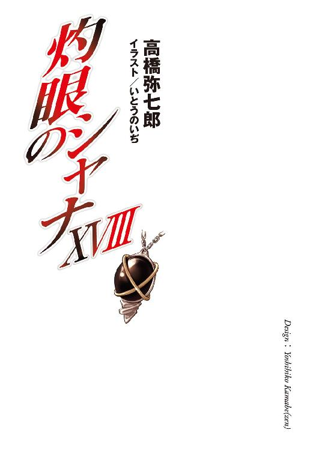
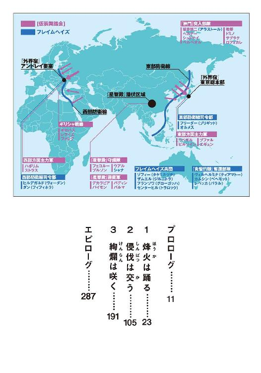
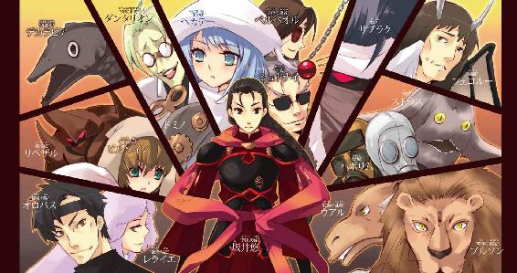
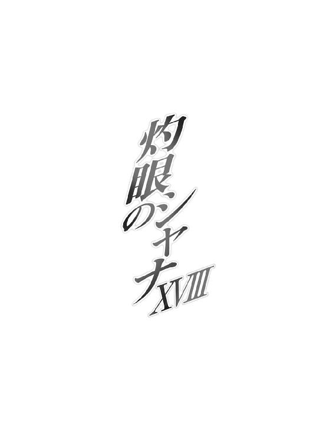
本書（電子版）に掲載されているコンテンツ（ソフトウェア／プログラム／データ／情報を含む）の著作権およびその他の権利は、すべて株式会社アスキー・メディアワークスおよび正当な権利を有する第三者に帰属しています。
法律の定めがある場合または権利者の明示的な承諾がある場合を除き、これらのコンテンツを複製・転載、改変・編集、翻案・翻訳、放送・出版、公衆送信（送信可能化を含む）・再配信、販売・頒布、貸与等に使用することはできません。
プロローグ
暗夜の浜辺に、波の音と潮の匂いが在る。
海岸の沿道も、立ち並ぶ街灯もないそこに、ただ波の音と潮の匂いだけが在った。
彼方に引かれているはずの水平線は、星なき曇天と溶け合うことで茫漠の中に掠れ、見るでもなく海を見ている二人を闇の奥の奥、感覚の失調へと誘う。
その一人、細身の女性の鼻先に、打ち寄せた波の一滴が跳ねた。
途端、
「遅えっ!!」
先刻からギリギリと噛み鳴らされていた歯を剥いて、爆ぜるような叫びが上がる。
「なにやってんだ、ヴィルヘルミナの奴ぁ!?」
「まだ始めてから、三十分も経っていないよ」
と、女性の右手首にある金色のブレスレットが、対照的にのんびりした男の声で答えた。
「夜の、しかも海中の作業だ。そうそう簡単には終わらないさ」
「なら、なおさらオレたちも手伝った方が良かったんじゃねえのか？ 三人なら早さも三倍だし、少なくとも、待たされて退屈するこたぁなかった！」
女性は言って、ガシガシと短い髪をかき混ぜた。
相手を責めているのではなく、非効率なやり方に苛立っている。
そんな邪気のない女性を、笑わず真面目に、隣のもう一人が諭す。
「ああ、とはいえ、あそこは彼女が長きに渡って暮らしていた、故郷の一つと言って良い場所です。一人で行く、と言った心情を、ここは察すべきでしょう」
平静な声に似つかわしくない、小柄な子供である。鍔の広い麦藁帽子を被り、布に包んだ巨大な棒らしきものを肩に担いでいる。その全身からは、尋常ならざる存在感が滲み出ていた。
手首にある飾り紐からも、同意する老人の声があがる。
「ふむ、そういうことじゃの。それに、あれの扱いに慣れぬ儂らが、わざわざ余計な手を出して作業の邪魔をする必要もあるまいて」
言われた女性は、フン、と鼻を鳴らして、
「はいはい、待ちゃいーんだろ、待ちゃ」
人には見通せない闇の奥へと、鋭い視線を戻した。
再び訪れた沈黙、波音の中に漂う彼女らは、フレイムヘイズ。
人を在らしめる根源の力〝存在の力〟を喰らい、この世のバランスを崩す、異世界よりの招かれざる客人──〝紅世の徒〟を討滅するため、その同胞にして強大な存在たる〝紅世の王〟と契約し、力を得た異能者である。
女性は『輝爍の撒き手』レベッカ・リード。
契約した〝紅世の王〟は〝糜砕の裂眥〟バラル。
子供は『儀装の駆り手』カムシン。
契約した〝紅世の王〟は〝不抜の尖嶺〟ベヘモット。
この二人にして四人は、もう一人にして二人のフレイムヘイズを、待っている。
正確には、彼女の齎すだろう現象を、待っている。
それは、眼前の闇の内に起きるはずである。
数秒の後、
「遅えな」
早くもレベッカは音を上げた。
海底深くに、人知れず巨大な球体が沈んでいる。
暗夜にも白昼にも、見ることのできない、球体。
その不可視の存在を感知する方法は、二つのみ。
一つは日中、薄く差し込む陽光の下、遊弋するもののない広大な球形を見て取ること。
もう一つはより簡単で、ただ見えないだけで実際には在る物を、手で触れてみること。
今、黒一色の海底に潜っている者──フレイムヘイズ『万条の仕手』ヴィルヘルミナ・カルメルは、後者の方法を試みていた。
彼女がこの球体を放棄してより、数年が経つ。
位置を覚えてはいても、またそれ自体が巨大であっても、やはり暗夜の海中で探索を行うには、それなりの時間が必要だった。容易に見つけられたであろう日中に探しても良かったが、どうせ浮上は人目に触れない夜に行うしかない。それならば、と日暮れまで、作戦の実行段階における対処パターンについて、他の二者と執拗かつ綿密な討議を重ねていたのだった。
（先にあれを見つけ、中で討議をすれば効率的だった）
とまで冷静に思考を流してから、
（もしかして）
闇に誘われるように、疑念が頭をもたげる。
（誰もここに入れたくなかった、のでありましょうか......この、私自身も含めて）
そのためにやってきたというのに、まったく馬鹿な話だった。
（探索続行）
その頭上に揺れるヘッドドレスから、彼女と契約し異能の力を与える〝紅世の王〟、〝夢幻の冠帯〟ティアマトーが、声なき声を伝えてきた。
いつしか水を掻く手足を止め浮遊していたことに、ヴィルヘルミナは気付く。まるで、思っていたことを肯定するように、あの地へと近づくことを拒むように。表情を引き締め、
（了解であります）
同じく、声なき声で返す。
（たしか、先の捜査では、こちらに『感』が──）
彼女らは漫然と泳ぎ回っているのではない。無数のリボンを海中へと放射状に広げる方式で事前の捜査を行い、大きな壁がある、と感じられた方角へと進んでいる。その額に、
ゴン、
「！」
となにかがぶつかった。
暗闇の奥へと手を差し伸ばすと、たしかに見えないものが触れている。
（発見）
（で、ありますな）
言い合って、着いた手を支点に、身をより深く潜らせてゆく。徐々に増してゆく水圧も、フレイムヘイズたるの身には、僅かな枷にしかならない。やがてブーツの底が、海草の薄く覆う岩盤へと降着した。
と同時に、彼女の指先が久方ぶりの自在式を、桜色に輝く光の粒として点す。
（......）
ほどなく、暗い海底にも、同色の仄かな紋章が浮かび上がった。自在式に呼応し光る目印、また外から殻を開ける鍵穴でもあるそれは、何度か明滅してから、
「！」
不意にヴィルヘルミナを勢いよく、周囲の海水ごと内側へと吸い込んだ。
海中のそれとは違う、落下にも似た浮遊感が数秒、一転して視界を眩い陽光が満たす。
「......、......」
なにかを言おうとして、ずぶ濡れのヴィルヘルミナは声を詰まらせた。
撒かれた海水を踏んで立っているのは、双塔の城門。
頭上には、偽りの青空と陽光を映し出した殻の内壁。
背後には、本来外に差し渡され出入り口となる宮橋。
前方には、中央に石畳の道を一線つけた緑なす庭園。
その奥には、瓦礫の山を周囲に置いて聳える大伽藍。
清めの炎で海水を払うと、知らず足が、前へと歩みを進めていた。
かつて攻撃を受け破壊された城門の中は、積み重なる石から落とし格子に張られた綱まで、完全に修復が終わっている。歩む先へと延びている石畳も、焦げ目一つ残っていない。取り巻く堀は清水を湛え、濁った空を映し出していた殻も、名残を見せず爽やかな光を降らせる。
元からこの城砦に備えられていた建物や設備だけが、完全に修復されていた。
修復されていない、歩む先で伽藍の前に積み重なっている瓦礫の山は、この移動城砦を住居と定めた彼女らが（実作業としては彼女の独力で）、後から増築した城館の跡である。
（ああ）
その、見慣れたものより少し寂しい光景は、大きな戦の前にかけがえのない友と乗り込んだ瞬間を、すぐ後に二人の同志と新しい暮らしを始めた日々を、彼女の脳裏に蘇らせた。自分の傍らに感じた絆、合わせた歩調や共に在る空気が、今はないことも、同時に。
ゆっくりと踏みしめて、瓦礫の山を真っ直ぐに登る。
砕けた石壁や朽ちた梁、溶けて窓枠と一体化したガラス等、ここでの戦いの痕跡には、藻や貝殻、海草らしき茶色く干乾びたものが垢のようにへばりついていた。
それらの所々に、日用品の残骸も混じっている。
多くは錆びた金属製の家財道具であり、稀に本であったことを思わせる朽ちた藻の塊もあった。割れている見知った皿や装飾の施されたテーブルの足、苦労して据え付けた煙突や送電線の跡等が、視界の端々に過ぎってゆくが、ヴィルヘルミナはあえてそれらを無視する。
今は、振り返るときではない。
ここに確かに在った、数百年の長きに渡る暮らし......〝天壌の劫火〟アラストールに相応しい契約者、『炎髪灼眼の討ち手』となるべき者を育て上げるための数々の試行錯誤と、その結実たる最後の十数年。行き着いた、一つの生別と、一つの死別。
今は、それら過去の齎した大事なものを守るため、前を見据えて進むときだった。
それでも、ヴィルヘルミナは、
「どうか、力を」
誰かに向かって、常にはない他を頼る言葉を、口にしていた。
他のものについてなら、彼はなにもくれないだろう。
しかし、これだけなら、力添えをくれる。
皆が育てた娘のためになら。
「再会と、武運を」
どこまでも真摯に、今だけに許された願いを、共に果たせる行いを、口にしていた。
ティアマトーは、なにも言わない。
伽藍の大扉を開けて、彼女らは中に入る。
五廊式の巨大な柱列が、圧倒的なフレスコの天井画が、再び目に飛び込んできた。
ここを駆け回っていた少女、背をもたせ掛け佇んでいた白骨の面影を、遠く幻視する。
僅か目を細めて歩みを進め、本来祭壇のある場所にぽっかりと開いた大きな穴から、奥の暗闇へと入る。ここは本来、彫像類の倉庫だったが、後に鍛錬のため入り組んだ回廊に改装していた。今はその回廊を仕切っていた壁も崩れ去り、最奥への道が一直線に延びている。
即ち、城砦の心臓部たる、古式の聖堂。
「......」
中に入ろうとした足が、引き攣るように止まり、またすぐに踏み込んだ。
外の光を通す窓を持たない石造りのドームに、やはり明かりは──ない。
同心円に配された二重の柱列、中央へと落ち窪んでゆく段状の床、そして段の底に、銀でできた空の水盤が置かれている。やはりこれも、修復は終わっていた。
宝具『カイナ』。
本来は、〝紅世の徒〟を、そこに在るために必要な〝存在の力〟を消耗させずこの世に留め置くためものだが、城砦の建造者たる〝紅世の王〟と人間たちは、これに城砦そのものを制御する機能も付加していた。
（内部の修復は完全に済んでいる......となれば、予定通りあの方法を使えるはず）
ヴィルヘルミナは、ひらりと花弁のように宙を舞い、空の水盤の上へと降り立つ。
「どうか、力を」
もう一度、既に亡い彼に言って、目を瞑る。
頭の中に直接、城砦の置かれた状況と動作の方法とが飛び込んできた。
命じる言葉は一つ。
「──『天道宮』、浮上せよ──」
海岸でしびれを切らせていた一人、
「おお！」
端然と立って待つのみだった一人、
「......！」
双方が目を見開いて、遠く前方を注視した。
静かに黒々と波打つ海面が、陥没するように撓んで一転、ゆるりと盛り上がってゆく。地響きとは違う、流動する轟音が夜気を震わせ、潮風に多量の海水を混ぜた。ほどなく、盛り上がりは頂点を超えて弾け、空中から滝を落とす不可視の物体が浮き上がる。
圧倒的な重量感の塊が、水煙を周囲に撒いて暗夜に飛翔していた。
「ああ、どうやらいけそうですね」
「ふむ、あとは上手く捕まえられるかどうか、じゃが」
カムシンとベヘモットは言うや、トン、と軽く直上へと飛び上がり、
「そっちも連絡受けてんだろ？ なんとかな──」
「ぅわっぷ」
レベッカとバラルは答える途中、浮上に伴う大波を頭からかぶった。
二人の元に、見えない中空から長い宮橋が下ろされてくる。
１ 烽火は踊る
人知れず、戦機は熟していた。
スイス北部、ドイツとの国境も近いクローテンに位置する、チューリヒ国際空港。
透き通った朝日の中、大小の航空便が切れ目なく離発着し、観光からビジネスまで様々の乗客が行き交い賑わう様は、全く常と変わることのない、世の営みの光景である。
しかし、このターミナルの片隅にも、世の人の窺い得ない戦い、その一端が確と存在していた。一般客が立ち入りを許されず、存在することも知らない、空港職員の大半ですら、誰がなんのために設けているのかを聞かされていない、特別な賓客用ラウンジ、という形で。
その目立たない入り口の手前、管制塔への直通扉から現れ、短く殺風景な通路を駆け抜け、行き止まりにある受付ゲートをパスし、豪華な絨毯敷きの廊下を踏ん付け、一番奥の部屋を飾る重厚な木の扉を押し開いて、怪しすぎる身形の男が飛び込んだ。
「サバリッシュ総司令官!!」
どれほど怪しいかというと、大きな壺を背負っている、というほどに怪しい。長い髪で目元を隠した細身の男で、場違いなサファリルックを着込み、腰には膨らんだ多くのポーチを下げている、というほどの怪しさも、そこに加わる。
彼、『姿影の派し手』フランソワ・オーリックは、旅客機に乗るときであっても、自身の契約する〝紅世の王〟、〝布置の霊泉〟グローガッハの意思を表出させる神器たる壺〝スプレット〟を下ろす気はないのだった。それ以外の部分は、彼個人の感性によると、社会常識を弁えた格好の範疇に入るものであるらしい。
一方、飛び込まれた側......ラウンジの革張り椅子に座り、書類を手に協議していた二人と、窓際に立って外を眺めていた一人は、彼の気色に押されるでもない。平然と迎える。
「どうしました、フランソワ」
「そろそろ、開戦の時節ですかな？」
書類を手にする、四十過ぎの修道女が、当人と取り澄ました声、二つの声で返した。
彼女は、未曾有の危機に面した外界宿を指導する地位にある総司令官『震威の結い手』ゾフィー・サバリッシュ。もう一人の声、契約している〝王〟は、ヴェールの額に刺繍された青い星型の神器〝ドンナー〟に意思を表出させる〝払の雷剣〟タケミカヅチである。
あっさりと急報の内容を言い当てられ、一瞬声を詰まらせる契約者に代わって、
「当たりよ」
壺の中からグローガッハが声を上げた。
促されるように、フランソワも続ける。
「よ、よくお分かりで」
それには、書類を手にしていたもう一人、立て襟のオーバーコートに将校の帽子を目深に被った壮年の男が、やはり当人としわがれた声、二つの声で答える。
「現状、急報といえばそれ以外にあるまい」
「それより、報告の詳細を聞こうか」
彼は、外界宿の編制した決戦兵力の幕僚長を務める『犀渠の護り手』ザムエル・デマンティウス。もう一人の声、契約している〝王〟は、机に置かれた親指大の銀杯型の神器〝ターボル〟に意思を表出させる〝吾鱗の泰盾〟ジルニトラである。
フランソワは、この二人に言われて初めて、
「は、ええ、了解」
自分が握り締めていた報告書の存在を思い出した。慌ててクシャクシャになっていたそれを広げ、咳払いをしてから、改めて報告する。
「ゴホン......せ、先刻、現地時間１６３０時、日本・佐渡島の監視所が『レーダーに通常航路から外れ、南下する大型の船影を複数捕捉。追跡および調査を開始する』との報を発した直後、封絶と思しき連絡途絶状態に陥った、とのことです」
防音設備の整った部屋に、緊迫と静寂が訪れた。
報告書のめくられてゆく音が、やけに大きく響く。
「この報告を元に、フィリピン・マニラ外界宿本部に照会を取ったところ、日本近海を航行中の船舶の内、八隻のタンカーが通信を途絶させている、とのこと。遭難信号は、報告の時点までに一つも出ておりません。日本の東京総本部も現在、海保各管区と共同して捜索中です」
「佐渡近海なら、もう日本本土は目と鼻の先。上陸は避けられないでしょうね」
グローガッハが推測を加え、報告は終わった。
各々、沈思すること数秒。
ザムエルは、持っていた書類を傍らの机に置くと、どうやってか手袋を嵌めた指をパチンと鳴らした。その弾ける音と共に、どこからか丸めた大きな世界地図が掌の内に現れている。これを手早く広げると、また彼は指を鳴らして取り出した赤い鉛筆で、日本列島の中央、日本海に浮かぶ島に、新たな項目を書き加えていった。
「新潟港から本州の中央を突破し、最短ルートで東京総本部を衝くつもりだな。日本に限っても、一軍のみであるはずはないが、まずこれが主力に違いあるまい」
「外しようのない予想の通り、か」
ジルニトラも心中の重さを声に表す。
彼らの広げた世界地図には、細かい文字と略号による赤色と青色の記述が一つの形として、びっしりと書き込まれている。
赤い記述は、中国沿海部から東南アジアの海岸線を沿って、一旦ヒマラヤ山脈へと上がり、そこから中東全域を包み、小アジアからウクライナ、ベラルーシで北への線を作る、一塊の勢力圏を示すものである。
この、世界の四半分は占めていようかという領域が、今や〝紅世の徒〟......より正確には〝紅世の徒〟最大級の組織［仮装舞踏会］による、実効支配の下にある。
数千年、自らは大規模な戦闘を仕掛けず、この世に渡り来た〝徒〟らの互助組織として、粘り強く慎重に勢力を拡大してきた彼らは、半年ほど前より俄かに動きを活発化させ、地図に示される広大な勢力圏を一挙に築き上げたのだった。
彼らが動き出した理由は、とあるルートから情報を得ている。
また、その進む先に在る目的についても、推測がなされていた。
彼らは、数千年の昔、敗北の末に不帰の放逐を受けた盟主・創造神〝祭礼の蛇〟の意思総体を『代行体』なるモノに宿す、という方法で、仮の復活を成功させてしまったのである。その『代行体』の言動からは、かつて創造神が阻まれた企み......自らの権能を以って世界の在り様に手を伸ばす、震慄の行いを、未だ諦めていないことがありありと見て取れたという。
絶対に、阻まねばならない。
その企みが、世に大きな波乱や混沌、さらには破滅をすら齎す危険性を帯びている限り。
しかしながら、フレイムヘイズ陣営の旗色は、悪い。
数千年の準備の成果たる［仮装舞踏会］の大攻勢により、僅か半年余で重要拠点の多くは陥落し、主導部は悉く殲滅され、主力軍の一角も ぎ取られている。後手後手に回った外界宿は、先の大戦の英雄たるゾフィー・サバリッシュを新たに推戴し、急ぎ態勢の立て直しを図っていたが、それも必要十分と言えぬ間に、全面戦争へと引きずり込まれつつあった。
ぎ取られている。後手後手に回った外界宿は、先の大戦の英雄たるゾフィー・サバリッシュを新たに推戴し、急ぎ態勢の立て直しを図っていたが、それも必要十分と言えぬ間に、全面戦争へと引きずり込まれつつあった。
地図にある青い記述は、フレイムヘイズが辛うじて構築し得た、対［仮装舞踏会］防衛線である。それらは大きく分けて、東西に二つ。
東は、日本から台湾、フィリピン、ボルネオまで北東から南西に走るライン。
西は、ポーランドからルーマニア、ギリシャ、エジプトまで南北に走るライン。
それぞれを構成する各拠点に全世界から結集した残存兵力を立て籠もらせ、暴威の氾濫を抑え込む堤防とするのが、現在外界宿側の取っている基本姿勢である。
東部防衛線は、既に上海を失陥し、大陸から逐われている危機的状況にある。この上、日本を破られるようなことがあれば、その戦線は太平洋中部までの後退を余儀なくされる。ハワイも地勢的に重要な拠点であり、それなりの員数を予備兵力として駐留させてもいるが、東京には到底及びの付く規模ではない。最悪の場合はアメリカ西海岸への全面撤退も敢行する......その準備を、戦局の推移を見つめながら進めてさえいた。
西部防衛線でも、開戦に先立って運営・交通の両指導部諸共、重要拠点を多く潰されている。指導部直轄の地域であったがゆえに、これらを失った混乱も未だ完全には収束していない。防衛線が今以上に後退すれば、辛うじて保たれていた相互の連携は戦火によって寸断され、外界宿のシステム全体を瓦解に導く可能性まであった。東部より多くの人員が広大な地域に配置されているのは、それら深刻な窮状を背景に持つためである。
双方、まさに切迫した情勢下にあるが、しかしフレイムヘイズ陣営も、決して無策のまま立ち往生しているわけではない。ゾフィーによる指導の下、各地から主要な腕利きを可能な限り引き抜いて、一つの部隊を編制している。
数百年の時を経て、再びの呼称を与えられた彼らこそ、『フレイムヘイズ兵団』。
総司令官ゾフィー・サバリッシュの直率する、フレイムヘイズ陣営の決戦兵力だった。
彼女らの立てた作戦の大方針は、決して破られてはならない東西の防衛線──フレイムヘイズと外界宿にとって、敵は［仮装舞踏会］だけではない、他組織も含む全ての〝徒〟である以上、そのシステムや拠点を瓦解・壊滅させるわけには絶対に行かないのである──を堅守しつつ、この精鋭を結集した兵団をもって広大な敵勢力圏内へと分け入り、何処かに身を潜める本拠地・移動要塞『星黎殿』を陥落せしめる、というものである。
無論これには、東西防衛線の維持という難事を前提とした、敵勢力圏内への迅速な侵攻、『星黎殿』の確実な捕捉、将軍〝千変〟シュドナイを始めとする強大な敵戦力の排除など、実行段階における険しく苦しい関門が、多く立ち塞がっている。
が、［仮装舞踏会］盟主・創造神〝祭礼の蛇〟代行体の討滅、という最終目標へとフレイムヘイズらが辿り着くには、この一本きりの道を進むしかない。険しかろうと、苦しかろうと。
この世に太古以来という未曾有の危機が、確実に迫っているのだから。
今、世に在るフレイムヘイズ、彼らと契約する〝紅世の王〟、さらには外界宿の構成員の人間ら、世界のバランスを守る使命を胸に抱く者の全てが、実在する神と、それを奉ずる大集団との戦いに、心を燃え立たせて勇み、力の限り挑んでいる。
今、空港のラウンジに滞在している彼女らは、その帰趨を決する兵団の合流地、行動の始点となる場所へと向かう途上にあるのだった。部屋の内に見える員数が、駆け込んできたフランソワを含め、片手の指に足りない四人にして八人のみ、という小勢であることには、少なからず理由がある。
ゾフィーは、ザムエルが新たに書き記した記号を一瞥で確認し、頷いた。
「既に、こちらの行動予定は、東西の司令部にも、それ以外にも、伝えてあります。後は実行段階における、彼らの奮戦に期待するとしましょう」
「それより、フランソワ・オーリック副官。急報の到着毎に、一伝令の如く走り回るより、管制塔からの直通電話でも使った方が効率的だったのでは？」
タケミカヅチの指摘にフランソワは、
「はあ......他はともかく、第一報だけは自分で届けようかと思いまして」
言って、申し訳なさそうに頭を掻き、背中からグローガッハが冷静にフォローする。
「大丈夫よ。グレード指定の高い報告が来たら、電話を繋いでもら──」
リリリ、と声の中途で、壁に設置してあった電話が鳴った。
フランソワは周囲に無言の了解を求めると、受話器を取った。二言三言、短い受け答えをしてから戻し、早速の続報を伝える。
「現地時間０９４８時、ルーマニア・スチャヴァ東方において、斥候が同じく、封絶と思しき通信途絶状態に陥りました。西部防衛線司令部は全域に臨戦態勢を発令。以降の連絡は、伝令を経由した封絶越しの定時通信に移行する、とのことです」
「図っていたかのような......いえ、図っての、同時侵攻でしょうね」
「ふう、む」
ゾフィーに答えるタケミカヅチも、流石に言葉少なくなった。
と、窓際に立っていたもう一人が、口を開く。
「死の彼方にのみ、生への道がある、ですか」
短躯ながら頑健さを見た目にも表す初老の男、フレイムヘイズ『皓露の請い手』センターヒルである。彼は複雑な事情から（当人らにとっては単純な理由から）フレイムヘイズ兵団の構成員ではなく、傍観者・同行者としてここに在った。
彼の腰に下がった、角ばったメダル型の神器〝テオトル〟から、彼と契約し異能の力を与える〝紅世の王〟、〝殊寵の鼓〟トラロックが、涼やかな青年の声を零す。
「戦いが、始まったのですね」
その当たり前の言葉は、まるで開戦の喇叭のように、聞く者らの心に響き渡った。
東京都心は今、世界より欠落している。
外部から因果の流れを切り離し、その内部を隠蔽する自在法『封絶』の作用である。
この手の事象が齎す影響について、さほど気にする方でもない〝紅世の王〟──［仮装舞踏会］東部方面主力軍司令官〝驀地〟〝リベザルも、流石に東京ほどの大都市中枢を静止させている状況には、ややの感慨を抱かずにはいられない。
地上二百メートル余の高さを誇る新宿住友ビルの展望フロアを数階ぶち抜いて作られた臨時の指揮所。その壁際に屹立する眼下、巨大な陽炎のドーム内で静止している、世界有数の大都会を見下ろし、呟く。
「以前、パリで［革正団］どもを蹴散らしたときも思ったが......」
「え、なにか言った？」
傍ら、ブカブカローブを纏った子供の姿をした〝徒〟が、地図から顔を上げた。リベザルの副官を務める〝蠱溺の杯〟ピルソインである。
長きに渡り、戦闘を担当する巡回士たる己を、情報収集を行う捜索猟兵として補佐してきた相方に、リベザルは首を傾げつつ答える。
「いや、人間ってのは、俺たちなんぞ比べ物にならんほど、世界の占拠に貪欲な生き物だ、とかそういう感想......気分か？ なんだ、つまり......もういい」
感じたことを上手く言葉にできない。その不機嫌を、象ほどもある直立した三本角のカブトムシ、という巨体をドカンと座らせることで誤魔化した。
ぴょん、と体ごと浮き上がる中、ピルソインはクスリと笑う。
「なに、今さら人間に敬意でも払って、人化の自在法でも使う気になった？ 暇つぶしの妄想にしちゃ、悪くない案だね」
「よせやい。そんな姿、ドスが利かねえったらありゃしねえ」
それより、と座ってなお見下ろす形でリベザルは尋ねる。
「まだ〝燐子〟どもの配置は終わらねえのか？」
腕組みの上から水晶の数珠でグルグル巻きにした下二本に加え、上二本の腕を同じくガッシリと組んだ。これは感情の表れ難い顔に代わる、不満の表明である。
ピルソインは軽く肩をすくめる。
「そりゃあ、高低差があるだけで、どこも敵の前哨陣地の真正面だからね。みんな慎重にならざるを得ないさ」
そうして、壁面に開けた大穴からもう一度、東京という戦場を一望する。
封絶の下に広がっているのは、僅か十数キロ四方の区画に、包囲する側とされる側が、市街の地形を利用した陣地を組んで睨み合っている、静かながらも凄まじい状況。
その中心地となっている、黒く高く聳える一棟のビルは、フレイムヘイズ陣営にとって極東最後の牙城となった、外界宿東京総本部である。
彼ら［仮装舞踏会］は、このビルを囲んで置かれた、リベザルらの詰める新宿住友ビル、西の新国立劇場、北の成願寺、三つの指揮所を、歪な円形に結んで展開している。
対して外界宿は。高速道路や公園の丘沿いに兵員を多数詰めて防御陣地を構築していた。
互いの距離は百メートル前後、表情の判別すらつくほどの至近である。これほどまで近づいていながら戦闘が始まっていないのは、攻撃側が有利な地歩を占めるため慎重に戦線を絞ってきたこと、防衛側が不利な戦力を集中させるため可能な限り後退を続けてきたこと、双方の理由による。それら戦線の整理縮小も極限まで進んで、今や攻守ともに前線は密集、戦端が開かれるのを待つだけとなっていた。
そんな中、リベザルが開戦の契機と配置を待っているモノらが、彼らの正面に聳え立つ双塔の高層建築......東京都庁第一本庁舎の、頂も近い壁面に二組、ジリジリとよじ登っている。
数十の〝徒〟と、その後ろに続く大きな筒型の〝燐子〟が計四体である。
かつては騎乗獣として様々な形態を持っていた〝燐子〟──〝徒〟の作った下僕──は、近代以降の集団戦においては、専ら使い捨ての兵器として扱われていた。多くは、作るのに複雑な手間のかからない（ただし作るに当たっては複数人が共同し、単純な構造ながら大容量に仕上げる）、大威力の炎弾を力の続く限り撃ち放って消滅するだけの型である。
これらを包囲の各地点で高所に上らせているのは、言うまでもなく、眼下に攻撃目標があるためだった。第一本庁舎であれば、狭い道路を挟んだ新宿中央公園となる。
都会の公園に似合わない、木々が鬱蒼と密集し、今は不気味に静まり返るそこには、数百、あるいは千を超える数のフレイムヘイズらが前哨陣地を構築し、来る襲撃に備えているはずだった。南北に長い長方形の形をしているこの公園は、攻防両陣営にとって、東京総本部の喉元に食いつける・つけないの鍵となる、最重要の要衝なのである。
都庁の砲兵部隊は、この地に特大の炎弾を雨霰と見舞う大きな役割を負っていた。包囲各隊の砲も現在、照準を東京総本部ビルに合わせているが、各々担当とする敵部隊を持っている。
これら配備地点のいずれにおいても、現在のところ登攀に対する阻止攻撃は加えられていなかった。東京総本部の司令部は、包囲に臆して積極性を欠いているのか、まずは防御に専心するつもりなのか、リベザルらの側でも判断は付けられていない。
（全砲門の配備が完了するまで、あと十分ってとこかな）
ピルソインは地図の脇、コンクリートの床から生えている大きな、数十もの白い花を下げる鈴蘭に目をやって、そう当たりを付けた。
鈴なりの花は、五分の四ほどが薄い明かりを放っている。これは、兵の配置状況を示す計器の一種であり、通常の機器が作動しない封絶内での有線通信機でもあった。花の全てに光の点った瞬間、東京における戦端が開かれるはずである。
と、また一つ、花に光が。
「......結局、ここまで突き進んできたけど、まさか連中が、本当に総本部に立て籠もるとは思わなかったな。こっちは事前演習の通りに事を進められて助かるけど」
相方の、高まる機運への緊張を和らげようという会話に、リベザルは乗ってやる。
「守る側ってのは、攻める側と違って、常道を外した手段を取りにくいのさ。ここを落とされりゃ、極東は底の抜けた鍋だ。死守する必要のある泣き所を持ってる時点で、今の状況に行き着くのは理の当然ってもんよ」
この、東京を始めとする［仮装舞踏会］による『外界宿』への大々的な、世界規模の攻勢は、彼らがかねてより推し進めてきた計画『大命』が、事前工作である第一段階を終え、第二段階へと移行した証、それを構成する作戦の一環だった。
リベザル率いる東部方面主力軍に与えられた命令は、冠した名の通り、東部防衛線の最重要拠点・外界宿東京総本部の攻略、および同所に在る敵戦力の覆滅である。当地を陥落させることで、現在進行中の計画、また以降の、より重要な時節に、フレイムヘイズ陣営が反撃に転じ得る余力を完全に喪失させる......この戦略目標は、西部方面においても同様だった。
中国のとある地点に停泊する彼らの本拠地・移動要塞『星黎殿』を進発した時点で、［仮装舞踏会］はその沿海部までを押さえている。ゆえに当然の流れとして、東部方面における開戦の烽火は、対岸である日本海沿岸から上がった。
フレイムヘイズ陣営が、想定される［仮装舞踏会］進撃ルートに配置した哨戒網の一隅、佐渡島監視所への先遣隊の強襲が、最初に交わされた兵火、そして恐らくは東京総本部への第一報だった。戦いは短時間で終わった。
その開戦と相前後して、日本海の中ほどで通常航路を外れた輸送船団が、続々東進を開始した。船上船内に在ったのは、言うまでもなく［仮装舞踏会］東部方面軍の主力。目指すは日本海側の中核国際港湾、新潟港である。
封絶下、フレイムヘイズ勢力圏への強行上陸、という状況ながら水際の抵抗は皆無で、軍司令官リベザル以下東部方面主力軍は、無傷のまま最初期の作戦を完遂した。彼らは直ちに、東京総本部を目指して進撃を再開する。
日本の本州は、東西に厚みを持っていない。山野の起伏をほぼ無視できる〝徒〟であればなおさら、この踏破は容易かった。大軍であることを感じさせない快足で、彼らは新潟港からたった一晩、東京の外縁部に到達した。
この間、フレイムヘイズ陣営による阻止攻撃は小規模かつ散発的で、進軍を僅かでも押し留める力とはなり得ていない。リベザルが最も警戒した関越の境界地域でも、斥候との不期遭遇以上の規模で戦いは発生していない。
日本には他にも三隊、山形の酒田、京都の舞鶴、福岡の博多へと、日本の主要外界宿制圧のために上陸していたが、いずれも同様の状況となっている。各部隊ともさしたる抵抗を受けぬまま、それら拠点の包囲を完了していた。
大陸での、沿海部から内陸への強行偵察を行う等の積極性とは対照的な、本来堅守すべき日本での手応えのなさ。この状況はリベザルら司令部に、想定していた一つの方針をフレイムヘイズらが採っている、と確信させた。
即ち、各重要拠点に兵力を結集しての籠城戦である。リベザルは一旦進軍を停止させ、至近に後背を突かせるための敵遊撃部隊が伏せられていないか、念入りに探索を行ってから、改めて東京都内へと攻め入っている。
以上の経過を踏まえた戦いが、まさに今、全ての準備を終えつつあった。
未点灯の花が、残り五。
「リベザル、そろそろ号令の準備をし──」
言う中で、ピルソインは、見た。
壁に開けた大穴、上の縁にかかった指先を。
それを支点に躍り込んでくるフレイムヘイズらを。
彼らが手に手に振りかざす、刀剣のギラギラした輝きを。
「──っ!?」
息を呑む、一秒あるなしの間に、
「っははあ!!」
相方の笑声が響き、全てが視界からすっ飛んだ。
追いついた認識が、壁になにかの激突する轟音として、耳に飛び込んでくる。
「封絶の外から飛び降りでもしたか、上から侵入とは、面白い趣向だ」
いつの間にか立ち上がっていたリベザルが声を放る先、黒い石壁を砕くほどの威力で叩きつけられ、微かに呻き声を上げているのは、五人のフレイムヘイズ。
全員が暗色の戦闘服で、手に持つ刀剣や腰の鞘とのミスマッチも甚だしい。素早く体勢を立て直し、今度は正面から身構える姿は、開戦に先んじる奇襲部隊に選ばれた強者に相応しい、危険な鋭さを持っていた。いずれも次なる攻撃を、油断なく狙っている。
そんな暗殺者らに、司令官たるリベザルは自ら声をかけた。
「登ってく砲兵どもを放置してたのは、布陣の完成に意を注ぐ、俺たち司令部を奇襲するためか？ なかなかいい小細工だったぜ。なあ、ピルソイン」
「......」
まんまと引っかかったピルソインとしては、意地悪な問いに答えようもない。
五人の討ち手も無論、別の意味から答えず、沈黙を守っている。
と、相方が傍らに置かれた自分の袋に手を伸ばすのを、
「よせ」
リベザルは止めた。
「今、余計な力を使うな」
言い終わる前に、
巨重が床を蹴っている。
三本の角が石壁に激突している。
二人のフレイムヘイズを刺し貫いている。
轟音と飛び散る瓦礫の中で、残る三人は目を剥いた。
間を置かず、リベザルは下二本の腕を広げ、水晶の数珠玉を八方に散らす。
それら透徹の小さな輝きの群れは、まるで散弾のように高速で飛散、フレイムヘイズらを撃ち抜き、吹き飛ばした。
「ぐ！」
「ぎゃあっ!?」
ようやく悲鳴を上げたのは、二人。
その陰に運よく入っていた残る一人は、壁に開いている大穴へと跳ぶ。恐怖と焦りで見開かれた目には、唯一の退路しか見えていなかった。
その視界の上から、黒い死の影が猛烈な速度で降ってくる。
「──ふん！」
リベザルが、まるで虫でも叩くように、宙にあった逃走者を掌で叩き潰した。
床に着く前に圧潰した体が、爆炎となって吹き荒れる。
その中、揺るがず立つ〝紅世の王〟は戦士から一転、
「ピルソイン！ ブファルとエギュンの方は無事か確かめろ!!」
東部方面主力軍司令官として、副官に包囲する部隊長の安否確認を求めた。
求められた副官も、戦いの間に鈴蘭でコンタクトを取っている。即答で返した。
「大丈夫、双方とも奇襲を護衛と一緒に潰してる！ 死傷者は護衛に七名......了解、包囲各隊から、敵陣に動きが見られる、との報告あり!!」
「ここでの爆発も見えただろうな」
遠く見下ろす新宿中央公園には、刀槍の蠢く証たる、殺伐の煌きが在る。
「奇襲の第二波もない、か」
鈴蘭の花は未だ二つが未点灯だったが、もはや戦機は熟していた。
「そろそろ、やるか──」
リベザルは、まるで全包囲部隊へと直接声を届けるように、
「全〝燐子〟砲兵！」
腹の底から吹き上がる、灼熱の大音声を張り上げる。
「第一射、撃てえ!!」
鈴蘭越しの号令とほぼ同時、包囲する高所からの一斉砲撃が、まるで連続する雷光のように閃いた。やや遅れて轟音が、広大な封絶の中を丸ごと揺るがす。
色も取り取り、混じり合った炎弾が、
ヒュン、
とも、
ブゥン、
とも聞こえる唸りを無数多重に奏でて空を走った。
巨大な動かぬ的である東京総本部の高層ビルが、それら砲撃の数だけ大爆発を起こす。着弾した炎弾のほとんどは、備えられていた自在法らしき防壁に阻まれ、徒に炎を撒き散らしただけだったが、稀に建材と粉塵を撒いて砕ける箇所もあった。
破壊のエネルギーを纏う松明とも見える、この有様に、
「番号偶数、標的を新宿中央公園防御陣地に変更！」
心は躍らせ、頭は静かに、再びリベザルは号令する。
「第二射、撃てえ!!」
応えて、二度目の砲撃が閃く。
遠目には樹冠のみしか見えない公園から、討ち手らが反撃の炎弾を放ち、また数十からなる斬り込み隊が幾つか、包囲側に向かって討って出ているのが見えた。やはり防衛側も、ただ無為に待っていただけではなく、開戦のために力を溜めていたものらしい。
そんな彼らの帰る場所を消し去るように、次々と炎弾が落着、爆発する。自在法で防ぎ損なった破壊の力が、木々を薙ぎ払い地面を抉り、逃げ遅れたフレイムヘイズを粉々にする。
それら鼓膜を痛打する轟きの中から、両軍の駆ける鈍い快音が溢れ出ていた。
リベザルは総身に炎の充溢を感じ、三度の号令を下す。
「砲兵部隊に告ぐ、これより砲撃は各自の任意！ 狙いは敵部隊のケツだ、味方に当てるな。襲撃を受けても無駄に踏ん張るな。危なくなったら、配置した〝燐子〟は自壊させて包囲部隊に合流しろ、以上！」
そうして直下、ビルの駐車場で待ち構える己の直率部隊に向け、
「攻撃部隊、待たせたな──突入せよ!!」
袋を背負ったピルソインを連れて、共に飛び降りた。
東部防衛線の要、外界宿東京総本部の攻防戦が始まる。
（こちらは、まずまず）
何処か深く沈んだ水底で、外界宿征討軍総司令官たる〝紅世の王〟、〝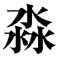渺吏〟デカラビアは、感情の籠もらない目で見つめ、冷徹に巡らす頭で考える。
（敵戦力に大きな動きは、なし）
東欧はルーマニア。
北部の都市スチャヴァから数十キロ離れた川辺の丘陵に、中世より増改築を続けてきた要塞がある。
表向きは『アンドレイ』の名を冠する教会だったが、古くはローマ人にタタール人、下ってはオスマン帝国にロシア帝国、さらにはオーストリア帝国からルーマニア王国、近くはソビエト連邦まで、訪れる者は皆、十字架とともに剣や銃を携えていた。
「今度の斥候も、やはり戻らなかったわね。引き時を見誤るほど素早く的確に、前哨陣地を潰しながら進んでくる......幸先が良いとは、とても言えない状況だわ」
作りも、簡素な白塗りの壁と低い鐘楼を備えた教会を中心に据えているが、そこを頂とした緩やかな斜面には、古めかしい城壁を中心に二周りほど、そこから一挙に裾野まで、近代的なコンクリートの分厚い壁が幾重にも張り巡らされている。
本来ならば観光地となったり、世界遺産の指定を受けたりしてもおかしくない、この自称教会は、しかし地元スチャヴァ県の地図にしか載っていない。第二次世界大戦後、枢軸国の遺棄した要塞でありながら、ソ連からの破棄要請もなかった。
この地を占拠した一団が戦後のどさくさに紛れ、意図的に忘れ去られるよう、各方面に細工を施したのが、その理由。一団とは言うまでもない、この世のバランスを守る異能の討ち手フレイムヘイズと、その支援・情報交換施設『外界宿』である。
「こりゃあ予測どおり、向こうの主力軍が来てる、ってことですかね。西部では最大の戦力を結集したとはいえ、やはり突出部に陣取るのは、肝が冷えるというか、なんというか......いっそのこと、相互支援の可能な後方に、戦線を後退させた方が良かったんでは？」
荒野の孤塁として佇むこの要塞を、フレイムヘイズらは変事に際しての牙城となるよう、密かに、かつ営々と労力を費やしてきた。先の連続襲撃事件で災禍を蒙らなかったのは、現代に残る要塞の防御力ゆえ......と立て籠もる兵員らは思っていた。事件で襲われたのは、現代的な利便性から街中に設けられていた重要拠点、つまり辺地の要塞たるここは無視されただけ、という普通に考えて分かる理由は、戦う前ゆえに、あえて無視している。
ともかく今、アンドレイ要塞は、その備えられた力を存分に発揮する機会を迎えている。課せられた役割は、外界宿西部防衛線における最重要拠点として、堅守すること。
「これ以上、戦線を下げると、辛うじて命脈を保っている残余の主要拠点が戦場になるわ。逆に、この突出部を大兵力で固守している限り、敵はここを主攻目標とせざるを得ません」
この中心、教会の低い鐘楼に設けられた物見台（というより、物見台に鐘楼の機能が追加されている形式）から二つの人影が、川の走り、草のそよぐ、長閑な光景を見下ろしている。
一人は、漆黒の喪服を纏い、ベールで顔を隠した貴婦人風の女性、
「フレイムヘイズも〝徒〟も、行軍速度が速すぎて、迂闊な戦線突破は即座に深入りとなり、窒息死の憂き目を見ることとなる。ゆえにこそ、守る側である私たちが戦線を形成する意味がある。そうではなくて、ダン・ロジャース？」
もう一人は、腕まくりしたワイシャツに緩めたネクタイ、くたびれたズボンの中年男性、
「私ゃ、チェスはやりませんが......たしかに、一戦場の行動基準が、そのまま地域にも当てはまる、まことにふざけた早足ですな。おかげで、堅く守る限りは向こうさんも思い切った進軍ができない。全体での不利はあるとして、ここで踏ん張る意味は確かにある、と」
これら、要塞の中央に立つには場違いと見える二人は、しかし歴とした西部防衛線の司令官と幕僚長であり、言うまでもなく強力なフレイムヘイズだった。
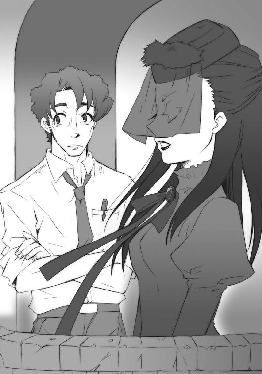
喪服の女性は、『昏亜の御し手』ヒルデガルド、
「いずれにせよ、私たちが各地の拠点をしっかり守りきることが前提の話です」
中年の男性は、『具象の組み手』ダン・ロジャース、
「そりゃ、まあ。肝っ玉母さんも口に出して言わないだけで、この戦いは実質死守命令ですからね。『世界のためだ、守りきれなきゃ死ね！』と......今時珍しい、真っ当なお題目に命を張れる我々は幸せ者ですな」
と、ダンの胸にある万年筆が、キビキビした女性の声を放つ。
「ダン、下手な皮肉はそこまで。感じるだろう、この気配」
これは、神器〝Ｂ．Ｓ．Ｉ〟。ダンと契約し異能の力を与える〝紅世の王〟、〝弄巧の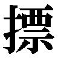〟フィフィネラの意思を表出させる神器である。
同じくヒルデガルド、略してヒルダと契約し異能の力を与える〝紅世の王〟、〝鬼道の魁主〟ヴォーダンが、厳かな男性の声で、左胸の真っ赤な宝石をあしらったブローチ、神器〝フリズスキャルヴ〟から続ける。
「心せよ、時こそ来たれり──」
「しますよ。せずにいられますか。なんせ......ドレル爺さんの復仇戦だ」
ダンは僅か声色を落として言い、傍らに行為を投げた。
ヒルダも静かに頷いて、低い鐘楼から見渡せる、広大な丘の斜面一杯に広がる要塞へと、たおやかな仕草で手を挙げて、告げる。
「皆さん、獅子奮迅の働きを期待します──御武運を」
着実に近づき膨らむ敵の気配に息を殺し、戦端の開かれるときを城壁の上で陰で待ち構えていた数多くのフレイムヘイズの軍団が、一拍置いて、討ち手と〝王〟ら全員の、
「応!!」
血を吐くような喊声で一斉に答えた。
敵の名称からすると皮肉なことに、彼らの装備は、ほとんど仮装大会の様相を呈している。
全身を包む板金鎧から現代風の戦闘服、緊張感のない全くの普段着や、戦場に居るとは思えない整ったスーツ姿までが見える一方、銃器の類は皆無で、古典的な刀槍の類ばかりが掲げられている。これら、覚悟の死に装束の不揃いなチグハグさは、しかし確かに人間ゆえ、人間の姿を核にするがゆえ、発生するものだった。
ヒルデガルドは、彼らの歓呼に加わらなかった傍らの男女にも、確認するように告げる。
「貴方たちが要です、頼みますよ」
「了解、頼まれました」
ダンは無理をする風も見え見えの下手な敬礼で、
「信頼には奮励で応える」
フィフィネラはハッキリと気風よく、それぞれ請け負った。
と、唐突に、
彼らの頭上一円に陽炎のドームが、足下一面に奇怪な火線の紋章が、見渡す限り広大な規模で形成された。フレイムヘイズと〝紅世の徒〟による戦いの前触れ......自在法・封絶である。
これらを形作る色に、二人にして四人は、いずれも覚えがなかった。この手の大規模な戦いにおいて、強大な者が封絶を張って力を浪費することは、まずない。雑兵レベルの〝徒〟（あるいはフレイムヘイズ）が、その役割のみに力を尽くすのが通例だった。
よって、アンドレイ要塞を守備するフレイムヘイズらは敵勢を直接捉えるべく、軍勢規模の気配が行進音を重く規則正しく上げて迫ってくる、対岸の丘陵へと目を凝らす。
そこに何気なく、
案山子のようにヒョロリと細いシルエットが、現れる。
ヒルダは、ベールの奥で息を呑んだ。
「!!」
「ん？ ありゃあ、もしかして」
ダンの疑問には、フィフィネラが答える。
「危険な上にも危険な奴が来た──〝煬煽〟ハボリムだ」
守備隊の注視を一身に受けるそれは、表情を隠す双頭のガスマスクから楝色の火の粉を吐息と漏らしつつ、ぬうっ、と両腕を横一文字に広げた。厚みを持たない、ボロのマントに包まれたその体躯は、しかし異様な迫力と不吉な印象で、見る者に脅威を抱かせる。
と、その足元から、楝色の影が溢れた。
封絶の火線に照らされる地表で、薄く揺らめく本物のそれと異なり、彼の炎の色を取って猛然と、影は平坦な洪水として斜面を侵食してゆく。
そうして遂に、［仮装舞踏会］西部方面主力軍が、来た。
対岸の丘上に黒く、稜線が丸ごと競り上がったかのように、形態は人型から獣身から無機物まで、大きさは小柄な人間大から天を突くような巨体まで、足音を地鳴りのように響かせて、重厚な軍容を露にする。彼らは一旦、ハボリムと肩を並べて止まり、
その細い右手が前へと差し向けられるのを合図に──
雪崩を打って、突撃を開始した。見る間に軍勢の一人一人、駆ける足から伝い上がって全身を、斜面に溢れた楝色の炎が包み込んでゆく。まるで一枚の薄皮を被せるように。
ほどなく、その効果は現れる。
斜面を駆け下ってより僅か、全身を覆われてより即座に、踏み出す足はより速く、刀槍を振る腕はより逞しく、咆哮する声はより大きく、強化されていた。勢いを増した〝徒〟らの奔流は、まさに怒涛と化して一路、城壁を撃砕すべく猛進する。
ダンは鐘楼の手すりから身を乗り出して、文字通りに総身を震撼させた。
「ひょお、すごいな。一軍丸ごとのブースターか」
答えて、万年筆からフィフィネラが。
「その通り。あれが〝煬煽〟ハボリムの自在法『燎原』だ。他者に加護を与え、力をより強く、炎をより熱くする。この規模で見たのは、そう、俺も初めて──」
説明の中途で、ヒルダとヴォーダンが、
「いらしたわね」
「疾く、跳ばれよ──」
既に言って、鐘楼から華麗に、スカートを押さえて飛び降りていた。
その仕草に見惚れ、言葉の意味を図りかねたダンを、
「は？」
「砲だ!!」
フィフィネラが怒鳴りつけた。
いつの間にか、ハボリムと横一列並ぶように、丘の稜線に大筒型の砲撃用〝燐子〟が引き出されている。のみならず、早くも筒先が前傾し狙いを定めていた。
開戦の挨拶として、要塞の中心部で、一番目立つ高い部分......鐘楼に。
「うわぁお!?」
間抜けな絶叫を上げ、不格好な身のこなしで、ダンは鐘楼から転がり落ちた。
数秒開けず、砲撃が雨霰と降り注いで、鐘楼は中ほどから折れ、倒れる前に砕け散る。
猛進する軍勢は、行く手を指し示すような砲撃の炸裂に雄叫びを上げ、より足を速めた。
爆炎に巻かれ、慌てて逃げるダンを、まるでダンスに誘うような手つきでヒルダが引く。
「飛び降りるのにも、リードが必要だったかしら？」
「そりゃ、格好が悪すぎますね」
苦笑とともに、彼は万年筆型の神器〝Ｂ．Ｓ．Ｉ〟を抜き、指揮棒のように振るった。
瞬間、要塞各所の城壁に、殴り書きしたような紋章が浮かび上がる。
迫る軍勢の先頭、一撃で叩き壊さんと鉄拳を繰り出した岩石の〝徒〟が、逆に拳を粉々にされて絶叫した。また別の箇所では、炎弾を受けた城壁に同様、跳ね返されて吹き飛んだ。さらに別の箇所では、繰り出した槍が一点の傷も与えられずに折れ曲がった。
これを機に、最前線の城壁に潜んでいたフレイムヘイズらが逆襲を開始する。壁面に取り付いた者を叩き落し、上から炎弾や自在法を打ち込んで出足を止めにかかった。
与えられた勢いのまま城壁を突破せんとした第一波は、呆気ない躓きの結果を迎える。
「鐘楼を壊させることはなかったか」
苦笑にややの満足を込めて言うダンの、これが形質強化の自在法『プレスキット』だった。
傍らを進むヒルダは手を離すと、軽く一跳び、内郭に位置する城壁の上へと、砲火が落着し燃え上がる要塞や炎に巻かれ叫ぶ討ち手ら全てを一望できる場所へと、優雅に屹立する。
「──総員反撃──!!」
歌うような号令が、応える喚声が、要塞に渡った。
フレイムヘイズらは、最前線の奮闘で出足を止められた敵勢の中から、まず壁を一跨ぎに越えてくるであろう大型の〝徒〟を狙い、集中砲火を浴びせる。さらに、立て続けに爆発する轟音の中、松明のように燃え、死に物狂いに暴れる巨体へと、幾人かのフレイムヘイズが飛び移り、叩き壊し、切り刻んだ。
巨体は激しく揺らぎ、また粉々に寸断され、地響きを上げて倒れ、火の粉と果ててゆく。
あるいは逆に、飛び移る中で討ち手らが打ち落とされ、腕や牙に砕かれ、消滅してゆく。
その間も〝燐子〟の火砲は次々と撃ち放たれ、要塞の内部を業火の元に焼き砕いてゆく。
彩るのは、猛烈な叫びと足音、破裂音に破砕音、途切れ途切れの吐息に鳴き声に泣き声。
閃くとりどりの炎に、揺らめく影と突き抜けてくる刃の群れ、人と人外の顔と顔と、顔。
一旦始まってしまえば、先刻までの緊張と静寂など、どこにもない。
ただただ戦いの狂騒あるのみだった。
その中に在ってなお、超然と歩みを進めるヒルダは、傍らの幕僚長に微笑みかける。
「さあ、あとは、古式ゆかしい篭城戦と参りましょう」
「我らも急ぎ本営に──」
ヴォーダンに促されるまでもなく、ダンは後に続いた。頭を割れた板切れで覆いながら。
「はいはい、地獄でもなんでもお供しますよ。こんなところに取り残されたら、どんな目に遭わされるか分かったもんじゃないぅわあ!?」
近くに着弾して、彼は板切れごと地面を転がった。板切れは彼の力を受けて傷一つなかったが、本人は泥まみれである。万年筆からフィフィネラが溜め息混じりに言う。
「ほら、立って走れ。言ってる間に取り残されたら目も当てられんぞ」
「くっそー！ 見てろ爺さん、キッチリ仇は取ってやるからなぁっ！」
どうやってよけたのか、かなり先方を平気で歩いている喪服の司令官を、声だけは勇ましい幕僚長が、こけつまろびつ追いかけていった。
西部防衛線の最重要拠点、アンドレイ要塞の攻防戦が始まる。
（こちらも、まずまず）
何処か深く沈んだ水底で、外界宿征討軍総司令官たる〝紅世の王〟、〝渺吏〟デカラビアは、感情の籠もらない目で見つめ、冷徹に巡らす頭で考える。
（各拠点の戦力比を正確に測って後、遊撃部隊による突破を呼び水に、敵主力を野戦へと引きずり出し、一挙に殲滅する......当面は、そのための予備行動に徹する......しかし）
その目が、ギョロリと一点、次々と交戦を開始した各戦場の一角に止められる。
（なにを、やっている）
睨んだ先は、ギリシャ北部。
聖山アトスも近い、ハルキディキ半島基部の山地。
その一角に、四方へと道を通す谷を丁度見下ろす、巨大な独立岩塊があった。
山肌に鋭角の筋を走らす三角錐、という形状のそこは、かつて東方正教会の修道院も多く構えられていた、人を容易に通さない険山である。
十五世紀頃、オスマン帝国の侵攻に伴い、それらが破壊されて以降、緑を薄く被った白い岩壁だけが長く残されていたのを、この戦いに当たってフレイムヘイズらが手を入れ、交通の要衝を押さえる防御陣地として、急造ながら頑丈な堅塁を築いていた。
今、その白壁は、異彩の閃きに染められ、異形の疾駆に削られている。
「うおおおおお!!」
「オロバス様に続けー！」
「後れを取るなあ！」
一円封絶に包まれ砲声喊声が轟き、様々の炎が吹き上がる岩塊。
その麓から〝徒〟の軍勢が、断崖を平地同然に踏み拉き、攻め上っていた。空を飛ぶ者が皆無なのは、遮蔽物のない空中では格好の的となるためと、大筒型〝燐子〟による支援砲撃の邪魔になるためである。
一団の先頭を、馬格に優れた黒馬が、橙の炎を口と鬣から撒き散らしながら、猛然と駆け上がっている。背には、人とも狼ともつかない〝徒〟が跨っていた。
「オ、オロバス様、指揮官自らの一騎駆けは危──」
実際には、その人狼は黒馬に跨らせられている。
望まぬ先鋒として軍勢を後に引いて走る彼は、己の乗騎にして当戦線の指揮官たる〝紅世の徒〟、〝獰暴の鞍〟オロバスに言いかけて、頬にフレイムヘイズの放った炎弾を掠らせた。
「──っう、お!?」
後方、常識的には駆け上がることなどできない、ほとんど縦という急斜面の下方で、それは爆発して後続を転げ落とす。が、オロバス自身はますます勢い込んで速度を上げた。
「怯むな、当たっても俺が守る！ それより攻撃だ！」
「りょ、了解！」
指揮官の叱声を受ける人狼は、自分の腕が勝手に動く、異様な感覚に身を任せる。自分一人で構成するより明らかに大きな炎弾が幾つも、指先から発射された。斜面の前方にある、フレイムヘイズが十人余人ほど立て籠もっている、口が広く奥の浅い横穴の防御陣地で、それらは炎を撒いて爆発する。
「飛び込むぞ!!」
「了──」
返答も待たず炎の中へと、人馬は諸共に突っ込んだ。両者の全身は吹き上がる橙の炎によって包まれ、衝撃も熱も一切を遮断する。
対して、衝撃も熱もまともに受け、陣地の中でもがき苦しむフレイムヘイズの、それでも幾人かは執念のように攻撃を加えてくる。燃え盛る炎の奥から、大剣が、長槍が、拳が、侵入した騎馬の〝徒〟へと差し向けられた。
オロバスは構わず命じ、
「自在師を探せ！」
「了解──ぬおっ!?」
答えた人狼は自分の胸に槍の穂先がぶち当たったことに、また同時にその衝撃を感じず刃もめり込んでいないことに、驚きの声を上げる。続いて降りかかってくる攻撃へと、
「ちいっ！」
人狼は両腕の鋭い爪を差し向け、これを機関銃弾のように連射して弾き飛ばした。撃ち抜かれ、炎の中へと倒れるフレイムヘイズの影、その奥に、別の色の輝きが見える。
「そこか!!」
腕を振り向け、狙おうとした彼の首に、別のフレイムヘイズの放った鎖が巻きついた。踏ん張る間もなく馬上から引き落とされた途端、
「っぐわあああっ！」
その全身が、自らの放った炎で焼かれる。オロバスによって施されていた防御の自在法が、引き落とされたことで解けてしまったのだった。
「ファレグ!? おのれえっ!!」
オロバスは怒声をあげ、馬身を翻す。
その間に、黒衣を纏った青年という人型に姿を変え、
もがき苦しむ人狼・ファレグの手を取って再び防御の自在法を施し、
もう片方の手にある長柄の斧を一閃、鎖を放ったフレイムヘイズの首を断ち切った。
が、
ファレグの背には、既に致命傷となる槍が突き立っていた。なにを言う間もなく事切れ、人狼は自ら放った炎とともに消え果てる。
残った槍が素早く引かれた。持ち主たる軽装鎧のフレイムヘイズは、槍を縦横に振り回してオロバスとの距離を計ると、一気に踏み込んで、その無防備な首から上を狙う。
「っぬん!!」
「......」
対するオロバスは、怒り、虚脱、という相反する感情を人の顔に混ぜて表し、体の方はあくまで冷徹に的確に斧を繰っていた。迫る槍の穂先を斧の柄で叩いて逸らし、隙となった槍本来の軌道へと体を滑り込ませ、短く持ち換えた斧の頭で敵の首を無理矢理に圧し切る。
かなりの使い手であったはずのフレイムヘイズは、そのあまりに呆気ない結果に驚きの声すら出せず、自らの体と別れ、またすぐ燃え尽きた。
オロバスの方は、そんな感想に付き合ってはいられない。戦いの目的を、ただ探す。
「！」
そしてようやく、舞い散る火の粉の奥に、ファレグが見つけていたモノ......この陣地最後のフレイムヘイズたる自在師を見つけた。まさに馬の躍りだすように挑みかかり、彼が張っていた火除けの自在法ごと、斧で真っ二つに切り捨てる。
「はあ、はあ──」
その荒く息を吐く背に、
「いい加減になさい、オロバス」
白衣の女が非難の声を投げつけた。
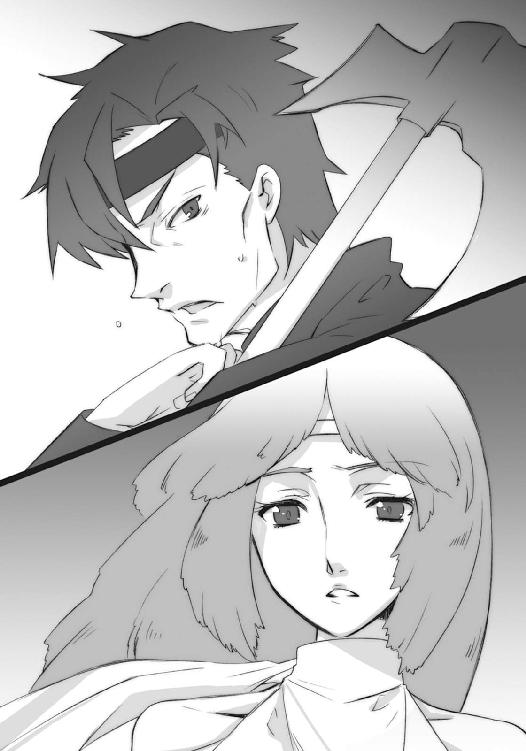
オロバスはゆっくりと振り返り、そこに自分の副官たる〝徒〟、〝朧光の衣〟レライエの姿があること、彼女に率いられた先鋒の一隊数十名がようやく追いつき、陣地内へと雪崩れ込んでいることに気付く。
「遅かったな、レライエ」
「あなたが早すぎるのよ。指揮官自ら先頭を切って飛び込んでいくなんて......将軍の悪い癖ばかり真似するのね」
「この付近への砲撃を跳ね返していた自在師を、早急に片付ける必要があったんだ」
言い訳のように返しつつ、手を振り上げて陣地の周囲を固めさせる指揮官に、副官は呆れ顔で首を振り、溜め息を吐く。
「戦術が妥当なのは認めるけど」
たしかに、先の自在師を討ち取ったことにより、麓の防御には綻びが生じていた。
砲撃は周囲の、フレイムヘイズが立て籠もる陣地に次々と突き刺さり、レライエが率いてきた別の数隊が、一斉に占拠のための切込みをかけている。幾つもある陣地から自在師の籠もる一点を見抜き、敵の対処が追いつく間を与えない速攻でこれを片付けた手並みは、確かに賞賛を受けるべきものではあった。
が、レライエにはレライエの理がある。
「それを指揮官自らが敢行する、ってのはどうなのかしら。死んだ指揮官の命令を、兵士は聞けないのよ？」
そして、オロバスにもオロバスの理がああった。
「指揮官は兵の生と死に応える働きを見せなければならない。ファレグの死を、俺は無駄にしなかった。これからも、俺は兵の生と死に、応え続ける」
最前線で命を張る周囲の兵らは、とりあえず単純に、深い考えなど持たず、乱暴かつ朗らかに、ただ自分たちの身近に在る方の主張へと、
「俺たちの頭に勝利を！」
「俺たちは頭に身命を！」
と一斉に、声を合わせて吼えた。吼えて、山上から飛んでくる炎弾の爆発に頭を伏せた。
レライエは戦場を支配する高揚を前にした、自説の分の悪さに苦笑いして、
「それじゃ、その理屈が、こちらにも通じるかどうか、試してみれば？」
「！」
彼女の手から、掌に収まるほどの魚の鱗が転がり落ちた。
「呼び出しを受けたときには、もうあなたは飛んで行ってしまった後......顔に出ないだけで、怒りの程は相当なもんでしょうけど、私のせいにはしないわよね？」
「......」
底意地の悪い問いかけにオロバスが惑う間に、鱗は鉄色の波紋を地面に帯び、瞬間、人間大の円の中に五芒星、という自在式を、宙に燃え上がらせる。星の中心、普段ならば眠たげに半開きになっている目は今、大きく見開かれていた。
感情の籠もらない低い声が、響いてくる。
「主戦場以外では当面、周囲との協調に努め、逆撃を受ける危険性のある強攻は避けよ、との作戦方針であったはず。何故これを違えるか──〝獰暴の鞍〟」
挨拶や前置きもない、いきなりの糾弾だった。あまりに調子が平坦すぎるため、聞く者は、まるで威圧されているかのような錯覚まで覚えさせられる。
が、オロバスは怯まない。
「違えたつもりはありません、〝渺吏〟デカラビア征討軍総司令官」
無駄と薄々感じつつ、抗弁を試みる。
「敵の前哨陣地を潰し、山の上に追い上げておくことで、包囲部隊の安全を確保するのが、先の戦いの目的で、決して作戦の趣旨に異議を唱えているわけでは」
「その主張は、全面攻勢に向け備えられていた砲兵を使用したことで否定できる」
「それ、は......」
「指揮官が猪突し、副官が回収に向かうが如き戦闘は、無用の混乱しか齎さない」
「......」
言い訳を全否定する文言の最後に、
「戦場における独自の解釈は無用。ただ、与えられた作戦を字義ままに遂行せよ」
止めとなる、新たな命が下された。
本来ならば、戦場をその目で見ていない後方からの指示など、と跳ね付けることもできたはずだったが、この征討軍総司令官たる〝紅世の王〟に限っては、そうではない。
感情の籠もらない声で告げる、
「全て、我が見た上での判断である。作戦の変更も、必要に応じ、我が指示する」
それは紛れもない真実だった。
〝渺吏〟デカラビアは、他に類を見ない特殊な自在法の持ち主である。
名称を『プロビデンス』というそれは、魚身たる彼の鱗を、自らの入出力器官とするものだった。具体的には、この鱗を通して見聞きし、言葉を発し、自在法まで振るうことができた。
ごく短時間・近距離であれば、類似した機能を発揮する自在法は他にも幾つかあったが、彼のそれが特殊とされるのは、まさにそれら時間と効果範囲が、永続的かつ全世界をカバーし得るほどに広大、という点にあった。
作り出せる鱗の数に限りこそあれ、各派遣軍に一枚ずつであれば、十分に行き渡る。一つ所に居ながらにして、全戦域を把握する、まさに総司令官に相応しい力と言えた。無論、把握するだけでなく全体の情勢を総合的に理解し、時々事々に的確な判断を下せる頭脳も兼ね備えていればこその任命であることは言うまでもない。
「以上」
その司令官は、またいきなり自在式を消し、交信を終えた。
喧騒満ちる戦場の中の沈黙が数秒、
「......で、どうするの？」
レライエは例によって意地悪く訊いた。
オロバスは抗議を声色のみで続けるように、不満げに答える。
「どうもこうもない、命令には従う」
そうして陣地の端に行き、レライエが攻撃・占拠に成功した幾つかの陣地に向けて、軽く遠話の自在法で声を放る。
《各員、麓まで一旦退け。援護と行動開始の順序は、こちらで指示する》
そうして、
《退去する際、陣地を周囲の地形ごとブチ砕いて更地にしておけ。修復してもう一度籠もろう、などと思わせんほど、徹底的にだ！》
と付け加えた。
陣地の外を荒れ狂う戦闘騒音に、僅かに忍び笑いが混じる。
オロバスはそれらを無視して、レライエを......というより、その手にある鱗を見た。
反応は、特に見て取れない。
フン、と鼻を鳴らして身を翻し、号令をかける。
「よし、さっさと引き上げにかかるぞ！ 逆襲が成功した、などと道具どもに錯覚させるような無様は晒すな！」
レライエを除く〝徒〟らは大きく、
「応!!」
と一斉に返した。
（これで、しばらくはおとなしくなる）
何処か深く沈んだ水底で、外界宿征討軍総司令官たる〝紅世の王〟、〝渺吏〟デカラビアは、感情の籠もらない目で見つめ、冷徹に巡らす頭で考える。
（僻地よりも、見据えねばならぬ場所が、ある）
「中央公園の被害甚大、なれど『虹』と『緑』はなんとか、対岸に押し返しました！」
「て、敵予備兵力が神宮内苑より出現、このままでは西参道口が破られます！」
「長者橋守備隊は潰走中！ 北部は清水橋交差点までラインを下げるとのことです！」
東京総本部の第三司令室は、戦場の混沌を凝縮したような喧騒に満ちている。どこもかしこも火達磨といった状態で、僅かでも優勢な部署は皆無という惨状だった。
「遊撃部隊は、まだ封絶の中に入ってこないのか!?」
「環状線のラインだけは破られるなよ！ 死守だ、死守!!」
「構わんから角筈橋は落とせ、少しは妨害になる！ 修復されても、何度でもだ!!」
報告する側も指示する側も、張り上げる声は、ほとんど怒号と罵倒である。
東京総本部を巡る戦いは、大規模の軍勢同士が、都市部の極めて狭い地域に密集し、一施設を標的として行われているケースであり、防衛機構による彼我形勢の優劣は、ほとんどない。
これは日本の外界宿が、中核となる本部以外の、同都市内における幾つもの支部が、単なる事務や雑用を処理する出張所でしかない、という事情による。他の重要拠点にもこの傾向はある程度見られるが、日本ほど徹底して戦闘力を持たせていないエリアはない。
つまり、大きな戦いが勃発すると、防衛拠点となり得ない支部は一斉に引き払われ、兵力は本部へと一極集中される体制だった。日本における他の重要拠点、仙台、京都、博多の三都市の本部も同様に、本部一つきりの施設で［仮装舞踏会］の軍勢と当たっている。
これら、後のない篭城戦から戦いを始めるしかない体制は、主に経営面における都合から生じたものであって、実戦への対応を想定したものではない。狭い国土ゆえ、非常時における要塞等の巨大な防衛施設が築かれることもなく、前以ての戦備は、各本部の周辺地域を密かに戦闘用に改修する（この施策も、敵を至近まで呼び込まねばならない、という欠点を解決するものではないが）、各本部の間に援護のための遊撃隊を用意しておく、程度のものだった。
しかしそれでも、守る以上は死力を尽くさねばならない。
東京総本部司令官としてこの地を預かっているフレイムヘイズ、『骸躯の換え手』アーネスト・フリーダーは、司令室の最高所にある椅子に深くかけ、慌しく立ち働く構成員ら越しに大型スクリーンを見つめている。
現在の戦況は、北を四三二号線まで引き、東を公園通で食い止め、南を甲州街道で凌ぎ、西を中央環状線で守る、という状況である。各戦線とも、良い報せは一切入ってこない。
（この期に及んで、まだ予備兵力があるか......本命は南面の西参道口か？）
心中で呟いた、色白にして眉目秀麗、短く刈り込まれた金髪に一メートル九十はあろうかという長身の美丈夫は、少なくとも表には動揺や窮乏の色を見せていない。
ちなみにこの映像は、フレイムヘイズが報告を受ける都度、新たな表示を行う、いわば代用映像である。周囲の設備も、ほとんどは単純なデスクであり、討ち手と〝徒〟の戦いでは無用の長物となる電子機器等は一切存在しない。
司令部員らも、戦闘力より情報の分析力に優れた者を選抜した、特別なチームだった。人間の構成員は、開戦の第一報とともに退去済みである。自在法を使えば、封絶内部でも動けるようにはできるが、人間がフレイムヘイズと〝徒〟の戦闘に巻き込まれて、万が一にも無事でいられるわけはない。危急の折であればこそ、有能かつ貴重な人材を、死なせてはならなかった。人外同士の戦いは、あくまで人外同士で行われるべきなのである。
その人外の司令官として、フリーダーは戦況を呟くことで確認する。
「リベザルめ、相変わらず見た目に似合わない、手堅い戦いをする。無理押しの一つでもあれば、そこだけでも包囲下に誘い込んで叩き潰すんだが」
スクリーンに映る包囲網は、刻一刻と狭まっている。互いに密集し戦っているため、双方とも攻防の自在法が飽和状態で、前線はややの混乱に陥り、面積の割に戦局の進捗は緩くなっていることが、辛うじての救いといえた。
しかしそれでも、過敏な者にとっては、脅威は大小問わず脅威でしかない。
「ね、ねえ、フリーダー君、そろそろここも危ないんじゃ？ 逃げ遅れたら、向こうにはピルソインもいるだろうし、かなり危ないと思うのよ」
フリーダーの胸ポケットに挿されている、洒落た小ぶりの造花などが、それである。造花の名は〝アンブロシア〟。彼と契約し力を与える〝紅世の王〟、〝応化の伎芸〟ブリギッドの意思を表出させる神器である。
彼女の、万事を心配する気の小ささは、フリーダーにとって丁度良い思考の刺激となる。
「そうだね、ブリギッド」
軽く答えて、頭の中で猛烈に思考を回転させる。
彼我の戦力と配置、踏みとどまった場合と退いた場合の差異、どこからどこまで引くか、退いたことで生まれた余裕を新たに何処へ振り向けるか、四方八方を敵に囲まれた状況でそれらをどこまで実現できるか......。
諸々を進行しつつある状況と合わせ、決断を下す。
「よし、第二に引こう。あそこなら、西参道口の指揮も取りやすい」
勢いよく立ち上がり、司令室の一同に張りのある大声で告げる。
「現時点をもって、当第三司令室を放棄、陣地を『水』と『大』まで、戦線を十二社通まで後退させる！ 総員、第二司令室に撤退し、西参道口の防御を密にせよ！ 護衛部隊がいるからといって気を抜くな、もう流れ弾が山ほど飛んでくる距離だぞ！」
一斉の返礼とともにスクリーンの灯が消えた。司令部員は各々、書類を抱えて大わらわに出口へと殺到する。その騒動の中、二人ほどが駆け寄ってきた。
「司令、北辺部や『虹』と『緑』を守る部隊への伝令を出さずともよろしいのですか？」
「なんでしたら、我々が」
北辺部とは公園の北側一帯、『虹』と『緑』とは、堀のように深く沈んだ道路を挟んだ対岸、都庁区画と新宿中央公園との間に架かっている三本の橋の北側二本、『虹の橋』と『緑の橋』の略称である。
現在、これらの地点には、砲撃の後に雪崩れ込もうとする敵主力の侵行を阻止し、至近の地下に位置する第三司令室を守るため、多くのフレイムヘイズらが踏みとどまっている（討ち手や〝徒〟は進撃を地勢に縛られることが殆どないため、橋梁等は防衛拠点としてではなく、地勢的な目安として使われる）。戦線の後退を、誰かが伝えねばならなかった。
双方、密集による混線の度合いが異常で、既に前線では遠話の自在法は役に立たない（封絶による機器停止も合わせ、原始的な伝令が、大規模戦闘で未だ現役なのはそのため）。駆け寄った討ち手らは、暴威飛び交う前線に赴く危険を承知で志願してきたのだった。
が、フリーダーは首を振る。
「君らは先行して、第二を使えるようにしておいてくれ。各部署の手当ては大よそ済んでいるし、私もすぐ帰るつもりだが、必要ならオルメス副指令の指示を仰ぐように」
断られると思っていなかった二人は一瞬、司令の言う意味を図りかね、
「先行......すぐ、帰る？」
「司令、まさかご自身で!?」
次の一瞬で気付いて、大いに慌てた。
フリーダーは笑って、しかし有無を言わせない。
「命令は与えたよ、さあ」
「たた、多分、私たちだから大丈夫よ！」
二人はその硬軟の声に表れる堅固さに抗弁を諦め、一礼して去る。
「はっ！ では、お先に！」
「第二司令室で、お待ちしております！」
取り残され、頭上に遠い戦場騒音だけが、司令室に響いた。
その中、胸の造花をフリーダーは軽く突いて、先とは性質の違う微笑を零す。
「随分と、良い格好をしたじゃないか」
「あ、ああ言わなきゃ、あの子たち逃げないでしょ？ それに、前線の様子をしっかり見とかなきゃ、キチンとした指揮も執りづらいじゃない!?」
かしましくも可愛らしいブリギッドの弁解に、フリーダーはまた笑い、壁に手を着いた。
「じゃあ行こうか、お嬢さん」
「え、ええ！」
言うや、その体が壁へと、水面のように抵抗なく、吸い込まれるように素早く、沈んだ。
第三司令室は、新宿中央公園南側の淀橋給水所、砲撃の威力も届かない地下深くにある。
地中を自在に泳ぐ魚のように、身動き一つせぬまま、フリーダーは司令室から北に五百メートルほどの地上に、立ち姿で浮かび上がった。
「うわっ？」
「し、司令!?」
「フリーダーか、脅かすな！」
そこは、今や戦いもたけなわ......というには苦戦の色合いも濃い、フレイムヘイズの公園北辺防衛陣地。幾十度の攻勢を跳ね返し、砲撃の落着に耐え、傷ついた身を休め、次なる戦いに備え橋の反対側を睨みつける、面積に見合った大部隊が詰めていた。
剣を肩に担ぐ隊長、および傷ついた幾人かの顔見知りらを見回して、また、真っ先に駆け寄ってくるはずの幾人かが欠けていることにも気付いて、しかしフリーダーは冷静に告げる。
「第三司令室を放棄した。陣地を『水』と『大』まで、戦線を十二社通まで下げる。公園の北側はくれてやれ」
この『水』と『大』というのは、先と同じく、都庁区画と新宿中央公園との間に架かる三本の橋の一番南にある『水の橋』、および公園の南北を繋ぐ『公園大橋』の略称である。
誰も反対などしない。
「了解した」
「ま、しようがねえわな」
ここを守っていたのには妥当な理由があった。撤退もそうであれば従う。すぐ後方にあった第三司令部を守る必要がなくなったのなら、戦線を下げるのは納得できる判断だった。
ゆえに彼らが求めるのは、その撤退の段取りである。
「で、このまま引くのか？ 『虹』と『緑』の部隊との兼ね合いもあるが」
「十分ほど前からか、ここいら一帯に砲撃が集中していた。仕掛けてくる気かもしれん」
「あっちの攻勢にうっかり呼吸合わせちまったら、追い討ちで総崩れになるぞ」
フリーダーは、それぞれの意見を聞いて、指示を下す。
「まずは向こうの前線を窺うとしよう。本当に仕掛けてくる気なら、その前に──」
と、
他でもない、その前線で、動きがあった。
正確には、どよめきの広がりを、聞いた。
小山が盛り上がっている公園の北端から、一人の討ち手が走ってくる。
「隊長、やはり来ます！ 前衛の後ろ、マンションの列を挟んだ向こう側で、でっかい連中が隊伍を整えてる！ こりゃ、やる気で──あ、フリーダー司令！」
フリーダーは答礼してから、舌打ちした。
「ちっ、タイミングが良いのか悪いのか......誰か、『虹』と『緑』にも連動した攻撃の予兆がないか、急いで確認の物見を出してくれ！ 後の者は北だ！」
言って駆け出す司令の後に、物見に志願した一人を残して、皆が続く。
その行く先に、封絶の中には在り得ないものが煙った。
それは、薄い菖蒲色の靄。
「あっ!? 皆、息を止めてっ！ 『ダイモーン』よっ!!」
真っ先に叫んだのはブリギッドだった。
フリーダーは、ギョッとなって口元を押さえた。続く討ち手らに、急ぎ指示する。
「靄を吸うな！ ピルソインが前線に出て来ているぞ!!」
戦時平時を問わず忌避される名に、その場に在る全員の顔色が変わった。
「なっ!?」
「くそ、よりにもよってこんな時に！」
「清めの炎を使うぞ！」
「わ、私も！」
慌てふためき、彼らは解毒や消毒の自在法『清めの炎』で全身を覆う。
それらを見届けもせず、フリーダーは再び北へと駆け出した。
前線では案の定、喧騒が沸き起こっている。
「前以て警戒するよう指示しておいたのに、なんてザマだ。構わん、顔を張り飛ばして目覚めさせろ、グズグズしてる間に攻撃が来るぞ！」
叫ぶフリーダーが快足を飛ばす先で、呆然と突っ立ち、ぐるぐると同じところを回り、意味不明の大声を張り上げ、額同士をガンガンぶつけ合い、狂ったように笑い続け、最悪の場合は泡を吹いて倒れ、斬り合いを始め......と異能の超人らは、あり得ない混乱の中に在る。
これぞ、吸い込んだ者を、フレイムヘイズであれば契約する〝王〟ごと、酩酊・錯乱状態へと陥れる〝蠱溺の杯〟ピルソインの自在法『ダイモーン』。油断して侵され、無為に死んでいった討ち手らも多い、世に在る中でも指折りの悪名高さを持つ毒の靄だった。
そして、その悪名は、常からコンビを組んでいる〝紅世の王〟の圧倒的な攻撃力が合わさることで、より大きなものとなっている。
ズン、
と〝紅世の王〟が踏み出し、歩調を一拍開けて配下の〝徒〟らが続いた。
ズズン、
と軍勢が、混乱の極みにあるフレイムヘイズの防衛線へと前進を開始する。
その危機的状況を、対陣する側から見て取ったフリーダーは、
（くそ、やはり南面・西参道口への攻撃は囮、本命はここ......中央公園の突破だったとか）
部下を動揺させないため、声なき声を心中で零す。
答えて心中で、ブリギッドも叫ぶ。
（どどど、どうしよう、フリーダー君!? なんとかしてここを食い止めないと、公園が落とされたら、総本部に取り付かれちゃうよ!!）
取り乱した彼女の声を聞いて、逆にフリーダーは冷静になる自分を感じた。
（ここを僅かな間でも食い止めるしかない）
僅かに道路を隔てるだけの距離を開け、居並ぶ軍勢と対しつつも、思考を整理する。
敵の狙いは当然、ここから中央公園を南に向かって貫き、目と鼻の先にある東京総本部ビルを扼すこと。こちらは『ダイモーン』の撹乱を受けて、万全とは到底言い難い状態にある。しかし、この兵力がまともに動きさえすれば、公園大橋と十二社通のラインで進撃を阻むことができるはず。要するに、今必要で、彼自身にできることは、
（時間稼ぎ、か......司令官がなし崩しに前線参加とは、いい物笑いの種だ）
（で、でもでも、フリーダー君がここに来なきゃ、皆危なかったわ！）
ブリギッドは慌ててフォローし、行為への反対はしない。
まったく有難いパートナーに感謝しつつ、フリーダーは周囲で兵らの目を覚ます作業に取り掛かった討ち手らに叫ぶ。
「半数は撤退の作業を続行、半数は俺の援護を頼む！」
「おお、お願いするわよ!? したんだから!!」
ブリギッドの叫びを引いて、彼は一人、公園北辺の道路で隊伍を揃えた敵軍の真向かい、公園の低い斜面上へと滑り出た。
そんな東京総本部司令官の姿を認めて、東部方面主力軍司令官が、表情の分かり辛い虫の顔で笑いかける。
「よお、随分と久しぶりだ。七、八十年ぶりか、アーネスト......じゃない、フリーダーって呼ぶんだったな。もうおまえが出てくるとは、いよいよ東京総本部の鍋の底も見えたか？」
「ふん、おまえこそ、こいつらの大将だろう？ 大兵力を率いているくせに、まだ先頭で戦う悪い癖が抜けていないと見える。ピルソインも苦労が絶えんだろう」
距離を開けて向き合い、笑い合う。
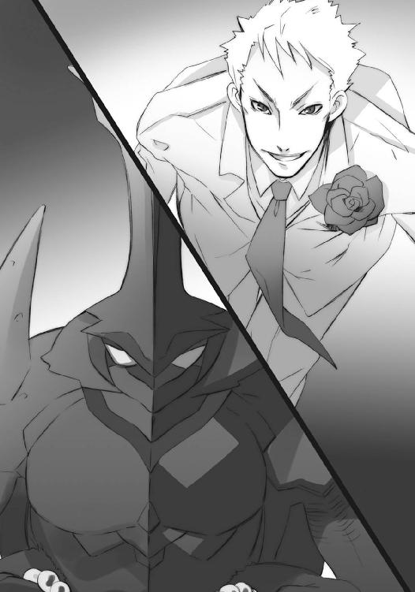
幾度も砲撃を受け、炎で焼かれ、大重量に踏みしめられた戦場で、
リベザルは、居並び猛る強者らと突撃の歩調をぴったり合わせ、
フリーダーは、混乱から立ち直ろうとする討ち手らを背負い、
やがて双方、惹かれあうように自然と踏み出し、駆け出す。
大小の異形人形が、刀槍爪牙も諸々にかざして迫りくる正面に、フリーダーは臆す風もなく走りこみ、すぐ丘の斜面に沈んだ。まるで突然、池にでも飛び込んだかのように。
と、消えた場所から全く外れた、突撃する一隊の端にある〝徒〟らの正面至近、アスファルトの路面から、
「ッ!?」「おおっ？」「なんだ」「いつの間に!?」
また突然、ぬうっ、と立ち塞がるように両手を大きく広げて、フリーダーが現れる。
「踏み潰せ！」「馬鹿が、なんのつもり──」
その留まらない攻撃が触れた瞬間、フリーダーが──正確には、彼の姿を精巧に模した土の人形が──鳶色の猛火と鋭い鉄鋲を撒いて大爆発を起こした。
絶叫の欠片と肉体の一部が弾けて散り、突撃の一隊は大混乱に陥る。
また突撃の反対側、なにも知らない〝徒〟らの正面、やはり至近の路面に、
「なにが起こった」「知るか！」「むっ？」
再びフリーダーの土人形が立ち塞がった。
そうして、爆発。
両端の様子に驚きつつも進む軍勢と、今度はやや距離を開けた前方、斜面の端に、
まるで人による防壁のように、数十からなるフリーダーが立ち塞がる。
「う、わああ!?」「と、止まれえ！」「爆弾だ！」「触れるな、やられるぞ!!」
誰が言ったか命じたか、突撃が一斉に停止した。
ただ一人を除いて。
「全力で脅して、張子で止める、か......相変わらず小細工を!!」
凶暴な笑いを弁柄色の火の粉と吹き上げるリベザルである。
その驀進は止まらず、単身、動かぬ人壁を目指す。その下一組の腕が広げられ、水晶の数珠玉が散らばった。のみならず、周囲に刹那の間だけ滞空して、広範囲に散弾となって飛ぶ。
立ち塞がる土人形は先のように爆発せず、脆くも砕けた。
それらの中に一体だけ、数珠玉を跳ね返したモノがある。
「そこかあ!!」
体勢を低くした巨体の驀進が一息に、三本の角先に標的を捉え、放り上げた。
が、その放り上げられた土人形も中空で破裂する。
「むう!?」
と、一瞬タイミングを遅らせ、
（かかった！）
土人形が立っていた場所の地中から、
（もらったぞ！）
最もリベザルの注意が向かない下方の隙を、
（死ねえーっ!!）
三人の討ち手らが、剣尖を揃えて突きかかった。
これらをリベザルは、バン、と下一組の両掌で挟み潰し、ガン、と砲弾のような膝蹴りで首丸ごとを砕き、ドン、と上の右腕で腹をぶち抜いて即死させる。
「ちっ」
誰に何にか舌打ちしたリベザルは、四つの掌を地面に向けた。応じて、地面にめり込んでいた数十の数珠玉が波紋のように自在式を全周に放ち、その中に反響する異物を表す。
「やりなおし──だ!!」
リベザルは勇躍、まるでアンダースローのように掌を地面へと突き込んで、地面に潜んでいたフリーダーを掻き出し、傍らの土手へと叩きつけた。
「ぐっは!? あ......荒っぽい、な......まったく」
土煙を撒いてめり込んだ彼の全身は衣服から神器の造花まで、まるで鉄のように黒々と深い輝きを見せている。フレイムヘイズ『骸躯の換え手』本来の能力、身体の硬度変換である。
（さて、後方が態勢を整え次第、誤魔化して逃げるぞ......いつまでも器用で知恵も回る大男なんて反則野郎を相手にしてたら、こっちの身が持たん）
（ううう、上手く行けばいいけど）
フリーダーとブリギッドは、しぶとく活路を求め、立ち上がる。
（こちらは、優勢か）
何処か深く沈んだ水底で、外界宿征討軍総司令官たる〝紅世の王〟、〝渺吏〟デカラビアは、感情の籠もらない目で見つめ、冷徹に巡らす頭で考える。
（あとは、あちらだ）
封絶という、時の流れや日の巡りから隔絶された空間の中、
「幸運を願おう、勇戦を謳おう」
自らの自在法『燎原』が野火のように介添えする対岸の丘陵を、西部方面主力軍司令官〝煬煽〟ハボリムは遠く望む。その丘陵を占める巨大な、幾重にも壁を連ねる要塞と、戦野を進みゆく兵らに向けて、その双頭のガスマスクからは、声が滔々と放られていた。
「倒すまで進もう、燃え尽きるまで走ろう」
傍らで、大筒型の〝燐子〟が火弾を撃ち放って、彼のボロマントが叩かれたように強くはためく。が、彼の声は途切れず、調子も変わらない。
「友の火を踏んで生きよう、敵の火を踏んで死のう」
見る先で、要塞内に着弾して炎が巻き上がる。しかし、その威力は地面を抉るばかりで、要塞の胸壁には未だ皹一つ入れることができていない。砲撃の威力が微弱なのではない、胸壁を守る自在法が強大なのである。
数次に渡る攻勢において、中の討ち手は相当数殺しているが、要塞そのものの破壊は初撃の鐘楼のみである。どうやら戦いに不要な部位には、自在法をかけていなかったらしい。
と、傍らの大筒型〝燐子〟が全力を使い切り、砲身を地に落とし、崩れ去った。
「灰も残らぬ我らが身、せめて爪牙の証をば、残そう──遺そう──」
送る声はそのままに、双頭の広い視界で、稜線に並ぶ他の〝燐子〟を見渡す。
開戦から撃ち続けていただけに、どの〝燐子〟も消耗しているのが分かった。
大抵の大筒型〝燐子〟は使い捨てで、一度力を使いきってしまうと、後はモノ自体が劣化して使い物にならなくなる。一人で一体を維持するのが精一杯、という程度の、技巧も力も持たない〝徒〟が作った粗製乱造品なのだから、当然ではある（むしろ、その手の〝燐子〟を各戦線に多数配備できること自体が、［仮装舞踏会］の組織力の強大さを物語っている）。
一方、このハボリムという万事に周到な〝紅世の王〟は、常より戦時に備え、その手の匠を幾十人か、子飼いとして抱えていた。彼らの作る大筒型〝燐子〟は、単に強力であるのみならず、力を与え直すことで、再び元の力を完全回復させることができた。その、いわば虎の子の砲兵部隊は今、後方に温存してある。
無論、ここぞの攻勢に決め手として使うために。
その、予定だったのだが、
（このままでは、埒が開かぬか......塞主はあの昏き淑女だ、寄せ手の攻め疲れに乗じた逆撃など敢行されては、無用に兵を殺すことになる）
全く予定外な、未知の自在法が、彼らの行く手を文字通りに阻んでいた。おかげで、圧倒的な大軍を擁しながら、一番外側の壁すら抜くことができないでいる。
大きな戦を何度も潜り抜けてきたハボリムには、こういう経験が幾度もあった。単純な火力や膂力、運動性能の高さではない、意外な効果を発揮する、新たな自在法の持ち主に一戦局が支配される、という経験が。
（おそらくは［革正団］との戦い以降に作られた道具......昏き淑女と一緒にいた男か）
事態打開のため、彼は自らの出陣を決意し、
「布告官殿、援兵は現在のところ不要だが、これより自身、攻勢に出る。他に急務の手当てがなければ、いま少しここで戦況の推移を、総司令官と共に見守っていて頂きたい」
後ろに佇む、異形の鳥男に言った。
頭部を持たず、両目を胸に、口を腹に開き、両腕が翼、全身に獣毛を生やしている彼、布告官〝翠翔〟ストラスは、僅かに身を伏せて一礼の姿勢を取る。
「了解しました。どうぞ存分のお働きを」
その傍らに浮かび上がったのは、デカラビアの自在式。
「手並みを、見せてもらおう」
この西の主戦場での優劣は、西部方面全域に影響を与える。征討軍総司令官としては、お目付け役のように監視を決め込むのも、ある意味当然だった。
ただし、戦場での細々とした手配には、いちいち注文などつけない。血気に逸って飛び出すオロバスあたりとは、流石に信頼の度合いが違った。もちろん、それを口に出すような性格では全くない。ただ、自在式の中心にある目が、眠たげに半ば閉じられている。それのみが、辛うじて外見に表れる、彼の内心だった。
ハボリムも答えは返さず、ただ右の手を大きく横に振る。
数を減じつつも、断続的に砲撃を加えていた大筒型〝燐子〟たちが、一斉に停止した。
数秒、まるで砲声の余韻が消えるのを待っていたかのように、その場で固まっていたハボリムは、唐突に一陣、楝色の渦に体を包んで、消えた。
そして、渦巻いて、現れる。
「血に換え撒き散らせ──炎を──炎を」
戦野を一面染める自在法『燎原』の最先端部......つまり、両軍が互いの身命を削り合う真っ只中、アンドレイ要塞胸壁の真下である。その案山子にも似た体躯は、移動する前の三倍以上に膨れ上がっている。
「隊ちょ──じゃねえ、司令、来なすったな！」
「は、遅かったじゃないですか！」
「おおっ、ハボリム様！」
戦場で絶えず彼の声を励みに聞いていた兵らが、その登場を喜色で迎えた。
対して、
「出たぞお！ 〝煬煽〟ハボリムだ!!」
「予備隊ぃー、壁上にぃー！」
「自在法だ、盾を作れ、早く！」
高く分厚い胸壁の上、角度も構わず駆け上ってくる〝徒〟らを叩き落としていたフレイムヘイズらは、警戒の声を張り上げる。
ハボリムはガスマスクを上に傾け、両手を広げて周囲を下がらせた。
「喜劇も悲劇も──舞台は一つ」
言うや、その下がらせた周囲に楝色の炎が渦巻いて、彼を飛び上がらせる。
胸壁の上から見ていたフレイムヘイズは、
「来る──」
「来たとも」
「──ぞぅわあ!?」
眼前、鼻も付くほどの距離に、巨大な双頭のガスマスクが現れて驚愕した。慌てて剣を振り上げようとする、
「この、ぉごあっ!?」
その腹部に、今度は掌が叩き込まれる。衝撃のみならず、一撃の周囲に巻いて生じた渦が、彼を遠く、要塞の見張り塔まで吹き飛ばしていた。
胸壁の上に立ったハボリムは、ガスマスクの内から周囲を見渡す。
「来たとも、命を摘みに」
視界の中に、自在師が直接胸壁を強化している様子は認められない。また、攻めかかる際に見た女と男の姿もない。一旦発動させてしまえば、後は力を送る限り作用し続けるタイプの自在法か、と大よその見当を付ける。
この自在法を解除せねば、幾ら攻めかかっても無駄に犠牲が増えるのみであろう。逆に、これを崩す方法を突き止められれば、以降の、まだ幾重にも残っている城壁の攻略を楽に進めることができる。敵が、あの女の魔手が伸びて来る前に、なんとしても手がかりと攻略手段を突き止めておかねばならない。前線が混乱している今であれば、多少の猶予もある。
等々考えるハボリムの周り、
「今だ、登れ登れえ!!」
「なにをしている、ハボリム様を守るんだ！」
彼の後を追って、胸壁を直角に駆け上がってくる兵ら、
「入れるな、押しつつめ！」
「集中砲火!!」
必死に彼らを揉み潰そうとするフレイムヘイズら、双方が噛み合って、一つ場所で異常な密度による力の応酬が行われる......武器と炎と疾走と交錯と、死という形で。
その中心にあるハボリムは、
「響け、応えよ──心臓、鼓動よ」
唱えつつ、足下の胸壁へと、地を這う稲妻と見える火花を走らせた。
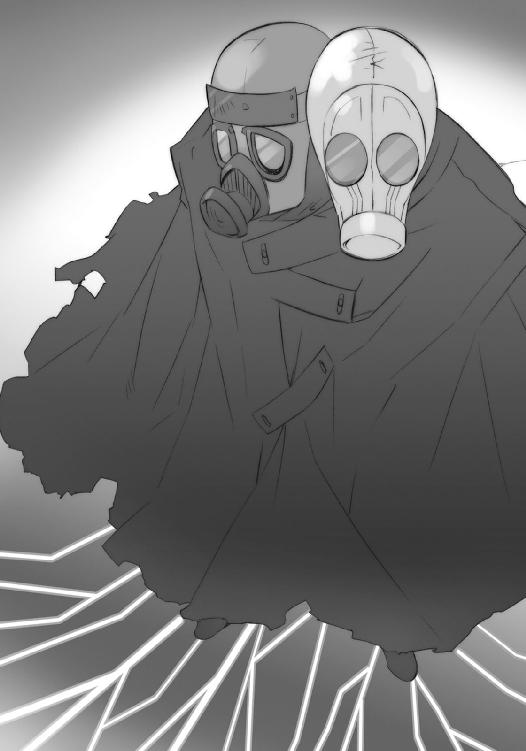
周囲に在る物が思わず衝撃に固まり、あるいは跳び上がる彼方、稲妻を放ったハボリムだけに宿る感覚が、彼らの立ち騒ぐ場所から遠く、胸壁内側の片隅で作動している自在式──まるで壁の落書きのような、適当な図版である──を捉えた。
「心臓、鼓動は──響き、応えた」
また言って、彼は腕をその方角に振り向ける。
再び火花は走り、自在式に至った稲妻の軌跡が、烙印として浮かび上がった。胸壁全体に絡む蔦のように、その焦げ跡は外側からも一目瞭然となっている。
「道へと躍り、ただ駆けよ──印を砕き、壁を抜け」
依然、全軍へと響く声によって、司令官の意図するところが知れ渡った。
烙印の先にある自在式を破壊すれば、胸壁に与えられた防御力が消える。
「あそこだ！」
「ふふ、流石だわ」
「ああ、見える見える！」
俄然、攻め手の意気は上がり、自在式の在る付近へと殺到した。
ハボリムはそちらには構わず、次なる胸壁の捜査をも行おうとする、
「越えて、また前、難路を、さらに」
《宴のたけなわに現れて──》
彼の、周囲の者らの耳に、高雅に奏でられる女の声が届いていた。
《私が駆けつける僅かな間も待たず──》
軽く双頭を巡らせても、その女の姿は、やはりどこにも見えない。
《会場一同を釘付けにする舞踏を終えている──》
先とは逆に、フレイムヘイズらが心気を持ち直し、逆襲に転じる。
《仮面の妖術師さん、あなたと言う人は本当に、憎らしい──》
と、戸惑う〝徒〟の一人、棍棒を持った大猿の足元、
「うがあっ!?」
影が俄かに深まり、グニャリと粘性を持った液体のように伸び上がった。主を弾き飛ばして翳りの塊となったそれは、嘴を鋭く翼を大きく伸ばし、人間大のワタリガラスとなる。
ハボリムは、この自在法『瞑目の夜景』をよく知っていた。
「来たか、昏き淑女。舞踏に誘おうとて、取る手がないでは、如何ともし難い」
お返しとしての、素直な称賛ではない異名に、ワタリガラスはクスリと笑って答える。
《あいにくと私、奥手ですの。強面の殿方の前になんか、とても出られませんわ》
声を遠く、今は見えない要塞内の本営から送っている者こそ、このアンドレイ要塞の塞主にして西部防衛線司令官、フレイムヘイズ『昏亜の御し手』ヒルデガルドである。
《舞踏のお誘いは、直接いらしてから、ね》
言うワタリガラスの背後、フレイムヘイズらの影からも、同様の翳りが伸びつつあった。本来の使い道は遠隔からの自由な影の操作で、彼女は多く、味方を鎧う形で使っている。最初に〝徒〟の影から現れたのは、単なるからかいだった。
ハボリムは形勢を素早く判断する。
彼らの戦争とは、いかに強力な駒を温存して、決戦まで持ち込むか......言い換えると、いかに効率よく消耗させて決戦に臨ませるか、その熾烈な読み合いである。刻一刻と変転してゆく戦局の中での、一手二手先を見据えた読み合い、諸事程度の見切りを付けられる達人にのみ、指揮官たるの資格がある。
そしてハボリムは、言うまでもなく、その資格者だった。
今は激突して無駄に消耗するような時ではない、ヒルダの方もそう判断する、との見切りを付けて、一旦引く判断を下す。後はタイミングを計るのみ──というとき、
「くそっ、いつまでも俺の影で好き勝手やってんじゃねえ！」
大猿の〝徒〟が叫び、操られた自分の影に向かって棍棒を振り下ろした。
《あら、いやだ》
無粋への軽蔑だけを声にして、ワタリガラスは翼を一打ち、素早く広げた。その翼端が、翼全体が、体が、足が、嘴が、一瞬で小さな烏の弾丸へと変じ、周囲へと飛び散った。
大猿のみならず、周囲にあって胸壁を戦場としていた〝徒〟は、全てこの、嘴を刃先とした無数の弾丸に突き刺されて、絶命する。
例外として一人、胸壁の下へと、天を仰いで自由落下していたハボリムは、
「では──身が元への扉を一つ、開けよう」
言って、遠く『燎原』越しに、一つの命令を下した。
応えて、対岸の稜線に並んでいた大筒型〝燐子〟らが、最後の一働きと砲声を釣瓶打ちに張り上げる。この、自壊を伴った轟きに重なって、脅威を怖気として実感させる唸りが、炎弾の形を取って要塞へと着弾した。無論、漫然と撃ち放ったのではない。狙いは、先にハボリムが焼き付けた烙印の向かった先、胸壁を強化する自在法の刻まれていた近辺である。
溢れ出す猛火と荒れ狂う衝撃にも依然、胸壁はびくともしないが、その上に内側に籠もっていたフレイムヘイズらの方は、無事では済まない。まともにこの集中砲火に晒され、粉々に吹き飛んでゆく。まさに一掃と言うべき状況だったが、その吹き飛ばされた者の中には、壁に取り付き、攻撃を加えていた〝徒〟らも、少なからず含まれている。
にもかかわらず、異形の兵らの中には、悪態を吐く者も、泣き喚く者も、誰一人としていない。むしろ、死によって開いた突破口を目前にして歓喜と狂騒は高まり、手薄になった敵陣を一気に制圧せんと次々、壁の内へと飛び込んでいた。
《さすが、見切りも一流ですこと......私たちも、次の壁まで引きますよ》
ヒルダの命令を受け、未だ城壁にあったフレイムヘイズらが撤退する背後、
「獲ったあ!!」
一人の〝徒〟が、標的たる自在法を両断する。
瞬間、壁を構成する物体の全てに、微妙な鳴動と発光が起き、静まった。
次いで、要塞対岸の丘上に戻ったハボリムが、振り上げた手を、下ろす。
「撃て」
自壊したモノらに代わり、新たに引き出されていた虎の子の大筒型〝燐子〟が、遂に火を吹いた。先の斉射に倍する轟きと唸り、炎の輝きが戦場の空を貫き奔り──
一撃、
これまで全ての攻撃を跳ね除けてきた胸壁の中央を、粉々に打ち砕いた。人間より遥かに大きな破片が宙を重く緩く舞い、濛々と巻き上がる粉塵が要塞の前面をカーテンのように覆う。
ハボリムは容赦せず、
「撃て」
次弾の発射を命じた。
さらに〝燐子〟は吼え、胸壁中央部は呆れるほど脆く、倒壊する。
要塞を囲む壁が一つ、消えた。
「今こそ踊り、今こそ笑い──壁を越えよう」
戦場に渡る司令官の声に、兵らは歓呼と喊声で答え、要塞の次なる壁へと挑みかかる。
西部方面軍司令官の面目躍如たる、一連の流れるような戦運びを、
「お見事」
ストラスは感嘆頻りの一言で、
「......」
デカラビアは黙って自在法を消すことで、それぞれ評した。
（こちらも、良い仕儀）
何処か深く沈んだ水底で、外界宿征討軍総司令官たる〝紅世の王〟、〝渺吏〟デカラビアは、感情の籠もらない目で見つめ、冷徹に巡らす頭で考える。
（しかし、奴は、何故来ない......？）
プライベートジェット、というには少し大型の飛行機が、空を行く。
雲海上はあくまで静か、蒼穹は果てすら霞み、空という概念が曖昧になる。
その、見慣れているはずの眺めに、どういうわけかゾフィーは見入らされていた。
機内は、低いエンジン音だけが響いて、静か。
乗客は、彼女ら四人にして八人のフレイムヘイズのみである。
間に書類を積んだ席を挟んで座っているのはザムエル。今は腕組みして、仮眠を取っているのか、目を瞑って物思いに耽っているのか、ピクリとも動かない。
反対の窓側席には、センターヒルが陣取っている。飛行機に乗る、という行為は彼としては非常に珍しい体験らしく、先刻から何度も、嘆声が漏れていた。
フランソワはゾフィーらのすぐ後ろに座っていたが、今は外界宿各戦線からの定時報告を受け取るため、操縦室の方に出向いている。
出発前後のお決まりの会話や、今後についての簡単な打ち合わせが済んでしまうと、誰ともなく口を開かなくなった。会話を弾ませるには、旅の目的があまりに重すぎる、ということもある。ことさら深刻ぶるつもりもないが、だからといって明るく騒ぐ気にもなれない。
ゆえにゾフィーは、ただ窓の外を見つめている。
（......）
なにかを考えようとしても、言葉や思いが形を取らない。もしかしたら、これは逃避行動の一種なのではないか、とまで、ようやく（埒のない）思いを固めた時、
「戦況の続報が来ました」
操縦室エリアの扉を開いて、フランソワが入ってきた。相変わらず、壺を背負っている。
ザムエルもすぐ目を開いて、軽く尋ねる。
「芳しくないようだな」
どうも顔色だけで分かってしまうものらしい。
フランソワは否定せず、ただ書類をザムエルに渡した。
孤児の異名を取る古強者は、軽く何枚かをめくって、自分の予想外なこと、特に考えねばならないことがないか、それだけを注視して、すぐ総司令官に手渡す。
「不利ではありますが、予想の範囲内でもあります。やはり〝千変〟は東西の攻撃には出ていない様子。やはり、我らの立ち向かう高き壁は、三柱臣ということになりそうですな」
それが幕僚長たる彼の所見だった。
頷いて、ゾフィーも簡潔にまとめられた報告書に目を通す。
羅列される状況のほとんどは各戦線での苦戦や不利を示していたが、とりあえず致命的な失敗や既に陥落した、というまでの凶報はなかった。むしろ、危険なのはこれからの彼女らであるに違いない。
ゾフィーは頭の中で作戦の流れを再確認し、
「このまま、引きつけておいてくれれば、なんとか食いつけるでしょうね」
「あとは、君の見立て次第ですぞ？」
その額の星からタケミカヅチも、真剣な声で、壺を背負ったフレイムヘイズに念押しした。
フランソワは、ぐっと細い顔に力を込め、
「ええ、伊達に外界宿に数百年も勤めてませんよ。手に取るように、分かります」
彼にしては珍しく、キッパリと請け負った。
ゾフィーは、もう一度、頷いて、もう一度、窓から外を見やる。
「荒れそうですね」
空のことではない。
誰も、なにも、言わなかった。
断章 一
巨大な道を前に、彼らは立っていた。
「これが『詣道』か......」
呟いたのは、三柱臣の将軍〝千変〟シュドナイである。
何処ともなく仰ぐ彼が、サングラスに映す世界は、あまりに常軌を逸したものだった。
霞んで失せるどこまでも、全てが大地という、天のない世界。
足下には、大地が在る。
頭上にも、大地が在る。
左右にも、大地が在る。
前方にも、大地が在る。
両界の狭間に作られた、彼方に眠る神の本体へと至る道......大きく長い、曲がりくねった管の内面、全てが大地として構成されている世界。
それが『詣道』だった。
ただ、無辺の大地には、建造物の名残らしき、砂に埋もれて朽ちた石積みが微かに見え隠れするのみ。砂漠同然の荒涼とした眺めしか、ここにはなかった。
そんな光景を、しかし驚異の業として捉える〝天壌の劫火〟アラストールが、己の意思を表出させるペンダント〝コキュートス〟から、低い唸り声を零す。
「なんという......これほどの規模の構造物を、両界の狭間に作り上げていただと？」
逆に、踊って跳ねてクルクル回り、背中の怪しげな機器のスイッチを逆関節でオンへと入れる、教授こと〝探耽求究〟ダンタリオンは、感極まって叫んでいた。
「ェエーックセレント！ ェエーッキサイティング！ 素ぅー晴らしいっ規模！ 確ぃーかなっ存在感！ 在ぁーっり得ないことを在らしめる、前代未聞空前絶後奇ぃー妙奇天烈摩訶不思議の、まっ、さっ、にっ！ 神のぉーっ御業!!」
「そうだ。余が業を振るい、作った、余に至る......細く、小さく、脆い道だ」
自分の胸元のペンダント、傍らで加速する大回転、対照的な二人へと自嘲気味に言い、目を細めるのは、［仮装舞踏会］の盟主にして、創造神〝祭礼の蛇〟の代行体たる〝ミステス〟坂井悠二。意識を溶け合わせた神とともに、遠くを望み、傍らに転じた。
応えて、三柱臣の巫女〝頂の座〟ヘカテーが錫杖を前に翳し、告げる。
「このまま、前へ」
「前へもなにも、道は大きな一本きりではないか。儀式を仰々しく執り行うのは構わんが、時と場合を弁えねば、万が一という敵の追撃を助ける遅延行為となってしまう恐れがあろう」
行く先を見やって抗議とも独り言とも付かない声をブツブツと零すのは、警護として伴われた〝壊刃〟サブラクである。
その当然とも思える疑問に答えるのは、三柱臣の参謀〝逆理の裁者〟ベルペオル。
「この『詣道』は、見た通りの単純な道じゃないのさ。距離などという概念さえ無意味な『久遠の陥穽』......そこに至る業苦や艱難、あるいは不可能という状況を『道』という実体へと神の剛力によって組み替え織り成した、仮初のモノなんだよ」
一同は、改めて各々の姿勢で、自分たちを取り巻く光景を見上げる。
「ゆえにこそ、これを踏み越えていく旅路に、意味がある。それに仮初ゆえ、見た目通りに進んでも、決して行程は捗らない。神へと繋がる『旗標』を大きな指針に、神の御業との共振を小さな指針にできる巫女が先導して初めて、我々は確かな道程を行くことができる」
言って彼女は三分の二の目線を流し、己が言葉の裏づけを、同行者の一人に求めた。
教授の後ろに控える〝燐子〟『我学の結晶エクセレント28─カンターテ・ドミノ』が、機械仕掛けの頭をクルリと、背負った機器類へと回しつつ返す。
「はいでございますです、軍師様。現在......この地の『詣道』は実体化率にして五四％。ごくごく初期の作例につき、狭間の状況によっては三九％まで落ち込むようでございますです。現状では、方向さえ確定していれば、所に迷う危険性も少ないかと〜」
己の手並みへの採点を、苦笑として表す悠二は、
「行こう、先は長い」
号令して巫女の導いた方角へと、一歩を踏み出した。
彼に寄り添うヘカテー、左右を固めるシュドナイとベルペオル、互いに顔を背けて高らかに叫び、またブツブツと呟く教授とサブラク、二人の気色を危ぶんで眺めるドミノ、
そして、一行の最後尾。
楽師〝笑謔の聘〟ロフォカレがリュートを爪弾き、
「道よ、道よ！ と求めて問えど、返るは風と、砂の音......」
高らかに歌い上げながら、フラフラと付いてゆく。
２ 侵伐は交う
移動要塞『星黎殿』は、ほんの数日前の騒がしさが嘘のように静まり返っている。
本拠たるこの要塞に集結した［仮装舞踏会］の大軍が続々進発したことで、内包するものを不可知・不可視にする隠蔽の殻『秘匿の聖室』の内に満ちていた、様々の感情を伴う活力、焼け付くような行動を渇望する気配、全てが散じてしまっていた。
まるで雛の孵った後の卵とも思える閑散の風漂うそこには、実際のところ常駐以上に増強された守備隊も配されている。が、それでも、以前の溢れかえるような熱さを知る者には、どうしても空疎さを感じさせられてしまう。
とある高所の塔に幽閉されている一人の少女も、その空疎さに囚われている......近侍の任にある〝徒〟や、実際の任に当たる〝燐子〟らは、そう考えているらしい。
逃げ出そうとする、勝手に城の屋根に登る、己の力を封じる手首の鎖を切ろうとして負傷する等、少女の起こした騒動の直後にはあった、付き添いの〝徒〟が扉の外に控える、という警護態勢の解かれていることが、その証拠だった。
少女の方も、盟主との一別以来、日がな窓際の椅子に座って変わることのない外の風景に目をやるだけで、様々の世話にも無言で応じるのみとなっている。もはや、盟主に遇されること厚い身の上を従容と受け入れ、その帰還を待っているように見受けられた。
しかし、
（どうして私の自在法は、力を発揮できなかった？）
それらの認識は、全くの誤りだった。
（どうして私の自在法は、悠二に通じなかった？）
少女は、窓際から漫然と外の光景を眺めていたのではない。強く睨みつけていた。
星空を映す『秘匿の聖室』の天頂部、巨大な黒い鏡のように浮かぶ『神門』を。
意気消沈して無言だったのではない。一言も漏らさぬように抑えつけていた。
胸の内に吹き荒れる、どこまでも熱い、遂に正体と意味を見極めた激情を。
（力が弱すぎて、届かなかったから？）
少女の全ては一人の少年......この世で最大級の規模を持つ〝徒〟の組織［仮装舞踏会］の推戴する盟主にして創造神と合一した、一つの〝ミステス〟へと向けられている。
（それとも、使い方を知らないから？）
その眼差しの強さは、自身の境遇を諦めた者に宿り得るものでは決してない。ただ、それを一目で理解できたはずの少年は今、遥か遠い地への旅路にあった。
（分からない）
朝に見えない『星黎殿』の朝である今も、少女は端然と立って、食後の身支度を二人の、白い覆面と装束の〝燐子〟に任せている。数日前の事件で破壊されたものと同じ形の手で、日毎に違う衣服──今日のそれは、飾り気の少ない白と赤のドレス──を手早く、丁寧に着せられていた。
（分からない......けど）
静かな挙措の内で、想いは巡る。
（悠二に）
少女は、何らかの経路を辿って組み立てられた結論ではない、他の何もかもを押しのけて、忽然と現れていた感情と欲求に、その心身を占められていたのだった。
本来は理路整然とした思考を好み、また実際そうしてきたはずの彼女は、明らかに不条理で圧倒的に強烈な、この所以の知れない莫大な力に、押し流されていた。
その力の赴く先は、邂逅。
（悠二に......会いたい）
会ってどうすべきなのか、理屈では分かっている。
彼は今や、創造神〝祭礼の蛇〟の意思総体を再現する装置の一部であり、［仮装舞踏会］の盟主である。もし自分がこの境遇から脱出し、会いに行くとすれば、天罰神と契約したフレイムヘイズ『炎髪灼眼の討ち手』として出会うことになる。
戦うしか、ない。
が、会えばどうなるのか、感情は未だ不分明だった。
それでも、
（悠二に、会いたい!!）
想いは確固と激しく、存在している。
別れたその時は、自身の在る場所を、少年が行くことを、冷静に眺めることができていた。
繋いでいた手を離し、後ろ姿を見送り、新しく用意された部屋へと大人しく入ってゆけた。
それが、部屋の中に佇み、『一人になった』という自覚が心へと届いた途端、まるで『一人であること』を拒絶するように、邂逅への想いが全てを押し除け、現れたのだった。
理由は知れず、現象だけが在る。
この巨大なものを押さえつけるための頑丈な鎧である無表情に、
「よろしゅうございます」
と〝燐子〟が声をかけた。
ドレスを着せ、髪を梳かす作業が終わったのだった。
少女は頷くだけで済ませ、早々に退出を求める。
「それでは」
既に慣れた〝燐子〟らも余計なことは言わず、寝巻きと食事のトレーを持って下がった。
扉の閉まる音を背に、今日も全く同じように、窓際に置かれた椅子に座る。
（会えばどうなるか、分からない）
ただじっと、自分の中で荒れ狂うものを抑えつけるために、耐える。
（それでも、会わなきゃいけない）
喜びに似て苦しく、求めていながら恐怖も抱く、不条理な感情。
（会って、確かめなきゃいけない）
不条理ではあっても不可解ではなくなったその感情に、一つの結論を齎す結節点は、邂逅。
そして、少年と真の邂逅を果たすために、備えていなければならないものは、覚悟と資格。
道筋は、既に師の一人、『震威の結い手』ゾフィー・サバリッシュから教わっていた。
（──『自分を誤魔化すのはおしまい。貴女と貴女を一つにする時がきたのですよ』──）
手紙を受け取った時、少女は文面の意味を理解できなかった。
今ならば、不条理な感情の正体とともに、ハッキリと分かる。
会ってどうすべきなのか、その答えを明確に持っている、フレイムヘイズの自分。
会えばどうなるのか、その答えを末だ持つことができていない、それ以外の自分。
少女は今まで、心の内にある自分の存在における、これら二つの齟齬を、深く考えることのないように、深く考えずとも良いように、使い分けていたのである。
フレイムヘイズたるべく育てられてきた自分の、不条理に対する戸惑いと恐れから。
確かに在る齟齬を、見ぬ振りをして誤魔化し、その場に立ち止まっていたのだった。
が、今や、想いは逆転していた。
別れの時に届かなかった意味を突き詰め、届ける方法を探り、少年に再び出会うことで答えを出そう、と少女は希っていたのだった。不条理な感情、胸に掴んだ最強の自在法──
（この、愛で）
だから少女は待っている。
少年の帰還を、ではない。
こんな力を奪われた身、屈従を強いられる形で少年と対峙しても、無意味だった。
フレイムヘイズの力を取り戻した、本当の自分としてでなければ、無意味だった。
（今度こそ、本当の私として）
だから少女は待っている。
今在る状況が動くことを。
（この愛で、自分がどうするのかを確かめる）
止まった時が動くことを。
ただ只管に、熱く求めて。
（そうするためには、変化が要る......ここを壊すだけの、変化が）
少年らが旅立ってから程なく、要塞内にひしめいていた大軍勢が出撃したことは、雰囲気の変化ですぐに分かった。世界規模の大きな戦いが、この球体の外で始まったことに疑いの余地はない。かねてより危機的状況にあったフレイムヘイズ陣営にとっては、紛うことなき窮地であろう。しかし、
（ゾフィー・サバリッシュが、一方的にやられっ放しでいるわけがない）
少女は、外界宿の総司令官に収まった師と、
（ヴィルヘルミナもいる......無策のまま事態の推移を許すとは思えない）
もう一人の師にして家族、なにより偉大なフレイムヘイズへの信頼があった。
そして、なにもかも封じられた自身に、まだ一つ残されている戦場勘が告げている。
（なにかが起きる、きっと）
今、辛うじてでも感情を封じきれているのは、この勘が働いていればこそだった。動くべきときは、戦いの中で必ずやってくる。焦がれはしても、慌てる意味はない。
ゆえに、待つ。
（──「戦いというものは、決して予定通りには行かない。互いの思惑と置かれた状況が複雑に絡み合うことで、有利も不利も容易く変転する......私の場合は、相手にきりきり舞いさせられる役どころばかりでしたけれどね」──）
かつての大戦でフレイムヘイズ兵団の総指揮を執った、ゾフィーの言葉だった。［仮装舞踏会］は圧倒的に有利な状況にあるはずだが、だからといってそれが一方的な推移と結果を齎すとは限らないのだった。
なにより、少女は知っている。
今、外に広がっているだろう戦場には、組織の枢要たる『三柱臣』がいない。
圧倒的な戦闘力を振るう将軍〝千変〟シュドナイも、鬼謀を以て他を御す参謀〝逆理の裁者〟ベルペオルも、神の声を聞き衆を奮い立たせる巫女〝頂の座〟ヘカテーも、いない。
乗じ得る波乱は、この敵の本拠地にも必ずや、来る。
その予見を胸に、焼け付くような衝動を抑え続ける。
（フレイムヘイズと〝徒〟の、戦争......）
ふと、熱く燃える心の中に、ひやりとした初めての心配が過ぎった。
（ヴィルヘルミナもティアマトーも、どこかで戦っているのかな）
討ち手としてではなく、力量を熟知していることも関係ない、家族としての心配だった。
その結果を、少女はすぐに、思わぬ形で見せ付けられることになる。
闇の中に佇むそれは、遠く近くに響く主の心を感じ取っていた。
しかし、心は己に向けられたものではない、茫漠たる望み。
ゆえにそれは、主が己を欲する時を、闇の中で待ち続ける。
移動要塞『星黎殿』の上半分は、巨大な城塞によって占められている。
長年の改修を受け、本来在った形より数倍もの規模、立体的に膨らんだそれは、兵員の収容施設や物資の倉庫、儀式のための部屋に要塞の機能に必要な設備等々が所狭しと詰め込まれた、まさに〝紅世の徒〟最大の組織の本拠地に相応しい威容と言えた。
この中層階、やや外縁部寄りの廊下を、雑用のため一人の〝徒〟が、足早に駆けている。ヘルメットのない、藍色と黒の軍装に身を固めた彼は、
「ん？」
夜目の利く〝徒〟ゆえに不要とされる照明が、区画の奥に点っているのに気付いた。
色は、桃色。
聞こえるのは、耳を澄ますでもない、よく通る女の声、
「外じゃ、派手に戦いがおっ始まってるってのに、こっちは辛気臭えことこの上ねえな。まさかこんな、建モンの中に出ちまうとはよ。殻をぶっ壊す予定が、初っ端から狂っちまった」
「まあ、何もかも順調じゃあ、かえって気持ち悪いだろう。それに、今から大暴れすればいいじゃないか。敵の本営だ、暴れて撹乱した分は、きっと外への助けにもなるよ」
返したのは、間延びした男の声、
さらに、落ち着いた子供の声と、
「ああ、なにせ数百年から、時が経っているのです、出た先の状況を明確に予想するのは、無理というもの。敵兵環視の中に飛び出さなかったマシ、と考えるべきでしょう」
「ふむ、それより、出口からの距離も十分に取った。頭上の尋常ならざる違和感も気になることじゃし、そろそろ外に出る道でも探すとするかの」
最後に、老人の声が答えた。
桃色に照らされている姿は、人間と見える女と子供。
（......？）
軍装の〝徒〟は、眼前の事実が示している意味を、感覚として理解できても、なお本来なすべき行動に移れないでいた。その失態も仕様がない、と弁護できなくもない。常識的に考えて、彼ら［仮装舞踏会］の本拠地たる『星黎殿』の奥深くに、フレイムヘイズが当たり前の顔をして、のうのうと歩いていられるわけがなかったのだから。
（まさか、そんな馬鹿な）
全く以て尤もな困惑を他所に、
「あーあ、大物の意表を突くまでは暴れんのは我慢、って計画までおじゃんかよ」
桃色の灯を消した人差し指を、鋭く振り向けて女が言い、
「場所が場所だ、こうなるのも仕様がないさ」
その右手首にあるブレスレットが、ゆっくりと目を開く。
瞼の隙間から切りつけるように強烈な光芒が一帯に迸り、
「あばよ」
まるで女の投げかけた言葉が形を取ったかのように、軍装の〝徒〟の直上に瞳の形を模した紋章が輝き、一瞬で中央に収縮、大爆発を起こした。石造りの廊下が大きく撓んで弾け、ついでと〝徒〟を爆炎爆圧で粉々に砕き去る。
その撒き散らされた炎の中、ブレスレット型神器〝クルワッハ〟に意思を表出する〝紅世の王〟、〝糜砕の裂眥〟バラルが溜め息を漏らした。
「無謀極まる奪還作戦、果たして、どこまで上手くやれるだろうねえ」
女、『輝爍の撒き手』レベッカ・リードは、危惧など吹き飛ばすように呵呵大笑する。
「無謀上等！ さーあ、派手におっ始めようぜ、ジジイ!!」
「ああ、そうですね。まずは城の外を目指すとしましょう」
対して、桃色の炎渦巻く中でも平静に答える子供、『儀装の駆り手』カムシンも、麦藁帽子の下から破孔を見上げ、自身の戦闘準備を始める。まずは短く一言、
「儀装」
「カデシュの血印、配置」
その右手に絡む飾り紐型の神器〝サービア〟から、彼と契約し力を与える〝紅世の王〟、〝不抜の尖嶺〟ベヘモットが応じた。
ボボボッ、と未だ燃えている廊下の各所に、褐色の自在式が数十、一斉に燃え上がる。
「起動」
さらに言うカムシンの体が、同色の炎からなる自在法『カデシュの心室』に包まれた。その中に浮き上がり、前へと手に在る鉄棒を突き出す。
「自在式、カデシュの血脈を形成」
また応じるベヘモットの声とともに、周囲数十の自在式から暴れ回るワイヤーとも見える炎が無数、噴出した。ゆらゆらと揺れながらも、強烈なジェット噴射のような衝撃の在ることを感じさせる、これら炎によって、廊下を形作る石のすべてが細かく鈍く震える。
圧力による崩壊の寸前、
「展開」
カムシンが告げた。暴れていた数十もの炎のワイヤーが、次々とその端を繋げ、互いに縒り合わされてゆく。どんどん太く束ねられ、繋がり縒り合わさっていったワイヤーは、
「自在式、カデシュの血脈に同調」
ベヘモットの声に引かれ、次々と『カデシュの心室』に結合した。
瞬間、
「おわっ、来やがった!?」
「はい、逃げた逃げた」
レベッカとバラルが慌てて距離を取る背後で、周囲の瓦礫から無傷の石壁まで、廊下が一挙に巻き上がってゆく。猛然と立ち昇る轟音と粉塵の彼方、
「ひゅう──っ！」
「さすが、一気に外だね」
二人が再び、今度は感嘆の声を上げる先に、影が聳えていた。
内壁に星空を映す隠蔽の殻『秘匿の聖室』を背に、傲然と立ちあがるモノ。
あまりに圧倒的なそれを前にして、しかしレベッカは相棒へと凶暴に笑いかけた。
「へっ、オレたちも負けてらんねえな！」
「そうだね、せいぜい派手に、壊して回るとしよう」
再びブレスレットの目が開き、周囲一帯に次々、瞳を点し、また爆発を生む。
慌てて駆け付ける〝徒〟たちが目を剥いて驚愕し、次々と吹き飛んでいった。
闇の中に佇むそれは、鈍い揺れを、置かれた身に感じた。
しかし、どんな騒ぎが起きようと、それは関心を払わない。
重要なのは、この騒ぎによって主がどう動くか、それのみだった。
盟主、および三柱臣が不在の今、『星黎殿』は要塞司令官〝嵐蹄〟フェコルーを最上位者として運営されている。元来がこの防衛を司る強大な〝紅世の王〟であり、また実質組織を統べている参謀ベルペオルの副官でもあったため、構成員からもこの地位に彼が在ることは当然と受け取られていた。
盟主らを呑み込んだ『神門』をフレイムヘイズらの目から隠し、また万が一、億が一の襲撃を受けた場合は守護する使命と合わせて、彼は実戦部隊を統括し全戦域を指揮する外界宿征討軍総司令官〝渺吏〟デカラビアと、唯一肩を並べる存在と言える。
その、バサバサの頭髪から尖った角を伸ばし、背に蝙蝠の翼を畳み、鋭い爪を備え、鉤付きの尻尾を伸ばし、鋲を打った太いベルトに湾曲刀を提げて、スーツを纏った貧相な中年男、という奇妙な姿の彼は、
「うおわっ!?」
かつて感じたことのない、要塞全体に走る鈍い揺れに、情けない声を上げてよろめいた。
要塞の下半分、組織の重要施設が多く設けられている岩塊部の中心に位置する司令室『祀竃閣』。この、床を広い段状に落ち窪ませてゆく広大なドーム空間には、現在フェコルー一人が詰めていた。部屋には、枢要に在る者以外の立ち入りが禁じられており、要塞守備隊の指揮所も、また別に存在するためである。
「なな、何事です!?」
声を受けて眼前、竈型の宝具『ゲーヒンノム』を満たすどす黒い灰が素早く渦巻き、要塞の細かい全体像となる。同時に、要塞守備兵から自在法による映像が送られてきた。
《た、大変です!!》
「──なっ!?」
灰によるミニチュア、送られてきた映像、二つが示すモノを目に入れたフェコルーは戸惑いを突き抜け、驚愕に声を失った。
映像を送る〝徒〟の絶叫が『祀竃閣』に響く。
《ぎ、『儀装の駆り手』が、あの壊し屋が！》
要塞の一郭、濛々と上がる粉塵の中に、縮尺を誤ったかのような人型が立ち上がっていた。
《我らが『星黎殿』に取り付いています!!》
それは、城塞部を壊し、外へと巨躯を引きずり出しつつある。身動きの度に辺りの構造物は倒壊して、大きすぎる身動きの幅を広げてゆく。やがて巨人は、悠然と傲然と伸び上がって、音とも声とも付かない咆哮を上げた。
（な、なんという）
信じられない情景に、フェコルーは震え上がる。
一度たりと敵の侵入を許したことのない［仮装舞踏会］の本拠地、不可視不可知の移動要塞は今、最悪の形で前例を破られつつあった。しかも、この最悪はまだ底ではない。
「おお!?」
映像が桃色の閃光で埋まり、一帯が爆炎に包まれる。巨人の全身から吹き上がっているものとは違う、フェコルーもよく知る色の、爆炎だった。
（よりにもよって、この二人──いけない!!）
フェコルーは僅かに迷ってから、即座に頭を切り替える。
「総員迎撃!! プルソン、ウアルはいますか!?」
命を下してから、彼は自身の役割を果たすべく、両手を指揮者のように広げた。
（──正確に精密に、『神門』と『秘匿の聖室』を傷付けない形に織り成さねば──）
その意に応じて、『星黎殿』を包む泡状の殻、内包したものを隠蔽する『秘匿の聖室』、および天頂に浮かぶ『神門』のギリギリ内側に、臙脂色の粒子からなる風が吹き始める。風はすぐに暴風、さらには大嵐となって、殻の内壁に映る夜空を完全に覆い隠した。
その寸暇の後、
ドガアアアアアアン!!
と、巨大な褐色の炎が、その表面で炸裂した。
（あ、危ない）
フェコルーはへたり込みそうな安堵を感じ、しかし自在法の制御を怠らない。
臙脂色に吹き荒れる嵐『マグネシア』は、見た目の数十、数百倍はあろうかという重さを持つ、微細な粒子からなる奔流である。『星黎殿』の守護者たる〝嵐蹄〟フェコルー、鉄壁の防御力を誇る（彼自身は誇ったことはないが）自在法だった。
今も、決して威力の低くはない......どころか、人間の町ならば一区画をも消し飛ばしていただろう、巨人の放った岩の砲弾をまともに受けて、びくともしていない。続いて桃色の爆発が立て続けに起きるが、やはり臙脂色の嵐には一切の乱れは見られなかった。
（な、なんとか間に合ったようですね）
ようやくの吐息が、口から漏れる。
と、そこに鋭いものと野太いもの、二種類の男の声が。
《フェコルー様！》
《どうぞ、ご命令を》
フェコルーは怯えた早口ながら、的確に指示を下してゆく。
「プルソン、状況は理解していますね？ 私はここから『マグネシア』を維持します。あなたは迎撃の指揮を前線で取ってください。防衛機構も全て使って構いません」
言う間にも、『マグネシア』へと立て続けの攻撃が加えられていたが、鉄壁の自在法は主の声や態度とは裏腹に、頑とこれを阻んでいた。
「ウアルは、彼らの侵入経路、および他の侵入者について、急ぎ探索をお願いします。あと、姫には安全な下部に非難して頂くよう、世話役の〝徒〟に伝達を」
《了解！》
《お任せあれ》
守備隊として残された〝紅世の王〟らは、各々謹直な調子で請け負った。
フェコルーは『マグネシア』を操りながら、ようやく迎撃の戦いを始めた守備隊を、ミニチュアと映像越しに眺めやる。
（それにしても、攻撃を開始するまで、潜入に気付かせないとは──）
思いを妨害するように、ズズン、と再び部屋が鈍く震えた。どうやら『マグネシア』の突破を諦め、要塞内部の破壊に移行したらしい。それはそれで恐ろしくはあるが......。
（なんという鮮やかな手際、やはり侮れない）
フェコルーには、どうやって彼らが要塞内へと侵入し得たのかは分からなかったが、その狙いが『神門』と『秘匿の聖室』であることについては、容易に察しがついた。
即座に『神門』の正体を看破されるとも思えないが、これ見よがしに宙に浮かんでいる違和感の塊を、怪しいと思わないフレイムヘイズはいないだろう。創造神〝祭礼の蛇〟を恐れて止まぬ彼らは、その御業と認めれば遮二無二、破壊へと走るに違いなかった。
また『秘匿の聖室』も、破壊されてしまえば、『神門』の持つ違和感が、闇夜に喇叭を鳴らすように広く世に知られてしまうことから、同等に重要と言える。宙に固定された『神門』を内に隠匿するため、動くに動けない『星黎殿』の位置秘匿は、大命第二段階の大前提、決して知られてはならない。
しかし、フレイムヘイズの特務部隊──とフェコルーは考えた──が潜入してきた、という事実が示すものは、その露見に他ならなかった。侵入と同時に『神門』や『秘匿の聖室』に攻撃を加えなかったのは、外部に在る要塞直衛軍の動きを、現在のような状況で封じるためか。いずれにせよ、襲撃自体をより超えて、事態は深刻なものと判断せざるを得なかった。
フェコルーは、懐から取り出した鱗に向かって語りかける。
「聞こえますか、〝渺吏〟デカラビア外界宿征討軍総司令官」
《聞いて、見ている》
宙に自在式が浮かび上がり、感情の篭もらない声が返ってきた。デカラビアは、［仮装舞踏会］全軍を統括しつつ、自らは『星黎殿』を守る直衛軍を率いている。つまりは、敵潜入という失態に対して、最も大きな責任を負う身だった。
その彼に、フェコルーは尋ねる。
「彼らが、どのようにして直衛軍の囲いを掻い潜ったのか、分かりますか？」
相手の手抜かりを責め立て、無用の混乱と不和を生むような愚は犯さない。ただ単純に、状況についての確認と意見を求めただけである。
これは、総司令官を務める〝紅世の王〟の手腕を信用しており、彼が無理だったのなら誰にも防ぐことはできない、むしろその警戒網を掻い潜った敵の技量をこそ評価すべき、との判断を下していたことによる。情けない外見とは裏腹に、ベルペオルが後事を託すだけの度量と賢明さを、彼は確かに備えていたのだった。
一方のデカラビアは、常と全く変わらない様子で答える。
《警戒網には一切、綻びはない。ゆえに侵入は不可解、というよりない》
「敵部隊の接近も？」
《ない》
明確に、総司令官は言ってのけた。
《可能性としては、我らが勢力圏内への威力偵察に出向いた小勢が、特殊な自在法でも使い、警戒網をすり抜けて偶然、『星黎殿』に辿り着いた、というところだが》
今度は僅か、言葉に揺らぎが生まれる。
《それとて、可能性は極小。各種通信の傍受、遠話の監視なども行っているが、連絡の気配は感じられぬ。少なくとも、外部と連携を取っている節はない》
「特務部隊による周到な潜入工作ではなく、偶発的な遭遇の結果からなる特攻であると？ 名にし負う『儀装の駆り手』に『輝爍の撒き手』ら、敵陣営にとっては切り札とも言うべき両名が、そのように軽率かつ破滅的な行為を犯すものでしょうか？」
フェコルーとしては、俄かに信じることができなかった。
たしかに、可能性としてはデカラビアの指摘したものしか在り得ないはず。
が、今も要塞の各所へと好き放題に礫を撃ち放っている『儀装の駆り手』、目を焼く爆発を起こしている『輝爍の撒き手』、いずれも荒っぽさは戦闘方式のみで、当人らの実態は百戦錬磨の強者である。不用意かつ無謀な戦いを挑んでくるとは、到底思えない。
彼らの起こしている断続的な揺れと、他の画像として送られてくる部下らの狼狽ぶりを見ても、なお不審は深まるばかりだった。
デカラビアも同感らしいが、彼はくどくどと分からないことを語るほど口数が多くない。それよりも、と全体の作戦方針について新たな一項を加え、改めて説明をする。
《道具どもの東西主要拠点を壊滅させ、組織的反攻の余力を根絶し次第、全軍を勢力圏内へと引き戻す。それまでおよそ数日......この想定外の侵入者に関する手立てとしては、我ら要塞外の直衛軍が停泊地一帯を改めて捜索することとする》
「了解しました。情勢の変化については、逐次ご確認ください。なにか気付かれた点があれば、ご指示願います」
《了解した。以上》
短く言って、デカラビアの自在式は消えた。
各戦線を監視しつつ、こちらに意識を振り向けるほどの余裕は、流石の彼にもないはずである。フェコルーは、可能な限りの対処を自分の側で果たしておかねば、と決意を固め、当面はただ一心に、『神門』と『秘匿の聖室』を守るため『マグネシア』を繰る。
（ともあれ、我々の為すべきは一つしかない......盟主のご帰還まで、『神門』と『秘匿の聖室』を、この要塞を守り抜くのみ）
覚悟の表情を、画面を埋める桃色の爆炎が染め上げた。
闇の中に佇んでいたそれは、主の内に強い力が生まれるのを感じ取った。
しかし、やはりまだ、己が望まれているわけではない。
それは静かに、闇の中で待ち続ける。
少女、『炎髪灼眼の討ち手』シャナは、笑うことなく真剣に、窓の外を見つめていた。
先刻まで星空を映していた『秘匿の聖室』は、今や粒子の嵐『マグネシア』によって覆い隠されている。その表面で溢れかえったのは、見覚えのある色をした、炎。
「──来た」
何処からか響いてくる、明らかな戦いの騒音に、少女は奮い立つ。
波乱の予見は的中した。
というより、ようやく実現した。
敵の本拠地で、いきなり戦闘が始まった。
余計な前触れもないまま、激しく、混乱を伴って。
（これが、そうか）
論理的な予想など軽く吹き飛す、猛々しい事態の勃発は、まさしく少女の望んだ形だった。
今という時から自分を引き剥がす力の奔流がやはり現れたことに、驚きよりも高揚した。
物事の潮目が変転するうねりの中に自分が立っていることを、恐れるよりも歓喜した。
それら感情の赴くまま走り出そうとする心身の衝動を、必死に内側へと閉じ込める。
と、ドアがノックされ、
「シャナ様」
世話役の〝燐子〟二人が現れた。
（これこそが、待っていた変化だ）
思ってなお、待つ。今の身にできる最大限の準備は、既にスカートの中にある。
相手が〝燐子〟であっても、力を封じられた身ではなにができるわけもない。
不用意に動いて取り押さえられては、いざというときの行動範囲が狭まる。
今は、おとなしく言うことを聞き、より大きな変化に備えるべきである。
それら、胸の底から突き上げる感情とは逆の、頭から下りてくる理性は、あくまで平静だった。あるいは照星、または引き金として、機会をしっかりと計り、狙い続けている。秘めたる感情を最大限の威力で爆発させるために。
部屋に現れた〝燐子〟が、手を扉の外へと差し出し、退出を促す。
「少々、城内が騒がしくなっております。安全な下部へ避難されるように、との命が下りました。どうぞ、ご同行願います」
返答はせず、シャナはただ無言で立ち上がり、後に続く意思を表明した。
二人の〝燐子〟は左右前方に立ち、先導として歩き始める。背にした部屋の大窓は、得体の知れない轟音、立て続けに起きる爆発音、多くの〝徒〟らの叫びや動きからなるどよめきに、分厚いガラスをビリビリと震わせていた。
既に、今立つ場所も戦場の一部であるという実感が、力を封じられたままであるという自らの境遇への焦りに転化する。閉じ込めていた力が、実際に動き始めたせいか、不意に勢いを増して、内側から全身を行動に駆り立てようとする。
容易く傾いてゆく感情を、シャナは懸命に抑え、ひたすら従順に待ち続ける。
廊下は幾度かの案内を受けたときと同じ、全くの無人で、他の〝徒〟の姿は見えなかった。元々が貴賓用の特別な部屋のある区画だったためだろう、一般の兵士程度が、戦闘中にうろつくようなこともない。ただ〝燐子〟たちと、シャナだけが、廊下を歩いていた。
（このまま警護の厳重な区画に連れて行かれたら、機会どころではなくなってしまう）
焦りが、思考の力を借りて、より勢いを増してゆく。もちろん、ここで破れかぶれに襲い掛かったところで敵うわけもない。その確実な予想だけが、辛うじて実行を思い止まらせていた。
シャナは虎視眈々と狙って、しかし決定的な機会の到来もないまま、歩かされてゆく。
（来い）
ゆえに願って、
（今が、そのときだ）
只管に求めて、
（もう、この今しか、時はない）
それでも動かない状況に痺れを切らし、
（なんでもいい......来い、今こそ!!）
叫びが口を突いて出そうになる──その目に耳に、
「「はっ？」」
二人の〝燐子〟が声を揃え、玩具のように首を真横へと振り向ける光景が、届く。
シャナは、空を貫く物がある──というより、来ると知り、咄嗟に床へと身を投げ出した。
（──いけな、い!!）
瞬間、
三人の歩いていた廊下一帯が、褐色の炎を纏った岩塊の直撃を受けて爆発、崩壊した。
闇の中に佇むそれは、主の身に危機を感じ取った。
しかし、それにとって、危機は恐れるものではなかった。
危機こそが、主と己を繋ぎ合わせる、最大の力だったからである。
フレイムヘイズ三人による潜入工作、および奪還作戦を主導した『万条の仕手』ヴィルヘルミナ・カルメルは単身、『星黎殿』の奥へと走っていた。
その身には真っ白なコート、あるいはジャンプスーツと見える衣を纏っている。これは気配を隠す、彼女特有の自在法だった。やや力を多めに消耗するが、元よりカムシンとレベッカが大暴れをしている間に、この自在法を使って敵地深くへと潜入し、『炎髪灼眼の討ち手』を奪還するのが作戦の主眼である。
無人の、静まり返った廊下を見て、ヴィルヘルミナは声なき声で呟き、
（突入から各々の行動に出るまでの初期段階は──）
（上首尾）
同じくティアマトーによる声なき声が、後を継ぐ。
この『炎髪灼眼の討ち手』奪還作戦の初動が、完全な奇襲で始まることは、決行前から分かりきっていた。なんとなれば、彼女ら三人にして六人、一騎当千のフレイムヘイズらは、敵要塞『星黎殿』の城内より侵入していたからである。相手が誰であれ、予想など絶対に不可能なこの方法は、一人の〝紅世の王〟が残した、一つの注意から成り立っていた。
「俺の『天道宮』と、奴らの『星黎殿』は、迂闊に近づけちゃいけねえ」
そう言った者の名は、〝髄の楼閣〟ガヴィダ。
他でもない、数百年の昔、複数の人間らとともに、これら一対の、この世で最大級の宝具を建造した当人である。
彼は当時、芸術を生み出す人間への敬意を抱き、その人間を喰らう自らの在り様を忌み、己が〝徒〟としての全活動を放棄する、いわば隠居を試みた。協力関係にあった［仮装舞踏会］には離脱の代償として『星黎殿』を明け渡し、自らは『天道宮』に据えた銀の水盤『カイナ』に座して、何処へともなく消えている。
その後、『星黎殿』は［仮装舞踏会］の本拠地として時を刻み、『天道宮』はとある大きな戦いの後、ガヴィダからアラストールとヴィルヘルミナ、もう一人の〝紅世の王〟ら三人へと主を代え、新たな『炎髪灼眼の討ち手』を育て上げる揺り籠となった。
ガヴィダは、自身命を落とすこととなったその戦いの直前、先の言葉に続いて、次のように言い残している。
「この二つの宝具は本来、日常を暮らす『陽光の宮廷』と敵を迎え撃つ『星空の神殿』を合わせて一つの物として作ってある。つまりだな、こいつらを一定の距離まで近づけると、一つの宝具としての修復を始めちまうんだよ」
彼がそのとき、六本ある腕の半分で指し示したものは、城内で唯一時を報せる大時計（隠居の後に据え付けた、当時最新式の発条式である）の傍らにある、途中で崩れた橋と、その先端に埋め込まれた小さな黒い石。
「ほれ。今は呼び合う力も、通路の発動と修復も、この礎石で封じてあるが、それでも近付きすぎると、こいつの効力を超えて、機能が発揮される......要するに、〝徒〟の大組織の本拠地と、自在に行き来できる通路が繋がっちまうってことさ」
つまり、かつては危険な部位として在ったこの橋を、ヴィルヘルミナらは突破口として使ったのだった。水没していた『天道宮』を引き上げ、とある場所へと移動させる傍ら、礎石を取り除けてこの修復を待ち、完成とともに突入したのである。
陽光降り注ぐ『天道宮』の一郭に口を開ける暗がり、と見える通路。
そこを用心しつつ抜けた先、遠離の隔たりも数多の敵軍も飛び越える、たった一歩として踏み込んだ『星黎殿』は──驚いたことに橋の前後左右に迫る壁と低い天井で囲われた、部屋となっていた。潰された庭の名残らしい、微かに地面が残る袂の正面に、いつから閉じられたままなのか分からない、古い木の扉があった。［仮装舞踏会］はこの秘密の通路を、建造の中途で放棄された、しかし自動修復するため取り壊しもできない異物として扱っていた。というより、扱わず放置しているらしかった。
フレイムヘイズらは、ここから二人と一人に分かれ、所定の計画に従い、行動を開始した。
ほんの十分ほど前のことである。
（後は、探索あるのみ）
（細心注意）
声なき声を交わすヴィルヘルミナは、疾走する薄暗い廊下を、視界の狭いスリットからしか覗くことができない。パートナーの言うとおり、慎重に進むべきだった。
（これより先、無事に出会えるかどうかは、互いの運任せでありますな）
（丁半博打）
二人にして一人の『万条の仕手』が、要塞の下半分を占める岩塊部へと潜り込んだのは、上半分の城塞部で、残る四人にして二人が囮になっているから、それだけではない。
おそらくは岩塊部こそが重要施設であり、少女を監禁しておく牢屋でもあるだろう、
また、仮に別の場所に居たとして、戦闘が始まれば、ここに避難させてくるだろう、
ここにいる〝徒〟は組織の重要人物であり、少女の近辺に侍っている可能性が高い、
等々の推測にも拠っていた。
結果として、それらは大よそ当たっていて、現実としては外れている。少女は、この重要施設に移される途中、カムシンによる流れ弾の爆発に巻き込まれていたのだった。
無論、神ならぬ身のヴィルヘルミナには、それを知る由もない。彼女は、今見える範囲で最良の行動を取っている。密かに重要施設を走り、そこに在る物を用心深く探り、
「！」
眼前に現れる敵を倒す。
「──っむ!?」
廊下の曲がり端から現れた、丸々太った鳥のような〝徒〟が、廊下を突き進んでくる大柄な白装束に気付き、慌てて腰間の剣に手を伸ばした。
が、その手は届く寸前、白装束の指し伸ばしたリボンによって捉えられ、勢いだけは殺されず、むしろ加速させられ、あらぬ方向へと誘導される。踏ん張ろうとした足まで、同時にバランスを崩され、入れた力の分だけ自らを跳び上がらせていた。
ドガン！
と、まるで瞬時に紐を巻かれた独楽が吹っ飛ぶように、鳥の〝徒〟は廊下の壁を砕いてめり込んだ。二、三度だけ大きく痙攣して、動かなくなる。フレイムヘイズ『万条の仕手』の冴え渡る技巧は、並の〝徒〟程度では回避どころか抵抗すら許されない。
ようやく出会い仕留めた敵が散らす火の粉を潜り、ヴィルヘルミナはその曲がってきた角へと駆け込んでゆく。
（重要施設とはいえ、出会う全てが強敵、というわけではないようでありますな）
（即時粉砕）
ちなみに、フレイムヘイズと〝徒〟の戦いでは、捕虜を取って自白させるという形式はほとんど取られることがない。これは情報収集を軽視しているわけではなく（むしろ互いに、可能な範囲で気を配っていると言える）、もっと簡単な理由による。
つまり、立場として相容れず、組成的にも異なる存在同士である以上、捕らえられた後に生きて帰される可能性は極端に低い、という事実があるためだった。命が惜しかろうと惜しくなかろうと、所詮は討滅する者と跋扈する者、どうせ最後には殺される。
打算や保身を以てする通謀の類も、実行に当たっては互いの反発心が大きく、人間であれば代償によって築かれるはずの利害関係も、双方、人間社会での力があり過ぎて、これも成立し難い。なにより、どちらも統一した見解や方針に従って動いていないのが問題だった。仮に誰かが許し、また謀っても、他の誰かがそれを遵守するとは限らないのである。
ゆえに、協力や譲歩が行われるのは、双方が、相応の理由や状況によって強いられるか、特殊な事情から見逃されるか、という場合に限られる。これは、一時的な事例としてはそれなりに多く、長期的な事例としては非常に稀である。
ヴィルヘルミナ自身は、長期的なそれとして、かつて敵だった〝紅世の王〟との協力関係の元、二代目の『炎髪灼眼の討ち手』を育て上げた実績を持っている。が、彼女自身、この行為がどれだけ例外的なものであったのかを熟知してもいた。
二人にして一人の『万条の仕手』は、ゆえに当然のこととして、行き逢う敵を倒し、ただ自らの足と目と耳だけを頼りに、敵要塞の深層へと進んでゆく。
その底知れぬ深さを前に、湧き上がる衝動のまま叫びたい、と欲して、
「──！」
ヴィルヘルミナ・カルメルは、今さら少女の名前を呼ぶことに躊躇した自分を感じた。猛烈な自己嫌悪とやり場のない怒り、二つの思いを抱えて、彼女は走ってゆく。
闇の中に佇むそれは、主の意識が途切れていることを知った。
しかし、危機に応じて動くのではない、欲し求められて動くそれは、待つ。
一度定めた主が、己を明確に意識し、呼びかける時を。
戦場は、城塞部の中腹から、ジワジワと上に移動しつつある。
その中心、地響きを伴って歩行する瓦礫の巨人と並行して、
「はあーっ、はあ!!」
建造物の屋根を快捷に飛び跳ねるレベッカが笑った。
応えて、彼女の右腕に在るブレスレットから桃色の光条が八方に走る。命中した屋根に壁に床に次々と瞳の紋章が点り、瞬時に収束、爆砕された。炎が盛大に巻き上がり、石が粉々に割れ弾け、〝徒〟が千切れて消滅する。
「どうしたどうした、シュドナイの野郎は、『三柱臣』様のお出ましはまだかあ!? それとも大事なお家を放って逃げ出したってか？」
自ら築いた、燃え上がる瓦礫の山を踏みしだいて、『輝爍の撒き手』は大いに挑発した。
その背後では、炎で繋いだ瓦礫の鞭を振るう巨人が、超重を揺るがして一歩一歩、要塞を上へと登っている。と、足を止め、鞭を背後へと溜める体勢を取った。先刻から何十度目か、大きさゆえ緩慢に見える動作が、身の毛もよだつ質量感を伴って解放される。
鞭の先端にある瓦礫が、繋がれていた炎から解き放たれ、礫として飛んだ。
今度は軌道が違う。
炎を纏った流星とも見える礫は噴射炎を引いて加速、これまでのような放物線を描かず、真っ直ぐ天へと......『秘匿の聖室』の内側を守って吹き荒れる『マグネシア』へと向かった。
命中した箇所で、猛烈な褐色の炎が衝撃波を撒いて膨れ上がったが、再び現れた粒子の嵐には、綻びの乱流一つ見出せない。
その場に在る者を物を、等しく激しく叩く衝撃波の中、
「ああ、やはり、ビクともしませんか。これだけの長時間、広大な範囲を完全に防御し続けるとは......さすが鉄壁を謳われる自在法ですね」
「ふむ、伊達に『星黎殿』の守護者を名乗ってはおらんの。要塞内に放った、撹乱の一手順に過ぎぬ礫の方が、より大きな損害を敵方に与えているとは、また本末転倒な話よ」
カムシンとベヘモットが言い交わしたように、『マグネシア』は発生以来、一向にその勢いを減じず、堅守の様を見せている。
巨人を見上げたレベッカは、要塞上部に向かって瓦礫を一跳びし、
「見た目は派手な花火でも、本命が無傷ってんじゃ締まんねえな。いっそ本当に、この城を全部ぶち壊すか、出てくる奴を皆殺しにしちまうか」
目線をより凶暴に細めた。
言う間に、要塞上部の尖塔、瓦礫の隙間から、炎弾が幾つも飛んでくる。
ふん、と鼻で笑ったレベッカは、両の腕を一文字に伸ばし、掌を広げた。
その掌の向きに合わせて二つ、巨大な目と目が、彼女を挟む円形の盾として見開かれる。表面に炎弾を直撃させ、しかし溢れる炎を完全に防ぐ壁となったそれは突然、瞼を閉じた。
「とはいえ、これはなかなか、切りがないよ」
ブレスレットからバラルが言ったときには、既に炎は消えている。正確には、閉じられる瞼に巻き込まれて凝縮され、両掌の前、宙の二点で浮かんでいた。
その一握り程度の輝く球体を、レベッカはまるでジャグリングのボールように、ヒョイヒョイと投げては取ってと弄ぶ。これら球体が、大量の破壊エネルギーの塊であることを感じさせない、あるいは気にしていない、なんとも無造作な扱いようだった。
「じゃ、いっそ奥の奥からフェコルーでも燻り出すか？」
言ってまた一跳び、巨人の肩を踏んで、頭頂部へと降り立つ。
カムシン操るこの『偽装』にも、大きな標的として数百からの炎弾が命中しているはずだったが、瓦礫でできた体にはダメージらしいダメージもない。命中の瞬間、より強力な褐色の炎が内部から噴出し、怒涛にぶつかる小雨のようにこれらを全て吹き払っていたのだった。
「ああ、それこそ要塞を粉々にでもしない限り、無理でしょうね」
「ふむ、あれで当人の強さも相当なもの。迂闊な正面衝突は避けた方が良かろうて」
巨重の歩みは会話の間も止むことはなく、前進の障害に当たるを幸い、腕の一振りで薙ぎ払い、足の一蹴りで打ち砕き、時には鞭を振るって砲弾となる礫を四方に放っている。全く、敵にとっては惨禍の権化としか言いようのない存在だった。
（味方で良かった、ってのは、このジジイどものためにある言葉だな）
レベッカは率直な感想として思い、手にあった球体の内、一つをポイと投げ捨てる。それは緩い落下の途中で突如、数百の小玉に分裂し、一帯に降り注いだ。
巨人を取り囲む形で物陰に隠れ、次なる攻撃の機会を狙っていた〝徒〟らは、頭上から迫る爆弾の雨に打たれ、業火の中で焼き砕かれた。残った兵らは、それでも大崩れすることなく迅速に引いて、尋常ならざる破壊者たちとの距離を取っている。
（さすがに［仮装舞踏会］のお膝元、そうそう簡単に潰乱はしてくんねえか）
開戦当初と比べ、統制が行き届いていることに、レベッカは気付いた。
その彼女に、炎荒れ狂う海を悠然と進む巨人が、声ではない声で語りかける。
《ああ、それに〝嵐蹄〟を不用意に侮るのは、感心できませんね。現在、彼が堅守に努めているのは、『秘匿の聖室』の破壊を阻むためだけではないでしょう。私たちの侵入経路と総数が不明であることから、殻を全周防御の形で封鎖しているのです。おかげで、外部からの援軍を心配する必要もなくなりましたが》
《ふむ、しかし儂らに後続の兵力がない、との判断を下せば、遠慮なく援兵を呼び込み、『マグネシア』を攻撃にも使うようになるじゃろうな。その前になんとか、『秘匿の聖室』なり、頭上に見えた怪しげな物体なりを、破壊しておきたいものよ》
それら大真面目な指摘に、レベッカは返答しない。元より他愛のない冗談のつもりであったし、二人の言うことも重々承知している。軽く、天を仰いだ。
（バラル、実際んトコ、どう思うよ？）
（爺さんたちの言っていた、怪しげな物体のことかい？ 正直、見当も付かないねえ）
荒れ狂う『マグネシア』の奥にあるはずの『秘匿の聖室』......これを破壊する理由は言うまでもない、程なく進軍してくるだろう、ゾフィー・サバリッシュ率いるフレイムヘイズ兵団に向けて、敵本拠地の位置を明確に示し、あわよくば攻略の取っ掛かりとするためである。
しかし、この敵地に飛び込んだ二人は、予定外にして予想外のモノを頭上に見ていた。すぐに『マグネシア』に巻かれ、見えなくなってしまったが、巨大な黒い鏡のような物体が、確かに在った。同系の宝具という『天道宮』にはなかったモノであり、かつて〝祭礼の蛇〟との戦いに加わったカムシンの記憶にもないモノだという。
（爺さんたちにも分からないことが、僕らに分かるわけもないさ......とりあえず、怪しいのなら壊しておけばどうだろう）
（ったく、おめーも大概テキトーだな）
戦いの機運が高まった直接の原因は、世界の危機を感じさせるほどの、巨大な違和感が東西両戦線に届いたことだった。二人にして四人のフレイムヘイズは、自分たちの見た黒い鏡こそがその根源、との結論で一致した。どんな用途に使うものであれ、［仮装舞踏会］にとって最重要の機密であり防衛対象であることは、一帯を守る『マグネシア』が証明している。
レベッカは、地響きを上げて歩みを進める巨人の頭頂から、今また新たな礫を受けて爆発する要塞を一望した。
（なんにせよ、あの鏡には、［仮装舞踏会］のお偉方どもを縛り付けるだけの、重要な秘密がある......でなきゃ、こんなのは在り得ねえからな）
そう、本拠地に乗り込んで大暴れしているというのに、噂の創造神〝祭礼の蛇〟と合一し盟主に祭り上げられたという〝ミステス〟も、ここで当然交戦すると覚悟していた三柱臣らも、依然その姿を見せていないのである。
要塞を守備する部隊が思いの外小規模であったのは、内部に乗り込まれることは想定外、という点から理解できなくもなかったが、重要と見える構造物を据えた本拠地に、その枢要らが揃って不在というのは、常識では考えられない。
（もしウッカリ外に出てた、なんて間抜けな話だったなら、オレたち侵入者の後続が乱入するのも構わず、シュドナイ辺りを飛び込ませてるはず......そうしない、ということは）
（すぐには帰って来られない場所にいるか、今は動けない状況にある、ということかな？ こんなのになっている原因としては、やはり、あの鏡が一番怪しいな）
この奪還作戦は、完全な奇襲から始まった......つまり彼女らが面したのは［仮装舞踏会］による罠や偽装ではない、生の実情なのである。推測する材料としての妥当性は高い。
（ま、なんにせよ『マグネシア』をぶち抜いてからの話さ）
（それは、なかなかに難しい前提──）
「そこまで」
と、レベッカとバラルの密かな会話を遮る鋭い声が、巨人の行く手、未だ堆い山と聳えている『星黎殿』の城塞部からかけられた。
正面に立つ高い尖塔の屋根に、一人の〝徒〟が立っている。
「少々、狼藉が過ぎますぞ、お二方」
獅子の頭を持つ、派手な宮廷衣装を纏った男である。黄金に輝く鬣が、襲撃者の巻き起こした熱風に煽られ、美麗に棚引いている。風格に満ちた腕組みの姿、身に帯びる気配の大きさから、名のある〝紅世の王〟と思われた。
（守備兵どもが、さっきから静かになっているのは、こいつが掌握したからか？）
情勢を判断する内面とは裏腹に、レベッカは巨人の上でおどけて見せる。
「そりゃあ、すまなかったな。なんせこちとら、狼藉が目的だもんでよ」
「なるほど。そういうことであれば、当方としてはお引取り願うよりありませんな」
言って、獅子は腕組みを崩さず、爪先だけで弾むように跳んだ。
乗っていた屋根で、とうに点されていた桃色の目が収束、爆発する。
「我が名は〝哮呼の猊〟プルソン、どうぞお見知り置きを」
宙を舞いながら続きを語る敵に向けて、
「墓石にゃ、そう刻んでやるよ！」
レベッカは咆え、手に残っていた炎の球体を放った。先と同じく、数百の小玉へと分裂し、プルソンへと殺到する。その命中する寸前で、
「!?」
掌が防いだ。
巨大な、瓦礫の巨人を一掴みできるほどの掌が、爆発の全てを受けとめていた。
やたらと丸っこい形態の、白い手袋を嵌めた掌は、冗談のように無傷。根元は対照的な、複雑怪奇な機械の可動部となっており、城塞に開いたハッチから飛び出ている。
「まさか、こりゃ......」
レベッカはこの、場を弁えない間抜けな仕掛けに、背筋を悪寒が撫でるのを感じた。
別の塔に乗り移ったプルソンが愉快そうに笑う。
「ははは！ 流石は〝探耽求究〟ダンタリオン教授謹製の防衛機構、形こそ滑稽ですが、効果は抜群でしょう？ 貴女方ほどの使い手が相手となれば、少々骨が折れる......色々と、使わせてもらいますよ」
こういうときに一番聞きたくない名を耳にして、『輝爍の撒き手』の二人が言い、
「おいジジイ、変な真似される前に」
「そうだね、周り全部を壊した方が無難だろうな」
全く同じ気持ちを、しかし声には一切表さない『儀装の駆り手』の二人が答える、
「ああ、百年に一度出会えば、もう懲り懲りだというのに」
「ふむ、一年経たぬ間に二度とはの。どんな悪業の応報やら」
その足元で、もう次の仕掛けが発動している。
圧倒的な質量を誇る瓦礫の巨人が、ビヨン、と床ごとバネ仕掛けで吹っ飛ばされた。
「うおっ──」
慌てて掴まったレベッカは、この吹っ飛ばされた行く先に気付いて、ギョッとなる。
「──ジジイ、上だあ!!」
荒れ狂う『マグネシア』が迫っていた。
レベッカは咄嗟に、両掌の指先から炎弾を立て続けに撃ち放った。桃色の輝きで満たされる視界が、ぐるりと反転する。
巨人が宙で半回転していた。その間に、先の炎弾群が『マグネシア』の表面に命中、大爆発を起こす。同時に巨人の足先から褐色の炎が噴射され、辛うじて離脱する反発力を得た。
巨重が再び、建造物を踏み抜いて着地する。
「ああ、危ないところでした」
「ふむ──」
そのタイミングを狙って、今まで伏せてあった守備兵らが一斉に、包囲の中心に落ちた的へと炎弾を次々と撃ち放った。猛烈な爆炎が巻き上がり、さしもの巨人も幾らか、直接のダメージを表面の破砕という形で受ける。
その頭頂、瓦礫の掌に守られながら、バラルが言い、
「やるねえ。集団戦の連携も手馴れたものだ」
「躾が行き届いてる、ってか？」
身を伏せるレベッカが返して、目を眇める彼方から、
立ち上る炎の壁を強烈に揺るがして、一発、一瞬、一面、打撃力が迸った。
「んがっ!?」「痛えっ!?」
全身を満遍なく鉄棒で強打されたように、二人は僅か、意識を持っていかれる。
と、
傾いた。
巨人の、頭が。
のみならず、全体が。
在り得ない事態に、思わずレベッカは下を覗き込んだ。
「なっ、ジジイ!?」
「足だ、レベッカ」
バラルの指摘どおり、巨人の左足、膝から下が砕けて後方にばら撒かれている。
（さっき全身をぶっ叩いた強打はこれの余波か！）
砕けた破片と反対側、発生源へと振り向いた彼女の視線の先、尖塔の屋根に、あの〝哮呼の猊〟プルソンが、やはり腕組みをして立っていた。
「我が破壊の咆哮......自在法『獅子吼』の味は、いかがですかな？」
「へっ、ジジイに片膝付かせるたあ、死に土産に丁度いい大手柄じゃねえか」
レベッカは言って、額に垂れた血の筋を親指でピッと払う。そのまま指は、右手首のブレスレットの内側へと掛かった。目を開いた形の相棒に、凶暴な力を満たして笑いかける。
「ようバラル、そろそろオレたちも全開で行くとしようぜ」
「止めたら、ちゃんと止まってくれよ」
返事もないまま、ブレスレットの鎖が引き千切れた。
闇の中に佇むそれは、醒めゆく主の意識が未だ己を欲し求めていないことを知る。
しかし、命の際を渡る危機の中に、時の到来することも、予感していた。
主が己を呼ぶ声を待って、それは静かに耳を澄ます。
喧騒上がる戦場から遠く離れた、要塞の高所に当たる、その一郭で、
飛び火のように、雨霰と降り注いだ礫の無差別攻撃地点、その一つで、
シャナ──『炎髪灼眼の討ち手』のフレイムヘイズの心が、弾けていた。
「うぅ」
意識が空白から戻りきる前に、視線だけで周囲の状況を探る。瓦礫の隙間に倒れる身を、低く立て直す。激痛が走ったことで、多少の流血を認める。更なる攻撃がないか、注意を払う。戦闘騒音は遠い。身を瓦礫の間から這い出させる。
これら、ほとんど本能のように身に着いた行動を、体は勝手に取っていた。
「うぅ、う」
意識が戻ってすぐ、自分の身になにが降りかかったのか理解した。誰がなにをやった結果なのかも分かった。廊下が崩壊して、ややの下方へと滑り落ちていることも見て取れた。ここが要塞における、どの位置に当たるのかも知っていた。
これら、近辺から視界を広げた、諸状況の把握を、頭は勝手に行っていた。
「うう、う」
しかし心は、心だけは、熱さに我を忘れるほどの興奮状態にあった。
死へと寸暇で届くほどの大破壊に面した衝撃が、心中の鎖や枷を砕き去り、動く時を待ち焦がれていた感情を、完全に解き放ってしまっていたのである。溜め込んでいた莫大な熱量が止め処なく溢れる......というより、瞬時に身の内を焼き尽くし、怒りで染め上げていた。
「うううう」
感情の解放が、望んでいた爽快感を、彼女に一切与えなかったからである。
ただ、粉塵にうねる炎の影を睨みつけ、立ち上る焔の匂いで胸郭を満たし、ざわつきに駆り立てられる全身を震わせ、激痛も流血も全ての燃料として注ぎ込み、傲然と立ち上がる。
「ううううう」
待ちに待っていた動くべき時が来た。
でありながら、力を封じられた体では碌に動くこともできない。
その惨めな事実への認識が、一挙に解放された感情の大きさ熱さを許容できず、異常なまでの昂ぶりとして燃え上がったのだった。もどかしさで全身が張り裂けそうになり、嘔吐に近い激怒と落涙に似た慙愧が、言葉にならない唸りとなって食い縛った歯の間から漏れ出る。
「ううううううう」
と、
その足を、人形のような腕が掴んだ。
「お、おと、と留ま、り──を、を──」
瓦礫の下敷きとなり、体が半分方圧潰した、白装束の〝燐子〟だった。この場所から逃がさぬための鎖を繋ぐように、この立場に繋ぎ止める枷を嵌めるように、掴む力が強くなる。
「とと逃、亡うす、る場──合はきき緊ん急──」
が、それは全くの逆効果だった。
きっかけを得た感情が、一挙に外へと、決壊する。
「──っうああああああああああああああああああああああああああああああああああ!!」
シャナは息の続く限りに叫び、叫び、叫び、叫んだ。
破れたスカートの内から、部屋に飾ってあった短剣を抜き放ち、己を囚える見えない檻を砕く代償行為のように、足を掴む〝燐子〟へと振り下ろす。
激情の内にあってもなお、刃は破れた覆面から覗くカラクリ人形のような無表情の顔、そこに一筋入った亀裂へと鋭く正確に突き込まれた──が、今の力では一刀両断にするどころか、僅かに食い込ませるのが精一杯だった。その力のなさに、なおより激情は高まる。
「措そそ置！ちに」
刃を打ち込む度に、亀裂は大きく広がり、破片と火の粉が飛び、掴む握力は強くなる。
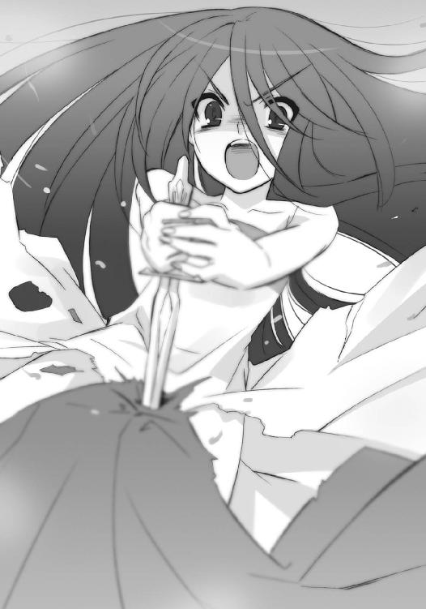
「あああああああああああああああああああああ!!」
足の感覚がなくなるまで、シャナは何度も何度も短剣を突き立て、
「っ訴ぇ── っ」
遂には、バギン、と耳に痛い音を立てて、刃を根元から折っていた。死力を振り絞った結果か、儀礼用ゆえの脆さか、刃は〝燐子〟の額に深く食い込んだままで残る。
それでもさらに、
「ああああああああああああっ!!」
シャナは食い込んだ刃に、折れた剣を打ち付けた。
ガンッ、と重い音が深々と通り、
「 っ ── 」
〝燐子〟の言葉が中途で、ぷつりと切れる。
頭が砕け落ちて数秒、全ての欠片が、足を握る手が、潰れた体が、火の粉と散り果てる。
「はあっ──！ はあっ──！」
荒く息を吐いて、しかしシャナはへたり込むこともなく、折れた剣へと視線を落とした。短い柄を、雫が垂れるほど滲んだ血ごと強く握り締め、この不甲斐ない、自分の力を感情を受け止めきれない武器に、憤激する。
「どこに在る!?」
憤激が、絶叫へと変わった。
「どこに、在るの!?」
心の底から求める、絶叫へと。
「──『贄殿遮那』ぁ!!」
それは、彼女が契約して以来、常に携行し愛用してきた、大太刀の名。
神通無比を謳われる、その大業物は、『星黎殿』幽閉に際し、強取されていた。様々の物を格納できる自在の黒衣『夜笠』が、万が一にでも発動した際に備えてのことである。
誰かに大切な物を取り上げられる、という行為に面したことの少ない、しかもその対象が、数々の難戦苦闘を常に共に踏み越えてきた愛刀であったことから、彼女の受けた精神的物質的な喪失感は甚大なものだった。
それが今、ないと気付いたことで、欲する気持ちへと逆転していた。
力なき惨めな自身を焼き焦がす憤激のままに、瓦礫の中を歩き出す。
為そうとして為せず、欲して得られない、憤激のままに、歩き出す。
「行かなきゃ」
これまで『炎髪灼眼の討ち手』たる少女は、明確に大きな力を欲したことはなかった。戦いに臨んでは、技巧の粋を凝らして死線を潜り抜け、咄嗟の機転によって敵を阻んできた。倒れ苦しんでも、それは自分の未熟と弱さの結果であると受け入れてきた。
フレイムヘイズとなるべく育てられた、特殊な生い立ちがあるため、彼女は契約後の最初期から技術的には一定の完成を見ている。ゆえに討ち手としての力を、己が認識する以上に大きく引き出そう、などと思う機会が、そもそも得られなかったのである。
「行かなきゃ、いけない」
例外としては、とある少年と共に戦うことで得た万能感から紅蓮の双翼を引き出し、以後の礎となる炎の扱いを自覚した事例が認められるものの、以降にそれ以上の次元で、力を欲したりはしていない。今在るものを的確に使う、という実用本位の性格と合わせ、工夫や練磨はしても、曖昧な懇望には無縁な存在で、彼女は在り続けていたのだった。
しかし、全ては過去のこととなった。
「なにがあっても、私は行かなきゃいけない!!」
今や『炎髪灼眼の討ち手』シャナは、ここで奪われた全てのものに手を伸ばし、自らの中に在る全てを大きく浚って、より強く大きな力を掴み出そうとしていた。
ボロボロの体を、強靭な意志が、ゆっくりと歩ませてゆく。
危険や頓挫が潜んでいるかも知れない、敵地へと。
そこに打開の道があると信じて、恐れず。
自身の運命との勝負が、始まる。
闇の中、それは主の欲し求める声を、聞く。
己が使命主の求めに応えるときが来たことを、知る。
それは、主の許へと向かうため、目を開く......一つきりの、目を。
思いもよらぬ敵の出現に対応するため、〝徒〟らが慌しく行き交う『星黎殿』の深部、
「第五、第六隊は上だ！ 第八隊は揃い次第、ウアル様の捜索に加われ！」
「くそ、伝令はなにをやってる!? 予備の〝燐子〟でもいいから代行させろ！」
「プルソン様が連中の侵行を止めている、この間に包囲を固めるんだ」
下方岩塊部の中核に位置するそこは、要塞守備隊の本営である。要塞自体の管理や制御を行う司令室『祀竃閣』とは違い、兵に直接の命を下す指揮所だった。建造当初より備えられていながら、数百年で数度利用されただけのここは、空白の時を取り返さんとするが如き喧騒でごった返していた。
「各隊とも隊長の判断を仰げ。ただし、相手は壊し屋と爆弾魔だ、接近はするなよ！」
「こっちも伝令が帰らないわね？ 防衛機構について指示を出したいのに」
「第二隊が監視塔から制御している。そっちは任せておけばいい」
壁面には多くの出入り口が設けてあり、各方面へと最短距離で行けるようになっている。
大きな部屋を主に占めている設備は、要塞の精密な図面を記した石版と、人員を記した膨大な書類である。平時に使っている機械類も多いが、戦闘中の今は、封絶で麻痺する危険性から電源は落とされていた。連絡も短距離の遠話、および伝令によって行われている。
「馬鹿な、姫の警護と連絡が取れないだと!? 主の方はどうなっているんだ!?」
「遠話への返答がない。上層階には相当な数、奴の礫が着弾しているからな」
「あの見境なしの壊し屋が!! 捜索隊を編制する、近隣の隊はどれだ？」
これら、足音止まない部屋の片隅に、一つだけ、分厚い鉄扉で塞がれた部屋がある。
いわゆる宝物庫で、幾つかの宝具や儀礼用の品々、また文字通りの財宝などが収められている。古くは本丸──立て籠もる最終拠点──に付き物の武器庫だったが、長い歳月の間に実用面から不要とされ、今では重要ながら用いない物を放り込んでおく倉庫となっていた。
その鉄扉の前にいたスーツ姿の〝徒〟が、
「......？」
「どうした」
傍らの、マントを羽織ったもう一人に訊かれ、首を振った。
「いや、何か物音がしたような気がしてな」
「よせよ。別の侵入者が、今度はこの中枢部に潜り込んだってのか？」
言い合って笑う。
そう、彼らが冗談にできたのは、宝物庫の出入り口はこの鉄扉のみ、という構造を知っていたためだが、それ以上に〝徒〟が、基本的に気配で彼我の存在を認識する生き物だったためでもあった。至近に在れば、いかに隠蔽の自在法を使っていても、存在を隠し通すことはできない。そこにいることを、彼らは視覚聴覚より先立つ感覚で、まず捉える。
しかし、
「そんなことより、さっきの報告だが、やはりフェコルー様にお伝えした方が良くないか？」
「む......要塞全域の統括に加え、『マグネシア』の制御にも専心されている折、余計なご心労を増やすだけ、と第一報から伏せていたのだが......」
そこにいるモノは、その範疇にない。
「仕様があるまい。隠している間に事態が悪化する愚は避けねば」
「分かった、俺が行」
二人が、上中下に寸断された。
幽かの音もなく一閃すら見えない斬撃が、鉄扉越しに横二文字、走り抜けていた。
死の瞬間どころか、斬られたことにさえ、部屋に在る者らは暫し気付けなかった。
二人が火の粉と散り、それが鉄扉の向こうに吸い込まれて初めて、異常を知った。
どよめきは、起こらない。
どころか、静まり返った。
誰も、異常事態が起きた、ということしか認識できていない。死んだ二人同様、気配のない空間を前に、今まさに敵に襲われている、という実感を持てないでいるのだった。
ゆえに彼らが、事態の意味を正確に理解できたのは、それの姿を見た瞬間である。
分厚い鉄扉の上三分の二が、僅かな傾斜に沿って、部屋の中へと落ちた。
静寂を破る轟音が床を大きく震わせ、粉塵が舞う奥、
「──」
宝物庫に通じる短い廊下に傲然と立つそれは、隻眼鬼面の鎧武者。
「──主よ──」
鬼面に開いた口の端から、先に散った〝徒〟らの炎を混ぜ、また揺らめかせ、言う。古めかしい日本の鎧が、異形に慣れた〝徒〟らに戦慄以上、脅威と死の兆しを振りまきながら、部屋の中へと踏み入ってくる。
固まる中の一人が、息を呑んで数秒、か細い声を絞り出した。
「......〝天目一個〟......!!」
かつて〝紅世〟に関わる者らの間で、行き逢うことへの不運から、天災とすら認識されていた『史上最悪の〝ミステス〟』の、それが名である。
世を流浪し、出会った者を〝徒〟フレイムヘイズ問わず斬る、化け物だった。
数百年もの長きに渡り、極東付近を彷徨い歩いた間、その凶刃の犠牲となった者は数知れない。確認されただけでも多数、未確認の行方不明者を加えれば無数、名のあるフレイムヘイズや強大な〝紅世の王〟でさえ、その餌食となっていた。
が、近年、その〝ミステス〟の本体たる大太刀を得たフレイムヘイズが世に現れて以降、目撃例は絶えた。双方の関係がどのようなものなのかは、誰からも語られず、誰も知らされていない。伝説として、それは歴史の彼方へと消え去った。
その、はずだった。
それが何故、存在している。
しかも何故、こんな場所に。
それも何故、今という時に。
何故、何故、何故──何故!?
部屋にある誰もが、眼前の事態を信じられず......否、信じたくないあまり、答えを得られるはずもない疑問へと逃避していた。冷静に考えれば、鎧武者の手に握られているものが、宝物庫に収蔵されていた大太刀『贄殿遮那』であることから、多少なりと推測もできたはずだが、脅威からの逃避としての思考に、そこまでの鋭敏さはない。
「──主よ──」
ただ、彼らにとって意味不明な言葉を漏らし、鎧をガシャリと揺すって前進してくる化け物を、麻痺したように凝視するのみだった。
この、部屋に充満する死の緊迫を破ったのは、部屋に駆け込んできた伝令。
法服を着た人型の彼は、気配の全くない鎧武者の前へと無造作に飛び込み、
「伝令！ 上部──」
払いのけられる落ち葉より軽く、全く無造作に一刀、切り下げられていた。
脳天から股下まで断ち切られた体が、先と同じ、炎となって化け物の口へと吸い込まれる。
咀嚼の動作か、微か鬼面が上向いて、またカラクリ仕掛けのように、ガクンと戻った。
「っ、うおおおお!!」
それを、ようやく天災に生じた隙と見てか、
「わああああああ──!!」
あるいは自身への危機をようやく実感したのか、
「くそおお!!」
またあるいは眼前の惨殺と捕食で恐慌に陥ったのか、
「はああっ!!」
その場にあった誰もが、互いの位置も部屋の大きさも考えず、一斉に自らの持つ最大の力で攻撃していた。巨大な炎弾を放ち、植物の蔓を伸ばし、獣となって突進し、風に無数の刃を舞わせ、槍を持って突き掛かり、精神を蝕む幻覚の中へと落とし込む。
が、
「──主よ──」
〝天目一個〟はそれら猛襲を前に平然と踏み込み、剛剣を神速、横薙ぎに振るった。
襲い掛かった獣は、上下に分かれて背後の壁に激突し、槍を持った者の胴がずれ、落ちる。
「が......」「な、に？」
無数の刃は鎧で跳ね返され、植物の蔓は絡みつく端から崩れ、炎弾は焦げ目の一つすら与えられず、幻覚は完全に無視された。その結果に、驚愕で自失した者は迫る鬼面を見、恐怖から後ずさった者は追いつかれ、次なる抵抗を試みた者はその前に切っ先を突き立られる。今度は断末魔の声を上げる暇さえ、与えられなかった。
炎が燻り、騒擾の風も漂う中、ただそれは立っている。天災が己の齎した惨禍を決して誇らぬように、自身が通り過ぎる巨大な力でしかないことを示すように。
抵抗への気力も湧かず壁に背を付け硬直していた者、怯えきって隅で立ち尽くしていた者らは、あまりに圧倒的かつ不条理な虐殺に直面し、たまらず逃げ出した。
部屋にある一番大きな通路へと。
彼らの守護者の許へと。
「うわああ!!」
「ば、化け物!!」
逃げる〝徒〟らを、〝天目一個〟は真っ直ぐに、追う。
ちょうど己の進行方向に向かって──これは偶然ではなく、〝徒〟らが迫る災厄から最も遠くへと逃げた結果である──逃げていたこと、己を主の許まで運ぶだけの〝存在の力〟を、もう少し喰らっておこうと考えていたこと、二つの理由による。
「──主よ──」
重々しい身動きが一転、疾風の踏み込みに合わせ、大太刀を振り下ろした。背後から斜めに一閃、切り捨てると同時に喰らい、またすぐ次の獲物を隻眼で射止める。
逃げる〝徒〟らは、実際はさほど長くもない、しかし今は無限の長さと思える通路を、必死の形相で駆け続けた。最早、誰も逆襲などしようとは思えない。背後から追ってくる、喰らった者の炎と隻眼を光らせる死の顎から逃れる、それだけしか頭になくなっていた。
低い唸りのような声が、燃える指揮所に照らされる通路を渡ってゆく。
「──主よ、御許へ──」
己という武器を求める主の許へと向かう、一度主と定めた少女の手に己を託す、ただそれだけを念じて、『贄殿遮那』の〝ミステス〟──〝天目一個〟は、一心に進んで行った。
それは、炎を背に歩いてゆく。
主の許へ行く道を遮る者は、切り払う。
ただ、それだけを存在の核として、歩いてゆく。
ヴィルヘルミナは、走っている。
時に行き逢う〝徒〟を倒し、また時にやり過ごしながら、彼女は『星黎殿』岩塊部での捜索を続けていた。奪還作戦の幕開けとなった奇襲は、混乱を誘う戦術としては非常な成功を収めていたが、反面、捜索対象であるこの重要区画に伝令や守備兵を頻繁に駆け回らせてしまう、という弊害も生んでいた。
（同型の宝具である『天道宮』に住んでいた、捜索にかかれば見当もすぐに付く、という慢心があったのでありましょうか）
（後悔不要）
常の如く弱気をパートナーに叱責されつつ、ヴィルヘルミナは大きな白装束に身を包み、なおも要塞の深奥へと走ってゆく。目に見える行く先の通路について、ふと感想を漏らす。
（かなり降りているというのに、珍妙な機械類が増えてゆくばかりで、それらしい収容施設などは見当たらないようでありますな）
（断固続行）
徘徊する〝徒〟らの目を逃れる都合上、彼女らの足は自然と、その密度の薄い方へと......即ち、並の格では立ち入ることのできない機密区画へと向かっていた。これは二人にとって、ある程度意識しての行動でもある。つまり、シャナについて、
（あの〝ミステス〟ならば、戦時には厳重に奥へと秘して守るはず）
という、彼女らにとっては当然かつ絶対だろう前提に拠って立つ方針だった。
その分、事毎に鋭い彼が、囮として暴れる二人、という光景から、彼女ら潜入者の存在を察知してしまう危険性も多分に伴っている。なにより〝逆理の裁者〟ベルペオルまでもが共に在る。ほとんど綱渡り、どころか、切れかけた糸渡りのような状況と言えたが、そもそもこの奪還作戦自体、無謀な賭けを承知で敢行していた。相手が手強かろうとそうでなかろうと、目の前にある材料から判断し、信じるまま実行するしかないのである。
（しかし）
そんな自らの無謀と敵手の手強さが噛み合うはずの戦況に、ヴィルヘルミナは微妙な齟齬を感じていた。
（気のせいか、どこか［仮装舞踏会］の手立てに苛烈さが欠けている）
（順調意外）
ティアマトーも同様に、ほとんど掣肘を受けることなく自分たちが行動できている状況を、不審に思っているらしい。
とはいえ、相手を買いかぶりすぎた、全てが上手く進行している、と油断をするまでに、二人も悠二を知らないわけではない。罠の存在に留意しながら、捜索の足をより速める。
一つの符号についての疑念を、胸に抱きながら。
（今まで出会った〝徒〟らは誰も......三柱臣について口にしていない）
（前方注意）
（む？）
と、廊下の先に、壁のような大扉が立ちはだかっているのに、二人は気付いた。
周囲を観察すると、背にした区画では壁までを覆い尽くしていた機械の類が、ほとんど見えないのが分かる。古い城の景観、飾り気のない堅固な石壁が、そのまま残っているのだった。
これはつまり、それだけの格式、あるいは拘りを必要とする部屋、ということである。
疾走の速度を落とし、付近を細心の注意を払って調べた後、大きな扉に手をかける。
重くも音なしにそれは開き、中に秘されていたものを、二人の目に明かした。
部屋はそれなりに大きな広間で、やはり機械類は全くない。が、それよりも、
「......」
ヴィルヘルミナは、眼前に広がっている光景の意味が分からなかった。
在る物についてなら、よく知っていたが、その意味が分からなかった。
「......これ、は？」
「箱、庭？」
ティアマトーも、目で見て分かりきっているものを、改めて当惑の声として漏らす。
これを調べるとして、いったい何を？
思考の取っ掛かりが掴めず、首を捻るばかりの二人に、
「触れぬ方がいい」
どこからか、老人の声がかけられた。
「！」
驚いた二人が見上げた先、石壁に開いた空気通しの穴に、一羽の鳩が止まっている。
「警衛が目的ではないにせよ、色々と複雑な仕掛けが施してある」
生き物としての気配がなく、また偽装された〝存在の力〟の塊としても微少なそれは、彼女らの知る一人の〝徒〟がよく使う、存在の断片だった。
「久方ぶりでありますな......〝螺旋の風琴〟リャナンシー」
ヴィルヘルミナは旧友を、本来の名で呼ぶ。
それは、広い廊下を歩いてゆく。
主の許へ行く道を遮る者は、切り払う。
相手が何者であろうと構わず、ただ前に進む。
戦場の音響く要塞を、シャナが行く。
流れ弾による爆発と崩落に巻き込まれてできた体中の傷には、スカートを破った布を巻いているだけで、まともな処置はできていない。特に、ナイフを折るほどに酷使した掌の皮は、大きく裂けており、巻いた布を真っ赤に染めるほどに、血が滲んでいた。
それでもシャナは進んでゆく。
戦場が遠いためか、未だ〝徒〟とは遭遇していない。遭遇すれば、再び捕まってしまうか、最悪の場合は殺されてしまう。案内と身分の保証を兼ねていた〝燐子〟たちがいなくなったことで、身の自由と同時に、不用意な遭遇で命を落とす危険も得ていた。
それでもシャナは進んでゆく。
あらゆるものが運試しの試練として、少女に襲い掛かっている。次の流れ弾が飛んできて死ぬこと、事情を知らない〝徒〟が現れて殺されること、また逆に、味方のフレイムヘイズに救出されること、要塞の重要な場所に行き着くこと、それら全てが在り得た。
構わずシャナは、歩き続ける。
破壊された〝燐子〟の主が、すぐにでもやってくるかと思われたが、今のところその様子もない。他の流れ弾に当たって死んだのか、今起こっている戦闘に巻き込まれたのかは、分からない。ただ、まるで放置、無視されているかのように、なにも起こらない。
構わずシャナは、歩き続ける。
流れ弾の纏っていた褐色の炎から『儀装の駆り手』カムシンが、また遠くに光る桃色の輝きから『輝爍の撒き手』レベッカ・リードが、この要塞を攻撃していることは分かっていた。そして、恐らくは『万条の仕手』ヴィルヘルミナ・カルメルが来ているだろうことも。
シャナは決して、足を止めない。
溢れ出した激情は、一旦の発散の後、再び心の奥底へと戻り、この行進の原動力となっている。というより、その力を借りることで、ようやくボロボロの体を動かしていた。なにもできない己の身、なにも為せない己の境涯、それらへの憤激は変わらず、熱く、強い。
シャナは決して、足を止めない。
行進の方途は、自身知らない。このボロボロの身で戦場へと近づくのは自殺行為であること、フレイムヘイズらと合流するためには近づかねばならないこと、等の理屈も状況も分かっていたが、足はそれらとは無関係に、ただ何処かへと、何故か明確に、向かっている。
そしてシャナは、知る。
激情の中に、不思議な予感があることを。こうして行進していることの理由......目的地ではない、誰かでもない、もっと別のなにかを目指している、不思議な予感があることを。そう、自分の激情に応えるなにかが呼んでいる、だから歩いている。それを今、ようやく知った。
戦場の音響く要塞を、シャナは行く。
それは、主の心を捉えた。
己を欲し求めている、主の心を。
その心に武器として応えるべく、進む。
未だ『星黎殿』の司令室たる『祀竃閣』には、多くの重要な報告が届き続けていた。
今、また新たに、通信が入る。
宙に滞空する、蜂の形をした自在法からの声として。
《フェコルー様》
「ウアル、どうでした？」
配下の〝紅世の王〟による、待ちに待っていた報告の到着に、フェコルーの声は自分でも分かるほどの早口になる。慌ててハンカチで広い額を拭いた。
見かけこそ、このように情けないが、傍らに幾つか浮かんでいる侵入者との戦いの様子、図示される各守備隊の配置状況、大竈『ゲーヒンノム』の灰で再現される要塞の全景、さらには突発的な処理案件等々、要塞全体の統制を彼は一人で取り仕切っている。危局にある今、『星黎殿』の守護者との異名を奉られるだけの能力を、存分に発揮しているのだった。
（守備隊本営からの連絡が滞っているようですが、なにがあったのでしょう）
などと画面から違和感を見て取りながら、並行して報告に耳を傾ける。
《ただ今、城門始め、要塞外縁部より戦闘区域まで捜査を、完了いたしました。確認された新たな道具、および侵入工作の痕跡はありません。これより『ビト』による捜索の網を、外縁部から内部に向け、縮めてゆくつもりです》
「了解しました。引き続き、よろしくお願いします」
《は、お任せを》
蜂はその場で弾けて消える。
フェコルーは、各方面をもう一度眺め、報告の内容を吟味する。
（侵入の痕跡がないとは、一体どういうことなのか......この『トリヴィア』が反応しなかったのも、不可解と言うよりない）
大竈の横に立ててある松明『トリヴィア』は、空間を操作し通路を作り出す『銀沙回廊』の誘導装置で、『秘匿の聖室』の制御にも兼用している。破壊にせよ自在法にせよ、殻に加えられる作用を見逃すわけがなかった。しかし、現実に襲撃は起きている。
（それに、まさか本当に、侵入者があの二人だけとも思えない）
出現から現在までの曲がりくねった侵行経路で、二人は明確な目標地点を定めていない、との見立てはできていた。となると、この大暴れは陽動に違いない。城内には、既に何者かが潜入していなければならない。しかし、未だその発見の報はない。
（侵入に対する防備にも、綻びはないというのに）
要塞内で警戒線を構築している守備隊には、認識票と捜査の自在法がかけられている。死によって存在が欠けるか、隣の部隊とを結ぶ線上に侵入者が掛かれば、即座に知れる仕組みだった。それに、この自在法は通常の警戒状態時からかけられている。敵が攻撃を開始する前に侵入していたとして、取りこぼしは在り得ないはずである。
（敵の規模を正確に計れぬのでは、捜索人員の配置も決め難い......そうでなくとも、要塞内で暴れている札付きの暴れ者二人への抑えも必要な状況）
なにはなくとも敵情の正確な把握が必要、と考え、捜索の名人であるウアルに敵の足取りを追わせていたのだが、その痕跡が一切掴めないという結果が出た。通常在り得ない話である。彼らは一体何処からやってきたのか？
（そもそも、どうやってデカラビア殿の布いた防衛網を掻い潜ってこの地へ......まるで、軍団も『秘匿の聖室』も飛び越えて、忽然と城内に現れたかのような──）
思う中で、なにかが引っかかった。
（──む、待て......よ？）
最初の最初、敵襲の報を受け取った時のことを思い出す。
要塞の一郭に立ち上がり、体を引きずり出す瓦礫の巨人。
その周囲一帯を中から吹き飛ばした、桃色の閃光と爆炎。
（体を引きずり出す......？ 中から吹き飛ばす......？）
陽動の囮であるはずの二人は、潜入直後から大暴れをしていない。
どういうわけか、要塞の中に潜入してから、攻撃を開始している。
彼らが、まず最初に敢行したのは『秘匿の聖室』への攻撃だった。
（私自身、危機感の赴くまま咄嗟に『マグネシア』で防御していた、あれが答えなのでは？）
潜入してから攻撃を開始したのは、外から先制攻撃を仕掛けた場合、穴を開けた時点で中から『マグネシア』に防御され、外からデカラビアの軍に包囲される、それらへの恐れがあったため、と常識的に考えていたのだが、
（もし、あの光景の意味が、体を引きずり出さねば、中から吹き飛ばさねば、攻撃できなかった、ということだったとしたら？）
前提がひっくり返った。
彼らが中から現れたのだとすれば、デカラビアの防衛網に引っかからなかったこと、『トリヴィア』に感知されなかったこと、要塞外縁部に潜入の痕跡がないこと、全て辻褄が合う。
（待て、待て待て待て）
指先を手で噛み、あたふたとしぐさは慌てて、同時に頭脳は高速で回転する。
（なにか、関連情報を見落としていないか──今、要塞を攻撃しているのは『儀装の駆り手』と『輝爍の撒き手』──そういえば『儀装の駆り手』は因縁の地・ミサキ市に現れたこともある──その地には『万条の仕手』もいた──彼女は先の大戦で先代の『炎髪灼眼の討ち手』と共に『天道宮』を〝髄の楼閣〟から奪取し、特攻をかけた──そうだ、『天道宮』!!）
思考を流れ行く物事の中から、一つの名前が衝撃を持って射止められた。
（この要塞と対で作られた移動城塞──〝髄の楼閣〟から奪取した際、建造した当人である彼から、我らの知らない、秘されたなにかを──そう、例えば、内部に通じる通路などを──彼女らが聞き出していた可能性が──それが彼女らの侵入路であり、退路なのではないか？）
ようやく辿り着いたと思われる、妥当性の外殻から、さらに懸念は派生する。
（はっ!? いけない、もし敵の出発点が要塞の奥深くであれば、戦闘の外縁部に構築した警戒線など、なんの役にも立たない！ 既に敵はこの近辺まで侵入している可能性がある......最悪の場合は、あの『万条の仕手』率いる手勢が!!）
彼女の姿は、東西の各戦線において未だ確認されていない。なにより重要なのは、彼女が組織の虜とする『炎髪灼眼の討ち手』を作り上げた張本人、ということだった。彼女がこの襲撃に加わっている可能性は甚だ高い。
（狙いは、大命阻止のための『秘匿の聖室』と『神門』の破壊だけではない、姫の奪取も含んでいた、ということか──急ぎ守備隊本営に要塞下部の捜索、を......？）
即座に手立てを取ろうとしたフェコルーは、その本営による表示がいつしか消えていると気付く。不審を相手に問いただそうとした矢先、
「フェコルー様ぁ!!」
その当人ら、最後の一人が、扉を破らんばかりの勢いで飛び込んできた。
「はっ!?」
フェコルーは驚きつつも、こっちに向かってくる〝徒〟の背後から一足飛びに追いすがった不吉の影を察知し、反射的に自らを守るための『マグネシア』を暴風のように纏う。その吹き荒れる粒子の隙間に、首を跳ね飛ばされる〝徒〟の姿が過ぎった。
そして、
何者の突破も阻む鉄壁の自在法『マグネシア』を、そよ風のように突き抜けて、
隻眼鬼面の鎧武者と、その手に在る大太刀が、『星黎殿』の守護者を襲う。
それは、上へ上へと、階段を上がってゆく。
進む先で己を欲し求める、主の許へ。
歩みを阻む者は、もういない。
猛火溢れる中空を飛んでいたレベッカは、異変に気付いた。
「あん？ バラル、こりゃあ......」
「まさか......」
バラルも、彼女の胸の前に浮かぶ神器『クルワッハ』から不審の声を零す。
足の裏から派手に噴射していた炎をレベッカは止め、ほとんど指定席となっている巨人の頭頂へと乱暴に着地した。上を指差して絶叫する。
「おい、ジジイ!!」
（ああ、これは？）
各所から褐色の炎を血煙のように撒き散らす瓦礫の巨人が、途切れることのない集中砲火の中、体をきしらせながら天を振り仰いだ。
（ふむ、まさか彼女が〝嵐蹄〟を......？）
彼らを包囲する要塞の守備隊に聞かせないよう、カムシンとベヘモットは抜かりなく声を出さず答えていたが、向こうはそれどころではないらしい。
どよめきや叫びが、戦場の各所から上がっている。激戦の中に在っても常に余裕の風を纏っていたプルソンまでもが、塔の上で自失気味に天を仰いでいた。
とにかく、誰彼問わず、在り得ない事象を前にして騒然となっている。
内壁の全周を覆い尽くしていた自在法『マグネシア』が、消えていた。
殻の内面には、『星黎殿』の名の由来たる偽りの星空が投影されている。
「ど、どういうことだ!?」「我らが〝嵐蹄〟の身に、なにか起きたのでは」「馬鹿な、『マグネシア』が消えてるだと？」「フェコルー様......」「くそ、他にも手勢がいたってのか!?」
騒ぎの中、今なすべきことを理解した三者が、同時に、先んじて、動き始めていた。
カムシンが巨躯を屈めてから一瞬、手に在る鞭『メケスト』を大きく振るっていた。
レベッカが再び勢いよく飛び上がり、炎弾を多数、秘匿の殻を破らんとばら撒いた。
プルソンが『メケスト』の先端、放たれる礫へと、衝撃波『獅子吼』を叩きつけた。
砕けた礫が爆発し、レベッカの炎弾をも誘爆させる。
「むっ!?」
企図を挫かれたカムシンは自らの炎に大きく包まれ、
「ちっ、これでも出し抜けねえのかよ!?」
レベッカは不平を引いて、大きく上空に吹き飛ばされる。
弾ける熱風を、腕組みして受けるプルソンは、胸を大きく逸らして息を一吸い、
「馬鹿ども、いつまで腐抜けているかああ!!」
自在法ではない、腹の底を叩く大音声を放った。
その叱声に守備隊は打たれ、ようやく自身の責務を思い出す。包囲の中心で蠢く巨大な炎の塊に、更なる追い討ちをかけようと、力を集中させた。
が、その上から、
「はっは！ 悪いがよ！」
足の裏から炎を噴射し滞空するレベッカが、高らかに叫ぶ。
胸の前に浮かんでいた神器『クルワッハ』が輝きを増し、まるで彼女を恒星とした惑星のような桃色の光球を十余個、周囲を鋭い楕円軌道に巡る形で生み出していた。
「今はオレたちの逆襲──ってノリよ!!」
叫んで、レベッカは両腕を大きく払う。
輝度を増した光球は軌道から外れ、下方で包囲する〝徒〟らの頭上へと流れ落ちた。それらは飛翔の中で突然、花の咲くように分裂して百をも超える数となり、要塞表面へと、爆弾の豪雨として降り注ぐ。標的への激突が、空白のような静寂と輝きを齎し、
次の瞬間、
なにもかもが吹っ飛んだ。
包囲していた一帯が、殺戮の火炎と衝撃で染め上げられる。悲鳴と怒声、燃焼音と崩落音が混じり合って、これぞまさしく、という地獄の音を奏でた。
この阿鼻叫喚の中、一人俊敏に跳び回るプルソンは、己の自在法『獅子吼』でレベッカを狙おうと、また息を吸い込む──と、その中途でとあるものに気付き、仰天した。
礫の誘爆により、巨人を包んで立ち上る、褐色の炎。
（あれ、は!?）
その中から、天に向かって拳が一つ、振り上げられていた。
（腕が、真上を向いて......いかん!!）
猛烈なまでの脅威の予兆を見て取ったプルソンは、溜めた力の全てを咆哮に変え、
「──ッゴアアアアアアアアアア!!」
自在法『獅子吼』を眼前の炎の中へと叩き込む。
炎を一気に吹き散らす衝撃波の疾走を、しかし咄嗟に差し伸ばされた巨人の片腕が阻んでいた。実際の現象としては、阻めていない。片腕は『獅子吼』をまともに食らって、粉々に打ち砕かれていた。
が、それによって守られたもう片方の腕、肘から先が、轟然と褐色の炎を吹いて飛ぶ。
フレイムヘイズ『儀装の駆り手』が持つ切り札の一つ、『アテンの拳』だった。
砲弾、あるいはミサイルのように飛ぶ大質量は、今や『マグネシア』を失い、守るもののなくなった『秘匿の聖室』、要塞を包む隠蔽の殻へと命中し、
「止め──」
プルソンの制止、
「やっちまえええええ!!」
レベッカの快哉、
「ああっ!?」
守備隊らの絶叫、
全てを掻き消す大爆発を起こした。
砕け散った星空の彼方に、真の空が──広がる。
それは、ようやく辿り着いた。
己を欲し求めた、奉ずべき主の許に。
主──『炎髪灼眼の討ち手』シャナの許に。
戦場の音も遠い、静まり返る無人の廊下を一人、シャナは進む。
戦禍を後に、重々しく鎧を鳴らして一人、それは近づいてゆく。
行く先にその姿を認めて、シャナは目を見開く。
「！」
それは驚きではなく、待望の成就、予感との邂逅に対する、喜びだった。
立ち止まって、近づいてくるのを待つ。
行く先に主の姿を認めて、それは歩みを続ける。
「──」
急ぎもせず、もったいぶることもなく、現れたときと同じ早さで、歩く。
主から数歩、距離を取って、止まる。
シャナは数年ぶりの、変わらない威容を見上げ、一つきりの目と視線を合わせた。
それは、彼女がフレイムヘイズとして契約してから初めて戦った、修羅の巷の住人。自らを振るうに相応しい強者を求める、ただその一事のためだけに数百年の彷徨を続けてきた、武器の魂たる姿だった。今でも、全く同じ。
その、一途に過ぎる在り様の清々しさに、シャナの憤激が、ゆっくりと解けてゆく。
それ──隻眼鬼面の鎧武者〝天目一個〟は、ただ立って、戻ってきたと主に告げる。
「──主よ──」
「おかえり」
シャナは穏やかな声で、当たり前のこととして、迎えた。
己を託した主の許に、鎧武者〝天目一個〟の姿を取って、持つべき者のところに、在るべき物として、己を──大太刀『贄殿遮那』を、運んできた愛刀への、それが礼儀だった。
なにかを求めるように、〝天目一個〟は言う。
「──主よ──」
表情のない隻眼の鬼面を見据え、シャナは頷いた。
そうして、囚われた者の象徴、右の手首にある鎖を示す。
「切って」
言い終わると同時に、大上段から真っ向、大太刀が振り下ろされた。
その、変わることのない太刀筋の迷いのなさ、迸るような重さと鋭さに、
「ありがとう」
シャナは確かな嬉しさを感じていた。
手から鎖が、皮膚の一枚すら傷付けることなく、落ちて、消える。
尋常の力では傷付けることすらできない、自在法であっても干渉を許さない、創造神の業による宝具は、しかしこの、純真確固たる存在によって断ち切られていた。
そして、運び手は役目を終える。
彼──『贄殿遮那』の化身たる〝天目一個〟は、主の手助けをしない。
ただ武器として、求め欲された時に、己を主の許へと届けるのみ。
あとは主が、自分自身の力で、大太刀『贄殿遮那』を振るう。
シャナも、そんな互いの在り様を明確に理解していた。
「──強者──我が、主よ──」
言って〝天目一個〟は重く片膝を突き、両の掌に刃を載せて、主へと捧げる。
求めて、本当に来てくれた、自分にとって無二の愛刀を、シャナは手に取る。
「一緒に、行こう」
声を受け、鎧が掠れ、鬼面が薄れてゆく。
その幽かな光の中、シャナは大太刀を真っ直ぐに差し上げた。
どこまでも優美な反りを持つ、細くも分厚い刀身。切っ先は刃の広い大帽子。どんな材質を使ったのか、刀身の皮鉄と刃の刃鉄は、刃文も見えないほどに溶け合う銀色。刀渡りに比して異常に短い柄。鈍色の重い木瓜型の鍔。質実簡素な柄拵え。
見慣れたそれらを、紅蓮が彩る。
髪から溢れる火の粉が舞い咲き、両の瞳が眩く煌いていた。
戦場に、『炎髪灼眼の討ち手』シャナが、再び立つ。
断章 二
巨大な道の、先へ先へと、彼らは進んでゆく。
崩れて風化した、日干し煉瓦の素組み、
骨のように居残る、彫刻を施された石柱群、
巨大構造物を支えていただろう、折れたアーチ、
円と球のラインを基礎に構えられ、未だ残るドーム、
外見は質実簡素な、内部は精緻な細工に満ちた高い身廊、
どこまでも派手に複雑に、宙へと鋭く突き立てられた尖塔群、
道を進める毎に時流が進み、その土台たる『詣道』も確かなものとなってゆく。
かてて加えて、敵も得た。
「っふん!!」
シュドナイが太さを数倍、長さを十倍ほどにした剛槍『神鉄如意』を一振り、横手の聖堂ごと、それらを横一文字に引き裂く。すかさず咆えた。
「ベルペオル、後ろを塞げ！」
「急かさずとも、分かっているよ」
ベルペオルが笑って、身を取り巻く鎖の環を一つ、割る。その火花の中から、存在を封じられていた巨大な植物型の〝燐子〟が幾体も出現し、追いすがる敵勢の行く手を塞いだ。
崩れ落ちる石片の中を、逃げ惑いつつも歌うロフォカレ、
「暴虎馮河は火花で飾り、荒れては狂い、吹き付ける......」
周囲の光景を、眼鏡を輝かせて記録、測定し続ける教授、
「んーっふふふ！ なぁーんという、宝のぉーっ山！ ザァーックザックと掘ぉーり起こす、そぉーの土すらも砂ぁー金の如し！ こぉーれ全てっ、我が糧、我が水、我が命!!」
二人をひっ捕まえて、ドミノが駆け抜ける。
「お二人とも、危ないから、あまりウロウロしないで欲しいんでごはひはふへふ！」
彼らの退避する先、一行の先頭には、緋色の凱甲を纏い、後頭から漆黒の竜尾を伸ばす、坂井悠二の姿が在った。その手には片手持ちの大剣『吸血鬼』が握られている。
「どうだ、ヘカテー」
「歪みの途切れる創造の確定部が、正面にいる一団の背後、尖塔を結ぶ渡り廊下の奥に見えます。あそこを超えれば、彼らも当分は近寄ることができなくなるはずです」
背後、竜尾によって破片等から守られるヘカテーが言った。
その指示を受け、
「分かっ、た！」
悠二は『吸血鬼』を大きく横に払って駆け出す。前方に在る敵──薄く色付いた人影と見えるモノら、その繰り出す槍の穂先を掻い潜り、大剣の一振りで薙ぎ払った。
影の一群は千切れ飛び、煙のように薄れてゆくが、またすぐに、別の場所から滲み出るように人の形を取り、一人突出した獲物へと襲い掛かる。
それでも悠二は慌てず、
「はあっ！」
竜尾を大きく振るい、周囲の影を全て叩き潰す。
ついでと炎弾を打ち込もうとする先に、
「──『星』よ！」
ヘカテーによる水色の光球が炸裂する。
またも形を取ろうとしていた影の群れは、先制攻撃の中で文字通りに霧消した。
その彼女に、悠二は指示を下す。
「ヘカテー、先に安全圏へ。他が脱するための目印になってくれ！」
「了解しました」
ヘカテーは軽く一跳び、自らの力が見出した、影から逃れる渡り廊下の奥へと先行した。
入れ替わるように、シュドナイが悠二の背後へと、背中合わせに降り立つ。
「狭間に落ちて数千年、時という感覚すら失っているだろうに、よく精神が持っている......まったく、同胞殺しどもの執念には感服するばかりですな」
「......」
アラストールは押し黙り、悠二は困った風に笑った。
「しかし、こ奴らがおらねば、我が創造も帰還も成らなかったのだ。行く路に多少の手間が在るとて、感謝の念は、確と捧げねばなるまい」
彼らを襲う影は、かつて〝祭礼の蛇〟を秘法『久遠の陥穽』で両界の狭間へと追いやった際、その余波に巻き込まれた、最古のフレイムヘイズらの成れの果てである。
彼らは秘法を発動させるため、自らの〝存在の力〟を限界まで使ったことで、逃れる術なく力尽き、行く先もない狭間で〝祭礼の蛇〟と共に彷徨う結果となったのだった。
そのような悲境に陥ってなお、彼らは、まさにシュドナイの言うとおり、使命遂行への執念から、己が存在を純化させていった。疲弊するだろう意識を時とともに鈍らせ、しかし契約は解かず、回復し続ける力を以って『久遠の陥穽』を作用させ続けたのである。
流れ行く年月の果てに〝祭礼の蛇〟がいずれかの世に帰還した際（方途を失った暗夜の大海でも、岸へと流れ付く可能性は極微とはいえ、確かにゼロではない）、即座に秘法を再起動させる予防措置、言わば身命を賭した保険・安全装置だった。
ところが、
一方の放逐を受けた側、創造神たる〝祭礼の蛇〟は、彼のみに可能な方法で、これら執念を逆手に取っていた。秘法が発動し、逃れ得ぬと悟った瞬間から、彼は残された力を秘法の構造変容に注いだのである。その結果......『久遠の陥穽』は、討ち手らの執念にとっては真に皮肉な形で、創造の血肉となった。
つまり〝祭礼の蛇〟は、自らへと作用し続ける秘法を動かすフレイムヘイズらの力を、ほんの微か、自らにも流れ込むよう改変を加えたのである。こうして得た減じない力を、彼は『大命詩篇』や『詣道』の創造に当て、両界の狭間で復活の時を待ち続けたのだった。
今、フレイムヘイズらがこの『詣道』に出現しているのは、彼らが『久遠の陥穽』へと因果を縛り付けているからであり、またその身が茫漠たる状態となっているのは、内側に確たる存在を作る『詣道』が、狭間に在る他のものを隔離しているためなのである。
ヘカテーが安全圏と認定している地点は、隔離が完全な領域......つまりは狭間を彷徨うフレイムヘイズらが立ちいることを許されない場所である。
その安全圏である渡り廊下の奥へと、ヘカテーに続いて、教授とロフォカレを抱えたドミノを、さらに抱えた悠二が飛び込む。
一同の脱出を見届けたシュドナイは、最後尾に在る参謀へと声を掛けた。
「助けは？」
「いるものかね」
ベルペオルは軽く答え、襲い掛かる執念の古強者らの前から、後ろ跳びに下がる。その身の周りを、彼女の宝具・鉤鎖『タルタロス』が一巡して結節した。
「──『タルタロス』、隔離せよ」
その一声で、鎖の内は盟主〝祭礼の蛇〟が作り上げた、完全な『詣道』と同条件を得る。
そして、理の必然として、襲い掛かってきた刃の全てが無効化され、悉く弾き返された。
さらにベルペオルは鎖の環を一つ割って、新たな〝燐子〟を解放、殿軍にすると、居残っていたシュドナイの元に悠々合流した。
将軍は、可愛げのない参謀に苦笑いしつつ、追い縋る影を切り払い、
参謀も、なにを気にする風もなく平然と、盟主らの許へと歩き去る。
一同は、無数の建造物からなる迷路を、さらに先へと、進んでゆく。
３ 絢爛は咲く
時、溯ること数刻。
真昼の空が、まるで一線引いたように、晴れ間と曇天の蒼と白を分けている。
この線と平行に真っ直ぐ、プライベートジェット、というには少し大型の航空機が一機、通常航路から遥か離れて飛んでいた。下方一面には、雪を被った純白の、起伏激しい山地帯が、陽光を反射する鏡のような輝きを広げている。
《サバリッシュ総司令官、降下地点上空まで後五分です》
機長からの報告を、『震威の結い手』ゾフィー・サバリッシュは、機内に設けられた特別なエアロック内で聞いた。通話用のインターホン越しに言う。
「ありがとう、機長。何度も申し訳ありませんが、異常は？」
《はい、ありません》
少量の可笑しさを込めた声が返した。
《天候は良好──『凪』作戦のタイムスケジュールに照らして、修正誤差範囲を超える異常を示す信号は、未だ当空域内には一つも出ておりません》
機長は、一つも、にアクセントを置く。そうして一転、
《ええ、出すもんですか。人間の力というものを、今こそご覧に入れますよ》
強く、確信を持って言い放った。
ゾフィーはその声に、喜び深く笑いかける。
「そうですね。今こそ人間の力を、頼りにさせてもらいます」
人間の力、にアクセントを置いて。
と、エアロック内に点っていた電灯が消えた。
《降下地点に侵入開始──当該空域にニアミスのアラームなし──『傀輪会』第一から第五臨時管制とのリンク、および航路、最終チェック──全て異常なし》
俄かに薄暗くなったその中、陽光指す丸窓とともに、赤いランプが存在を誇示し始める。降下が間近に迫っていた。
《これより当機は『凪』より『交差点』へと、作戦フェイズを最終段階に移行します》
ゾフィーは笑って、別れを告げる。
「良い旅をありがとう、機長」
《そちらも、どうぞご無事で》
多く言葉で飾らず、機長も答えた。
インターホンを切ると、ゾフィーはエアロック内の一同を見回す。
その額から、
「さて、準備は......と訊くも無意味ですな」
と、あえて人間同士の会話で口を閉ざしていた〝払の雷剣〟タケミカヅチが、言った。
すぐ傍ら、姿勢を正し待っていた『犀渠の護り手』ザムエル・デマンティウス、胸ポケットから紐で下げられた親指大の銀杯で、同じく無言の〝吾鱗の泰盾〟ジルニトラ、
部屋の中ほど、落ち着かない風に立つ『姿影の派し手』フランソワ・オーリックと、その背に負われる大きな壺から呆れの溜め息を漏らす〝布置の霊泉〟グローガッハ、
窓際で、眩い銀世界を眺める『皓露の請い手』センターヒルと、その腰に下がる角ばったメダルから、契約者と同じ微笑の気配を漂わす〝殊寵の鼓〟トラロック、
この機に在るフレイムヘイズは誰も彼も、人間であれば必須の、降下に使用するパラシュートを身につけていない、全く普段通りの格好である。
そんな彼らに、ゾフィーは総司令官として開戦の辞を述べる。
「東西防衛線の討ち手らに敵主力軍を引き付けてもらい、得られるとは思っていなかった貴重な情報を彼の地から得ることで、遂に我々は、この詭計を実行する段階へと至ることができました。今より一時間......これからも続いてゆく歴史に残る戦端が開かれます。私は、本降下作戦を完全に成功させることで、今後のフレイムヘイズらにとっての範とし、逆に〝徒〟らにとっては大きな戦いに踏み切る気を起こさせない戒めとするつもりです」
一同の静寂に、肝っ玉母さんの迫力ある笑みがぶつけられた。
「だから、初めからしくじるような、みっともない真似はしないでくださいね」
返ってきた反応、硬軟それぞれの笑いを、さらに強い宣言が引き締める。
「これより、『交差点』作戦を開始します」
と、まるでその結びを待っていたかのように、赤いランプが緑に変わった。降下地点が近くなった証である。それは、ゆっくりと間隔をあけて明滅する。
「では、参りましょうか、『震威の結い手』ゾフィー・サバリッシュ君、および御一同」
「はいはい、参りましょう、〝払の雷剣〟タケミカヅチ氏」
笑いつつ、ゾフィーはエアロックの扉に付いている安全レバーを握り込んで捻った。
金属の噛みあう音がするのと同時に、室内の気圧が下がってゆく。
耳障りな高音のブザーがエアロック内に鳴り響き、数秒して唐突に止む。
ゴン、と重い物が機械の駆動で動かされる響きがあり、扉がスライドしてゆく。
壁面に大きく開いた先にあるものは、ほとんど打撃力となっている暴風の実感と、
彼方に広がる上方一面を分ける雲と空の線、下方一円を占める山また山の銀世界。
いつしか、緑のランプは明滅を激しくしている。
数秒後、吹き込む風に叩かれる彼女らの見つめる先で、
ランプが明滅を止めて、強く点った。
「っと」
ゾフィーは無造作に、ベールと修道服を靡かせて踏み出す。その姿が機外の暴風に浚われ、瞬きの間に後方へと流れ落ちた。
「ふむ」
ザムエルも同様、続くのが当然といった足取りで機外へと消える。
「ほら、早く！」
「......へやっ！」
グローガッハの声に一瞬の躊躇を蹴飛ばされて、フランソワは自棄のように飛んだ。
「はっは」
センターヒルはそれら様子を明るく笑い飛ばし、ひょいと軽く躍り出る。
空と、
大地が、
宙を舞う中で回っては大きく跳ねた。
通常の空輸挺身では考えられない、常識外れに高い高度からの降下──というより落下が、四人にして八人のフレイムヘイズらを重力と風で洗う。衣服が空気をはらんでこんがらがる中で見る上空──というより既に地平近く、速度を大幅に落とした航空機が、それでも既に豆粒よりも小さく、飛び過ぎつつあった。
時間と空間の認識が掻き混ぜられ曖昧になる僅かな間隙を超え、浮遊の自在法を使っての減速を始めたセンターヒルは、知らず天に向けていた視線に、
「──」
まさに驚くべき、圧倒的な光景を捉えて、嘆声を漏らしていた。
「──なんと、見事な」
「これが、彼らの烽火......全く、大したものじゃないか」
トラロックも賞賛で応える。
彼らが見上げる広大な蒼天を渡り、また白雲を越えて全方向から、続々と大小の機影が空を過ぎっては数名ずつ、人影を放り落としていた。互いの高度差は、高速で行き交う航空機にとってはほとんどないも同然の近さ。飛来する数百機が時間差をつけて、まるで宙に交差点でも存在するかのように一点を目掛けて飛来し、乗客を放り落としては去ってゆく。
それは、全世界からの、航空機による短時間での軍勢集結。
世界各地からの離陸を起点に、空域への進入角と高度と時間を、精緻な計画性と操縦技術と管理能力によって織り成した、行為によって生まれる芸術、空中の一大パノラマだった。
降下してくる数多くの人影は無論、全てがフレイムヘイズである。最終的には、総勢で四千余名にまでなる、世界中から結集した精鋭たち──現代の『フレイムヘイズ兵団』だった。
彼らは、三つの課題を超え得たことで、今この場に在る。
即ち、航空便の整備、
気象変動の確実な予測、
集結地点の選定、である。
三つが三つ、尋常な労力によって、また労力のみによって、得られたものではない。
腕組みをしながら落下していたザムエルは、この集結の様を見て、
「我々の降下時間までに一機の遅参もなかったのであれば、まず九割は確実だな」
「うむ、まずは算段が可能なまでの戦力を現地に揃える前提は、クリアできたか」
ジルニトラとともに、自らも深く関わった計画の出来栄えに満足する。
フレイムヘイズ陣営としては、この切り札たる兵団を、どれだけ効果的な位置に、どれだけ不意を討つ形で投入するかが、言うまでもない最重要課題だった。この大兵力を馬鹿正直に集結・待機させていれば、その気配だけで［仮装舞踏会］の索敵網に引っかかり、足止めのための防衛線を構築されてしまう。それでは双方噛み合う戦線が一つ増えるだけ、いかに精鋭を揃えたところで、決戦兵力としての存在意義は半ば以上失われる。
兵団を投入すべきは、彼我が大兵力をぶつける東西両防衛線を飛び越えた［仮装舞踏会］勢力圏の奥深く。戦力の寡少な空白地帯であるべきだった。
ゆえに、彼らが採ったのは極端な分進合撃......それこそ数人単位という敵の警戒しきれない小勢に分かれ、事在らば一挙に特定地点へと集結するという、途方もない方式だった。
実行手段の概要は、実に単純なものである。
兵団への召集が決まった討ち手らは、降下地点の最終決定がなされるまで、世界中の空港、あるいはその近辺で待機し、各地に残された外界宿構成員らは、中途の空港での給油も含め、飛行計画を常時整備しておく。そして、集結地点決定の報とともに全フレイムヘイズらを数百の航空機で一挙に、時間差・高度差を付けて送り届ける、というものである。
これら、実に単純な方式は、しかし膨大な頭脳に技能、組織力に労力資力等々、膨大かつ高度なマンパワーが必要だった。そして、今は亡き一人のフレイムヘイズが育ててきた外界宿という組織には、そのマンパワー......超常的なものではない力、ゆえに〝徒〟も容易に看破し得ない力、なにより、あくまで一個の人間が集まることで発揮される偉大な、世界さえ動かすことのできる力が、十分に蓄えられていたのだった。
先年来の［仮装舞踏会］の攻撃により、組織の運営を取り仕切る『クーベリックのオーケストラ』、および交通の手配を司る『モンテヴェルディのコーロ』という二つの主要な指導部を失い、また他にも多数、多くのフレイムヘイズとともに人間の同志を喪っていた構成員らは、なおも、まさに、今こそ、力を振り絞るときと奮励し、見事己が役割を成し遂げていた。
それらが天を交差してゆく様に、逆さまに落ちるフランソワは、
「ああ──本日の天候は快晴、全くの快晴だ!!」
「それが取り柄ですものね──ふふ、全くの、快晴!!」
背中の壺としてあるグローガッハと一緒に、快哉を上げていた。
構成員らは、人知の及ぶ限り緻密な飛行計画を立て、航空機の配備と整備も滞りなく行っていたが、他でもない、その人知の及ばないものが、飛行には特に大きく影響を及ぼす。
つまりは、天候である。
あらゆる計画の成否は、航路上のこれによって左右される。多数の航空機を使った計画であるがゆえに、その『穏やかな晴れ』を求められる空域は一航路の比ではない。前線の位置、雲の高度、乱気流、冬季ゆえの着氷など、観測されるあらゆるデータから予測することは、人間の持つ科学力でも不可能ではないものの、確定とまでは当然、言えない。この確定がなければ計画はあくまで机上の空論として、様々な齟齬を起こし破綻していたはずである。
が、それを確定させ、計画を実現させる異能の持ち主が、いた。
フレイムヘイズ『姿影の派し手』フランソワ・オーリックである。
彼の能力は水を操ることであり、川や水脈等を通した遠距離への干渉と探知、さらには、ある一定の範囲内の天候の制御まで行うことができた。もちろん、航空機の行き交う広大な作戦空域全ての天候操作までは、流石に不可能である。彼が行ったのは、その天候操作という技能に関連する作業......つまり、各種データを元にした、人間の科学力には為しえない精度での天候予測なのだった。
集結地点が決定してより数日、彼は同地点を中心としたあらゆるデータを検証し、数百年の経験と最新のデータを生かす頭脳を以って、気候変動の傾向と、一週間分の確定情報を練り上げている。作戦のタイムスケジュールは、まさにこれら成果を基に立てられたのだった。
立案と実行を裏打ちする陰の立役者たる彼だけではなく、戦闘以外の作戦遂行にも、多くのフレイムヘイズが力を尽くしている。
この作戦は部外者から見れば、公的機関には全く提出されていない飛行計画の元、一箇所へと数百もの航空機が集中するという、軍事侵攻と取られてもおかしくない異常事態である。
それを回避するため採られたのが、領空侵犯どころか飛行の事実そのものを消し去るために、近隣各国の軍施設や空港へと侵入したフレイムヘイズらが、航空機の降下作戦と離脱が完了するまで封絶を張る、という方策......通称『凪』作戦だった（本計画推進の主力となったのは、上海会戦における大敗の恥を雪がんとする『傀輪会』指導部の大老らである）。
広大なレーダー網に開いた空白の大穴、凪いだ海のように静かな空域へと密かに侵入し、全ての航路が交差する地へと降下する。兵団の戦線投入最終フェイズ......通称『交差点』作戦は、こうして人間とフレイムヘイズの協力により実現した。
彼ら双方を率いる総司令官、ゾフィーは上ではなく下を見て、呟く。
「態勢を整える時間を、敵が与えてくれるかどうか......ここからは全て、賭けですね」
「考えられる事態は考え、用意できる物は用意した。となれば、後は実行あるのみですぞ」
タケミカヅチが額から、あえて軽い調子で返した。
見る見る迫ってくるのは、純白の雪を被った、凹凸の激しい山地帯。
彼女らの降下する、フレイムヘイズ兵団の集結地点である。
それは、とある座標から南へ約百キロ、という目安をもって、定められていた。
敵の迎撃前に降下からの態勢を立て直し、なおかつそこから最短の地点として。
そのとある座標こそ、全作戦の基点にして、逆転への小さくも確かな足掛かり。
数日前、ハワイよりの配達電文、という不可解な形で齎された、一つの位置情報である。
ゾフィーらフレイムヘイズ陣営にとっては、欲したところで絶対に得られるわけがない、との諦念から、目算どころか希望にすら入っていなかったもの。
また［仮装舞踏会］の側にとっても、数百年の長きに渡る実績に鑑みても、絶対に露見するわけがない、として彼らの作戦の大前提を構成していたもの。
これがなければ、フレイムヘイズらは、より厳しい状況の下、無謀と分かっている空疎な敵勢力圏内への突撃に、全てを委ねるしかなかったに違いない。
それでもゾフィーは、間違いあるまい、との予感を置いて、情報の検証を命じた。
某日、東西両防衛線上で、尋常ならざる世界の違和感が観測されている。推測するまでもない、［仮装舞踏会］による大きな企みの核と思われた。東西で感知された時間差から、大よその発生源、中心線たる経度は既に割り出されている。
得られた経度の、ややブレの大きな範囲内に、齎された位置情報は見事に合致していた。
また、かねてより『万条の仕手』ヴィルヘルミナ・カルメルから、［仮装舞踏会］の盟主代行体となった〝ミステス〟坂井悠二は、午前零時に、その日の内に消耗した〝存在の力〟を、宝具『零時迷子』によって完全に回復させる、との報告も受けている。
その座標で零時直前に大きな〝存在の力〟を使い何事かを為した、との推測にも、同じ。
各地に入り込ませた威力偵察部隊からの報告も、その座標を基点とすれば、全ての計算はピッタリと合った。解答を前以て示された難題のように、ようやく事象は解けていった。
指導部は、遂に断を下した。
否定するだけの材料はない。
とある座標に、それは在る。
敵の企みが着々と進んでゆく危機感の中、これが得られた唯一の挽回の光明だった。
ゆえに当然、だから今こそ、決戦兵力を全力で投入する作戦の発動も、決定された。
もちろん、電報の信憑性を検証してなお、危険過ぎる賭けであることに違いはない。が、その紙片にもう一文、位置情報の他に添えられていた事項が、最終的にゾフィーを動かした。
曰く、
『停泊の後、一切動かず』
と。
（ここから、始まる）
ゾフィーは、もはや近い地表への降着体勢を取るべく、修道服を絞って足を下方に向けた。舞い降りる数千のフレイムヘイズらとともに、遠く風巻く北方へと視線を注ぐ。
（さあ、出て来なさい......［仮装舞踏会］の〝徒〟たち）
険峻な、太い棒が並び立つように複雑な隆起を見せる山々の彼方を。
（貴方たちの守る物が、この地に在る証として......！）
彼女らの目指す座標に在るべき物──移動要塞『星黎殿』を。
（やはり、近隣に侵入し得た部隊など、ない）
何処か深く沈んだ水底で、［仮装舞踏会］外界宿征討軍総司令官たる〝紅世の王〟、〝渺吏〟デカラビアは、まさしく首を傾げる思いだった。
（いったいどこから、奴らは現れた）
彼らの本拠地『星黎殿』を広域に分散して取り巻く直衛軍、その間に張られた警戒線に、一切の綻びはない。軍全体の形は、小部隊同士の間を無数の糸状の自在法で結んだ、大きく幾重にも連なる環である。糸状の自在法は無論、感知装置の一種で、デカラビアの感覚と連動もしているが、それに頼りきってはいない。直衛軍の全体は、一定間隔で時計の歯車のように互い違いの運動をしており、部隊の員数や移動の時間等、なんらかの齟齬や異常があれば、即座に報告が直通でデカラビアの許へと上がるようになっていた。
現在のところ、この配備状況には一切の狂いがない。
にも拘らず、現在『星黎殿』は、内部に最悪の部類に入る敵の攻撃を受けている。
フェコルーが鉄壁の自在法『マグネシア』によって後続の侵入を防ぎ、また『神門』や『秘匿の聖室』を守っている以上、作戦上の支障は現在のところない。
が、それでもデカラビアにとっては、一足飛びに在り得ない侵入を許した衝撃と屈辱は大きく、また実際に直衛軍を率いる身としても、このまま看過し得るものではなかった。
（なにより、外を固めねば）
彼がそう考えたのは、全く当たり前の、常識的判断と言える。もし城内への救援が必要となれば、フェコルーが『プロビデンス』を通じて要請するはずであったし、正直『星黎殿』の守護者にはその必要もあるまい、と信用もしていた。
よって彼は細心の注意を払い、直衛軍の構成する環に神経を集中させる。
と、取り組んだ矢先、
（な、ぬ？）
自在法に反応があった。
（想定より遥かに遠い......なんだ、これは）
探索対象たる『星黎殿』内に侵入した工作員らの本隊、と一瞬思って、しかし訝る。
その場所が、直衛軍の守備範囲を超えた先、環の外縁部から一帯へと張り巡らせた索敵網の最南端だったからである。包囲の内に潜む侵入者の一端、という形での発見ではない。本来直衛軍が戦うべき、包囲の外から襲来する敵部隊として、その一団は感知されていた。
（いったい、どういうことだ）
デカラビアは戸惑う。この『星黎殿』直衛軍が守りを固める戦域へと至るまでには当然、別部隊による厳重な防衛線が、多く布かれていた。これらからは、未だ交戦どころか接敵の報一つ受けていない。にも拘らず、この一団は防備が最も厚いはずの南方からやってくる。
こんなところに、敵軍がいるわけがない。
（どう、いう）
しかし、得た感覚は紛れもない事実だった。
しかも、大軍と言って良いほどの多数である。
さらに、異常な情報が自在法から伝わってくる。
（まさか）
この敵軍は、一直線の進路を取って突き進んでくる。
彼が今在る本営の所在地、つまり『星黎殿』を目指して。
察知不能なはずの停泊位置へと、一度の狂いもなく、明確に。
（先に侵入した工作部隊が知らせたのか......いや、そんなわけはない）
既にフェコルーへと報告したように、自在法も人間の文明機器も、監視に怠りはない。
（この戦い、面妖なことばかりが起きる......が、詮索は後）
本拠地を守る司令官として、彼はまず、現実の事象を確かめにかかった。
広がる海に漂う感覚にも似た、淡い意識を一箇所に──敵軍が侵攻してくる一帯に──集中する。応じて、警戒区画毎に配置されていた鱗『プロビデンス』を核に、意思総体の受け皿が形成された。実際の現象としては、人間大の円形の中に五芒星、中央に閉じた目、という自在式が浮かび上がる。この形成の後、自在式の目が見開かれ、迫る敵軍を捉えた。
「！」
雪を被る松を張り付かせた、太い岩の柱が立ち並ぶ光景。
その間を吹き渡ってゆく風を衝いて、数千ものの軍勢が突き進んでくる。
断崖を跳ぶ鎧に槍という出で立ちの男、地を蹴立てる銃を持たない軍服の女、雪を払うマフラーを靡かせる少年......人間と形を同じくしながら、人間には為し得ない踏破を軽々と為す彼らは、フレイムヘイズ。己が意思で〝紅世の王〟に存在の全てを捧げ、人を喰らう〝紅世の徒〟を討滅する異能を得た討ち手たち。
その先頭を切って疾走してくるのは、
（ゾフィー・サバリッシュ!!）
十字架を持たない修道女。これまで東西の戦線にその姿を現していなかった、フレイムヘイズ陣営の切り札たる女傑が、彼を、彼の自在法を見て無邪気に笑い、指先から紫電を閃かせた。
視覚は途切れ、元の深みへと意識は帰る。
（奴が、来た）
予感や確信という、現象以前のものではない、戦慄による震えが、その身を過ぎった。どうして、という理由も、どうやって、という方法も、もはや追及する意味はなくなった。
かの『儀装の駆り手』と『輝爍の撒き手』による奇襲と撹乱、勢力圏内への敵軍の出現、その進撃する方位......全てが、一つの露見を基礎とした作戦であることは明白である。
即ち、
どういうわけか、フレイムヘイズ陣営は『星黎殿』の正確な位置を知っている。
そして、
幾重にも厳重に張り巡らせていたたはずの防衛線が、完全に突破されている。
なにより、
この［仮装舞踏会］の本拠地を攻め落とさんと一路、進撃を始めている。
それらだけが重要な、認識すべき現実だった。
（よもや、『星黎殿』直衛軍での戦闘を演じる無様を晒すことになろうとは）
デカラビアは、言葉だけは怒りを、意識はあくまで冷静に巡らす。
（ゾフィー・サバリッシュが在る以上、これが彼奴らの決戦兵力であるに違いない）
認識を強くすると、作戦の大枠へと思考を移した。
（当初の作戦案......第一段階として、東西の抵抗拠点を崩壊させることで道具どもから反抗の余力を奪う攻勢を、第二段階として、勢力圏内に引き上げて創造神〝祭礼の蛇〟帰還を待つ守勢を取る、という参謀閣下の目論見は、早くも潰え去った）
三柱臣の参謀〝逆理の裁者〟ベルペオルへの不用意な妄信を持たず、また幾多の大規模戦闘を経験してきた彼は、神算鬼謀を謳われる彼女の策が破れたことについても、特段の動揺はない。戦いとは計算どおりにいかないものであることは十分に知っていた。
が、しかし、その彼をして、この戦局の推移のあまりな早さ、規模に比してあまりに急激過ぎる展開には、冷静なはずの感情の水面に、驚嘆の波紋を浮かべざるを得ない。
（開戦より僅か半日で、この地への迫撃を受ける、か）
理由については皆目見当も付かなかったが、彼ら［仮装舞踏会］が大前提としていた一つの条件である『星黎殿』の隠蔽が、初手から反故にされている。
このため、戦局全体で不意を討たれる結果となり、敵決戦兵力の忽然たる出現という異常事態の勃発と合わせて、本拠地への攻撃をも許すこととなった。
本拠地が陥落してしまえば、他で勝っていても意味などない......つまり、東西両戦線における優勢の価値が、この一事のみを以て、地に落ちた形である。
現在のところ主導権は彼方にある、と言って良かった。
（まずは、侵攻を食い止めねば）
時間にして僅かな思考を経た、外界宿征討軍総司令官デカラビアは、大きく『星黎殿』を取り囲んでいた直衛軍、各部隊へと一斉に自在式を浮かび上がらせて、指令を下す。
「──直衛軍、総員戦闘配置」
本拠地にとって最後の防壁として配された彼らは、言うまでもなく集団戦と心胆に熟達しきった精鋭らである。誰も慌てず、誰も騒がず、ただ命令に耳を傾けた。
その内の一隊に、
「パイモン、外環現行五、六、七位置の三隊を預ける。先行して敵軍の頭を抑えよ」
さらに他の全軍に、
「索敵要員、および内環全隊を除き、南面への備えを取る。中央は私、右翼はバティン、左翼はバルマの指揮を仰げ。編制を完了し次第、南に進軍する」
それぞれ命が下る。
広範囲で敵を探るため、また逆に、敵からの察知を避けるため、大きな環となっていた直衛全軍が、練度の高さを示すように迅速な集結を始めた。角度も急に波打つ山嶺、落ち窪んで底も見えない幽谷、凍って固まる川に滝、そここに降り積もった雪溜まり、あらゆる天険を意に介さず、数多くの大小、異形人形の影が奔り、跳んでゆく。
この集結から離れ、南方で別集団を形成するのは、パイモンを中心とした先遣隊である。彼らはより足を速め、より気迫を漲らせて、迫り来るフレイムヘイズの軍勢を迎えるべく、急ぎ陣列を整えてゆく。
これらの遂行を待つ僅かな間に、デカラビアは『星黎殿』内のフェコルーと連絡を取る。
（要塞内部との連携が必要となるほど、乱戦になるとも思えんが......）
どちらにせよ、作戦が破綻をきたした以上、こちらの世界に残った組織の最高位として並び立つ（正確にはどちらが上位と定められてはいない）要塞司令官とは、今後の大方針の転換についての協議をしなければならない。
（問題は、各方面軍の司令官が、参謀閣下の規定路線に反する命に服すかどうかだが──）
思い、フェコルーに渡した『プロビデンス』を核に自在法を起動しようとした頭上で、
空を貫く轟音とともに、大爆発が起きた。
「!?」
彼のみならず、集結しつつあった直衛軍の総員が、何事かと眼を見張る。
在り得ないことが立て続けに起こる、その異常さに、彼らは今度こそ驚愕した。
あらゆる気配を隠蔽する『秘匿の聖室』が、内部からの攻撃を受け、砕けたのである。
侵入者による襲撃を受けた後でも、戦場にある〝紅世の徒〟らは、鉄壁の自在法『マグネシア』を繰る『星黎殿』の守護者〝嵐蹄〟フェコルーが『星黎殿』を守っている、その絶大な信頼を以て、後背を任せ戦いに向かうことができた。
それが、眼前に起きた大爆発によって、『秘匿の聖室』諸共、砕けた。
（馬鹿な）
デカラビアは驚きつつも動転せず、まず内部の戦況を確かめるべく、フェコルーの元に自在式を形成する──が、
（なんだ、これは）
またしても、立て続けに、在り得ないことが起きる。
というより、既に起こった跡を、見せ付けられる。
要塞の司令室『祀竃閣』が......破壊されていた。
なにが起こったのか、一見しただけでは把握できないほどの荒れ様である。彼の『プロビデンス』も、既に切り裂かれ地に転がっているらしく、明確に情勢を捉え難い。
天井のドームは割れ、段状の床は砕け、大竈『ゲーヒンノム』までが倒れて、どす黒い灰を撒き散らしている。部屋の中には薄い煙と舞い上がった灰が漂い、一切の音もない──否、静寂を破る物音がして、そちらを注視しようとした瞬間、遂に『プロビデンス』が力を失い、全ての音信が、途絶えた。
要塞の上下を構成する城塞部と岩塊部、その丁度中間点に当たる廊下に、
「この石敷き......地面の上にある」
フレイムヘイズ『炎髪灼眼の討ち手』シャナは在った。
今や再びの強さを取り戻した足が、漲る力のまま重く、ズン、と床を打つ。
「つまり『天道宮』で言う一階ね」
掌にあった傷は既に塞がり、大太刀『贄殿遮那』を握り込む挙措にも澱みはなかった。
炎髪灼眼の煌きが照らす廊下は、天井が高く、細い。
彼女は後ろから、大太刀を齎した者は前から、それぞれやってきた。この要塞へと最初に通された際の記憶、また上部の幽閉されていた塔および屋根の上からの眺めで、全体の構造に当たりは付いている。その判断を信じて、湧き出す力を以て、前へと駆け出した。
「近くに、大きな道が必ず在る。それを辿れば、すぐ外に出られるはず」
先から独り言のように声を零しているのは、常ならばフレイムヘイズとして共に在る〝天壌の劫火〟アラストールがいない、という状況への欠落を、愛刀の化身たる旧知と出会って程ない、という感覚の近しさで埋めているためである。
「早く、戦っている彼らに、『神門』のことを伝えないと」
彼女が駆ける先、縦に細長い廊下の終点らしきものが、前方に見えてくる。
廊下の前面を塞いで、行き止まりと錯覚するような長い垂れ幕が下がっていた。
十分に用心して、これをくぐったシャナは、
「これは......」
出た先に広がった空間への、猛烈な既視感を覚える。
両脇に二列ずつ太い円柱を並べる、五廊式の大伽藍だった。
彼女が出たのは、大伽藍の入り口らしき大扉の反対側、段にして十余の、競りあがった舞台の端である。どうやら、あの細長い廊下は舞台の袖として出入りする通路であったらしい。
舞台の中央には広くもう一段、舞台の上の舞台が設けられている。そこから大扉へと、伽藍の中央に赤絨毯が敷かれていた。なにをする場所かは、大よそ推測できる。
己の故郷たる移動城塞『天道宮』にも、ほぼ同じ様式の大伽藍があったことを、シャナは思い出していた。舞台の有無という違いこそあれ、同じ眺めが得られるかと、舞台中央に歩み出す。そして、
「！」
その天井に、最も大きな違いを見出した。
列柱の頂と頂を繋ぐ緩やかなアーチが、溶け合うように形作る、平面たる天井。
そこに一面、大きくも細緻に施されているのは、荘厳華麗なフレスコ画だった。
かつて『天道宮』でシャナが日常的に見ていたそれは、黒一色の影として描かれたフレイムヘイズと〝紅世の徒〟による、互いに絡み合い掴み合う、切り裂き切り裂かれる、噛み砕き噛み砕かれる、凄絶な闘争のパノラマだった。
が、ここに在るものは違っている。
大きく一つ、小さく無数に、絵姿が描かれていた。
中央を大きく貫きのたうつ黒い蛇と、それを背に、誰とも絡み合わず掴み合わず、切り裂かず切り裂かれず、噛み砕かず噛み砕かれず、ただ広がり奔る〝紅世の徒〟たち──。
まさしく、彼らの在り様として示される眺望だった。
「──［仮装舞踏会］──！」
その、ほとんど無邪気とすら思える絵姿の威勢に、シャナは見上げつつも断固と対峙する。
と、そこに、
「お気に召されましたか、姫」
「！」
不意に声がかけられた。
シャナが見やる先、伽藍の対面にある大扉がゆっくりと開き、中身が空っぽの、埴輪のような鎧姿の〝徒〟が入ってくる。やがて、鈍重そうに身を屈めて、一礼する。
「城内見学は結構ですが、何故、供回りの者も付けず一人歩きなどを？ 見れば、御身のためを思って盟主が付けられた『タルタロス』の戒めまで破られている様子」
ギギ、と兜を微かに上げて様子を窺う。
「申し送れましたが、私──〝駝鼓の乱囃〟ウアル。自ら称すも憚りながら〝紅世の王〟にございます。現在、要塞司令官〝嵐蹄〟フェコルー様より与えられた命は『侵入者の捜索』でして......姫は今、いったい何者なのか、お聞かせ願えますかな？」
慇懃な口調ながら、明らかな尋問だった。
が、
シャナは、ほとんど歓喜を以て、舞台の中心に立って、堂々と答える。
「私は──『炎髪灼眼の討ち手』シャナ」
己がそう在ることを、今こそそう在ろうと、決然の名乗りを上げていた。
ウアルにも、思いはハッキリと伝わる。
そこに立つモノが、フレイムヘイズであると。
「左様ですか......では」
ゆえに、彼も〝紅世の徒〟として答える。
「多少、手荒く扱っても文句はありますまい、な！」
声の切れるとともに、桧皮色の火線が床の上に走った。
奇怪な紋章が燃え上がって、部屋を桧皮色一つに彩る。
部屋が丸ごと、因果孤立空間『封絶』で包まれていた。
ウアルは伏せていた鎧の身を起こし、ゆっくりと歩き始める。
「唐突に失礼。この部屋には傷を付けたくないのです」
シャナは答えず、舞台の上にじっと立っていた。ようやく思い出したように腕を一振り、自在の黒衣『夜笠』を肩から羽織る。そうしてまた、自分を確かめるように見た。
ウアルは笑って腰に提げていた剣を抜き、太い柱の陰へと歩み入る。
「ふっふ、いかがなされました、姫」
そうしてまた、歩み出る。別の柱の陰から。
「まさか、囚われの数日で戦い方を忘れてしまわれたとでも？」
「どうかな」
シャナは言って、大太刀『贄殿遮那』を提げた方ではない掌を、じっと見つめてから、握る。また今度は軽く、足首から先だけを使って、トン、トン、と二度跳ねて、着地する。両手に柄をしっかりと握り締めた、彫像のように見事な構えを取って。
「......やってみないと、分からない」
「ふっふふふ、なんとも頼りなきお言葉。本調子でないとて、遠慮は致しませんぞ？ なにせ火急の折、優しくするだけの余裕もございません」
言う間に、よりシャナに近い柱の陰から、もう一人のウアルが現れる。さらにもう一人、もう一人と、合計して四人、埴輪のような鎧が踏み出し、それぞれ剣光を閃かせた。
構えたシャナは、そちらに向かって構え直すでもなく、同じ姿勢のまま固まっている。灼眼は真っ直ぐ前を見ていながら、四人になった〝紅世の王〟を見てはいない。
ウアルは構わず、四人が四人、シャナに向かって歩き出し、不意にその一人が、
「はあっ！」
素早く踏み込む。一歩遅れて、他の三人が続いた。それら、床を滑るように低い跳躍は、微妙に軌道をずらし、広がっている。これは、先行した一人をかわして跳ぶ敵を打ち落とす、彼にして彼らの常套手段だった。
が、シャナは、
「──」
応えるように真正面から一人目のウアルへとぶつかっていく。鍔迫り合いへと持ち込むように、構えを固めて体ごと、激突した。
「っは!!」
鍔迫り合いには、ならない。
「うお!?」
まるで彫像にぶつかった人間のように、一人目のウアルが撥ね飛ばされていた。
さらにシャナは左手だけで大太刀を横に一閃、横合いから飛び掛かっていたもう一人の胴を断ち切り、さらにその勢いでクルリと体を回して三人目の繰り出した斬撃を回避、迫っていた四人目に足の裏をめり込ませるほどの蹴りを胴に叩き込む。
止めに、開いていた右の掌を、ほとんど静かに、三人目の兜に付け、爆発させた。
「ぐ、あ!?」
悲鳴を上げたのは、胴を拉げさせ、吹っ飛んだ四人目である。
跳ね飛ばされた一人目は、爆炎の反動で跳んだシャナの斬撃で脳天から股まで一閃に切り裂かれ、消滅していた。
三者、まさしくの瞬殺。
が、シャナはその成果を誇るでもなく、再び構えを取って、呟く。
「違う」
その構えの先に、四人目にして今や一人となったウアルはいない。自分に向かって、なにかの確認をするように一人ごちている。
その文字通りに傍若無人な、しかし圧倒的な技の冴えに、
「さすが、名にし負う天罰神の契約者にして、盟主の心懸ける御方......」
ウアルは怒りと恐怖に張り詰める声を上げ、後ずさった。また柱の陰へと隠れる。
シャナの方は、やはりその動きを追わない。ただ、
「これが？ こんなものじゃ、ないはず」
投げかけられた声には、しっかりと答えていた。
「これじゃ、今までと変わらない。あのときは、もっと先があった」
自分が初めて力を欲し求めた、あの感情の実質を、抽出しようと試みる。
「もっと、先が......もっと、大きな力が」
彼女が言う間に、今度は柱の陰から、八人のウアルが静かに、進み出ていた。
輝いて降り注ぐ、分厚いガラスのような『秘匿の聖室』の欠片を被って、
周囲から放たれる、色とりどりの吹雪のような炎弾の爆炎を突き破って、
傲然と聳える瓦礫の巨人が鞭を振るう。瓦礫を繋いだ鞭に触れた構造物を、中にいる者ごと根元から引き倒し、薄紙のように破って蹴散らす壁を、隠れた者ごと巻き上げた。
これら嵐のような破壊の中で平然と、カムシンとベヘモットが言うや、
「儀装」
「カデシュの血印、配置。血脈を形成」
宙へと舞った構造物に、褐色の自在式が燃え上がり、砲弾となって喪失した片腕、その肘から伸びた炎と結合する。途端、壁は砕けて圧縮され、また炎に引かれて肘へと結合する。
「展開」
「同調、完了」
開いて握る、腕が再生していた。
と、まだ不安定だった指が一本、炎弾の直撃を受けて根元から吹っ飛ぶ。しばらくそれを止まって見ていた瓦礫の巨人、その内に在るカムシンは、
「ああ、どうも『マグネシア』が消えてから、攻撃に積極性が出てきているようですね」
「ふむ、危機への自覚がようよう湧いたのか、それとも冷静に潰しにかかることにしたのか」
ベヘモットと声を交わしつつ、人化を解いて突撃してきた小山のような犀を、指の欠けた掌で受け止めた。力自慢の〝徒〟なのだろう、炎弾の集中砲火にびくともしなかった巨人が、受け止めた姿勢のまま押され、背後の建物に背中から激突した。
倒れたそこに、また炎による弾幕が張られ、
「む」
「ぬ」
姿勢を立て直そうとした巨体に、自在式で構成された鎖のようなものが絡みつく。
犀は巨人を潰そうと、さらに角を押し込み、物陰からは輝く円盤や鋭い槍が的確に頭部目掛けて打ち込まれた。炎弾による牽制から、個々の特性を発揮する方針に転換したらしい。
「ああ、まずは先制の打撃を〝哮呼の猊〟プルソンが行うことで温存させ、ここぞという今に投入してきた、そうして彼の方はレベッカに当たる、と......さすが、的確な対処です」
「ふむ、『秘匿の聖室』も破れた今、もはや要塞の損害に気を払う必要はなくなったしの。儂らを追い落とすことだけに集中し始めたようじゃ」
そこまで口で言ってから、次からは声なしに、
（ああ、問題は、このままここで粘るべきか否か、ですね......『万条の仕手』が、『炎髪灼眼の討ち手』奪還を完了してくれれば、早々に脱出することもできるのですが）
（ふむ、とはいえ、軽率には触れまいと現在は放置している、あの頭上の物体をそのままにしておくのも不味かろうて......『炎髪灼眼』より、何らかの情報を得ねばなるまい）
また今度は、敵に聞かせるために、言い合う。
「ああ、まず今は！」
「ふむ、戦うのみ！」
巨人が、片手に握っていた鞭の柄を、恐るべき重さで犀の脳天に叩きつけた。頭蓋も砕けんばかりの衝撃に身を痺れさせた巨体の、自身に突きつけられていた角を、もう片方の掌で掴んで、一気に放り投げる。
「っはあ！」
さらに鞭を振るって、宙に在る犀へと、その先端の瓦礫を叩き込んだ。褐色の炎を撒いて大爆発が起こり、守備兵らによる断続的な攻撃もようやく途切れる。カムシンは、ようやく集中するだけの間を得た。鞭が瓦礫を落として、柄だけとなる。
そうして一言、
「──『セトの車輪』を」
「うむ、カデシュの血印、配置」
声を受けて、巨人を囲む瓦礫に数十、自在式が燃え上がった。
「起動、展開」
「自在式、カデシュの血脈に同調」
二人が言って差し上げた鞭の柄の先端に、自在式から一直線に伸びた炎の糸が繋がる。
爆発の衝撃から立ち直った守備兵らは、展開されている光景に驚き、不明ながら脅威と誰にでも分かる企図を阻止するため、一斉に攻撃をかけた。
炎渦巻き、自らの破片舞い散る中、なおも巨人は屹立して、より一段高く、柄を掲げる。
と、紋章に繋がっていた、塔の壁が、砕けた礎石が、折れた柱が、大質量の塊となって、無造作に引きずられ、ゆっくりと持ち上げられ、勢いよく回り始める。
全体の状態としては、遊園地の回転浮遊する乗り物のように。
見た目には、いつ振り撒かれるか分からない暴虐の塊として。
それがあっさり、
炎の糸を伸ばして、飛び散った。
守備兵らは、行為を選択する間も与えられない。
これらを咄嗟に、跳ねるのをよけ、転がるのを避け、また押し潰されもする彼ら、全員を巻き込んで、褐色の炎からなる円形の嵐が巻き起こった。喧騒の渦中に在った戦場を、より深刻な叫喚の淵へと叩き込み、またさらなる破損を『秘匿の聖室』に与え、破孔を広げてゆく。
只中には、瓦礫の巨人だけが、なおも屹立していた。
その衝撃を要塞内で遠く、屋根から屋根に素早く飛び移りながら受ける『輝爍の撒き手』レベッカ・リードが、心底からの快哉を叫ぶ。
「ひょー！ つくづくオレたちにゃ年齢は関係ねえな。ホント負けるぜ、ジジイども」
「君は、指揮する兵卒たちの許に帰らなくていいのかい、〝哮呼の猊〟プルソン？」
また彼女の胸の前に神器『クルワッハ』を浮かべる〝糜砕の裂眥〟バラルが、傍らを併進している〝紅世の王〟へと呼びかけた。
黄金の鬣を持つ獅子頭の〝王〟、〝哮呼の猊〟プルソンは、驚異的な破壊の飛散にも特段取り乱した様子は見せない。どころか、未だに腕組みさえ崩していなかった。
「なるほど、さすがに驚嘆すべき破壊力......ですが、我が兵卒らも、そうそう容易くは片付けられないようですよ？ ダンタリオン教授の防衛機構もあります」
その言うとおり、破壊の跡から、もう反撃の火が様々な輝きとして、また突撃する影として見え隠れしている。本拠地の守備兵として在るだけの力量は、確かに備えているらしかった。
腕組みしたまま、やや肩を怒らせて、プルソンは言う。
「しかし、貴女があそこにいれば、先の破壊の隙を衝いて、さらに細かく殺したでしょう。ゆえに、私との舞踏にお付き合い願ったのです」
「へっ、そりゃどうも。足踏んでも悲鳴は我慢しろよ」
表面で叩く減らず口とは裏腹に、
（ちっ！ ジジイの図体じゃ、こいつの攻撃は避けきれん──そう思って誘い出したってえのに、実際はそれを餌にオレの方が誘い出されてた、ってか）
内心で舌打ちしていたレベッカは、
（やっぱり、敬老精神なんて柄にないものを発揮すべきじゃないねえ）
どんなときでもスロー、かつ大真面目なバラルの声に、思わず吹き出していた。尖塔の急な屋根へと乱暴に着地して、大きく牙を剥くように笑う。
「ま、いいさ。どんな問題も、とっとと敵を吹っ飛ばしゃあ済むわけだけだかんな！」
「なるほど、それは確かに真理......では私も、その真理に従うことと致しましょう！」
離れた城壁の上へと着地したプルソンが、大きく優雅に、腕を開いた。
その広がる腕と腕の間から、宙へと並べるように、旗の付いた長い喇叭が現れる。それらはすぐ、筒先を外に向ける円形を取って獅子の頭上に滞空した。
「さて、我が自在法『ファンファーレ』......どうぞご鑑賞あれ」
「あいにくだが、オレぁクソ新しいジャズ以外、耳に合ったことがねえんだよ」
対するレベッカの方も、胸の前に浮かぶ神器『クルワッハ』が輝きを増し、桃色の光球が十数個、彼女の周囲を巡る鋭い楕円軌道を描き始める。
双方、遠くカムシンが戦う轟音の中で睨み合った。
時を追う毎に、速さと数を増す光球が巡り行く軌道の中、凶暴に笑うレベッカ。
楽隊の指揮棒を模してか、広げた両手の、人差し指だけを伸ばし佇むプルソン。
きっかけもなしに、待ちきれず、レベッカが仕掛けた。
「はーぃやさああ!!」
大きな身振りで手を前に振るや、光球がどっと前に飛ぶ。だけでなく、一つ一つが数百千と分かれた。隙間もなく範囲も広大な破壊の豪雨となって、それは降り注ぐ。
回避不能なこの攻撃を、
「謳え、『ファンファーレ』！」
プルソンは全く避けず、叫んだ。応じて、頭上にあった喇叭隊が複雑に回り踊って扇型へと指向し、一斉に音の暴力を、広大な範囲に及ぶ衝撃波を、高らかに吹き放った。
爆発は、双方の中間などで起こらない。
衝撃波、音の暴力たる振動は、発された瞬間には既に、破壊の豪雨すら突き抜けて、至近と言っていいレベッカにまで届いていた。豪雨の全ての粒が、その場で爆砕する。
「──っ!?」
全身を満遍なく同じ威力の衝撃で叩かれて悲鳴も出ず、すぐ傍らを巡っていた大きな光球にも同様、誘爆の危機感が湧き上がる。
（や、べえ!!）
が、
今度驚いたのは、プルソンの方だった。
「──っ!?」
たった今まで、視界に満ち満ち、また膨れ上がっていた桃色の大爆発が、
いつを区切りとしたか、判別も付かないほど唐突に、掻き消されていた。
一帯は、振り撒かれた炎も熱も光も、一切なくなった空白となっていた。
その、明から暗という急転、動から静による逆目晦まし、とでも言うべき失調の中、
凶暴に笑うレベッカが、右手の人差し指を、まるで鉄砲のように構えている。
その胸の前に浮いている神器『クルワッハ』が、今は目を閉じている。
炎を生む〝王〟の象徴たる神器の目が閉じ、現象一切が消えた。
プルソンが事象の意味を飲み込む前に、指先から光る一弾が、発射されていた。
頭も勘も働く間のない刹那、それでも歴戦の〝紅世の王〟は咆哮を上げていた。
「ッゴアアアアアアアア!!」
桃色の破壊の力と、
音による衝撃波は、
今度こそ両者の中間で爆発を起こす。
火の粉が派手に撒き散らされる中、レベッカは笑いに賞賛を含ませた。
「やるね。コイツで一撃も貰わなかったのは、おめえが初めてだ」
「お褒めに預かり光栄です。私も正直、初手で深手を負わせられる、と舐めておりました」
爆発の余韻も覚めやらぬ中で双方、再び睨み合う。
最早、様子見は在り得ない。
ヴィルヘルミナは、静かに考える。
今にして思えば、今度の作戦について、『奪還』と言ったことはあっても、『救出』と言った覚えはなかった。これはつまり、かの『炎髪灼眼の討ち手』を助ける、という行為がどれほど不自然であるかを理解していた、ということになる。
にも拘らず、ほんの少し前、それを旧知の〝徒〟に指摘されて、
（私は何故か、衝撃を受けた）
そう、今も思っている。自分で分かっていて行為にも示している理屈を、他人から説明されて衝撃を受けるとは、なんとも理不尽な話ではあった。
（理屈ではなく、心情が納得していなかった、ということでありましょうか）
手塩にかけて育てた少女を、一人のフレイムヘイズとして認める、彼女の選択や行為を尊重する、そう口では公言していても、やはり心の奥底で、自分を頼って欲しかったのか。
目の前で、とある物が彼女の居場所と現状、力を取り戻した様を知らせている。
（やはり彼女は、大丈夫だった......現にこうして、私と接触することなく、無事に）
先刻、うっかり漏らしてしまったその言葉をティアマトーに、
「結果論」
との単語で切って捨てられている。
確かに、詳しい状況こそ不明だが、その身の解放に、彼女らの突入が大きく寄与していることは間違いないだろう。が、そもそも突入してからも、彼女の天運に任せるところは大きかった。全ての事象を支配できない彼女らにとって、可能な限りの手を打った結果としての運任せであり、それが強者の条件と開き直ってもいた。それでも、彼女が一人の場合にも、同様の脱出を敢行していなかったとは言い切れまい......。
（否、かく思わせるだけの強さを取り戻した、と前向きに考えれば良いのであります）
「屈託停止」
いつまでもグダグダと自分の心情について考えているらしいことを、パートナーに見抜かれて、思わず赤面する。なんのことはない、暇にあかせて思考を遊ばせているだけ......あるいはもっと平たく言うなら、拗ねている、というだけのことなのだろう。
「分かっているのであります」
あえて口で言い返して、少女の成り行きを注視する。
これから先も、自分がこんな頼りない心胆のままフラフラしていては、双方のためにならない。自分にしっかりとけじめを付けさせるためにも、力を取り戻し、自分の戦いを始めた『炎髪灼眼の討ち手』の勝負を、ここで、ただ見守る。
そう理屈で考えたことを、実行している。
もちろん、その個人的な心情だけが、ここにいる理由ではない。自分たち突入した側が、戦いであれそれ以外であれ、一定の流れで進み始めた今、今度は戦局全体のためにできることをすべきであろう。そう、それこそが、自分にとってのフレイムヘイズであるはずだった。
思い直して、狭いスリット越しに、出入り口へと気を配る。
ここに陣取って以来、既に幾人かの〝徒〟をやり過ごし、倍する数を殺していた。この部屋に在った者の欠落が大きければ大きいほど、混乱を収拾しようという力も大きく働く。そろそろ殺した数も、戦時の混乱で誤魔化すのが不可能な規模になっている。
それでも、粘れるだけここで粘って、状況の好転に繋げたかった。
（彼女にとって最大限の行為と譲歩を、無駄にするわけには行かないのであります）
（奮励努力）
先に接触した〝徒〟が、短い会話の最後に告げた言葉を思い出す。
（──「ここから先、組織の深奥にあたる施設へは入って来ないでもらいたい。もし入ってくれば、私も［仮装舞踏会］のために、君と戦わねばならなくなる。今の会話も、最低限の情報のみを渡すことで君を食い止める、説得なのだから」──）
彼女にとって世の全ては、とある物を復元する為の〝存在の力〟を集める、という目的、唯一つのために存在する。平穏に力を集める行為だけが重要なのであり、ゆえに彼女は、どちらの勝敗にも興味はない。
今［仮装舞踏会］に協力しているのも（事情を知るヴィルヘルミナにとって、それは意外なことでも、まして裏切りなどでもない）、世界規模の組織に逆らって睨まれるより、その非常時における協力を請け負う代償として普段の看過を得る方が目的に合致するからである。
この、未曾有の大戦争の只中に在っても、彼女の姿勢は変わらない。
ただ、そこで僅かに示された友誼もあった。深奥からの退去を求めた、という紛うことなき事実の、ほんの一部......つまり、ここに至る通路への誘導である。
辿り着いたここは確かに、ヴィルヘルミナにとって有用な場所だった。
示されたものに応えるべく、また戦いへの最善の努力として、『万条の仕手』は、ここで戦機の到来を待っている。気がかりに心揺らしている、その自覚を持ちながら、なお。
中国南部において勃発した、『フレイムヘイズ兵団』対［仮装舞踏会］直衛軍の戦い。
この、十六世紀に起きた『大戦』以来の大規模戦闘は、荒涼の野に旗鼓堂々、威厳と整然さをもって並べた重厚な陣列を対峙させる、という形にはならなかった。
攻める側にとっては、異能者として一駆けできるほどの至近距離を、極限まで高めた行軍速度で一気呵成に突破し、敵本拠地へと肉迫することこそが狙いであり、
守る側にとっては、主力軍不在の空白地帯で、外部からの侵入に備え幾重にも張った防衛線を潜り抜け本拠地へと迫ってくる敵軍の迎撃を急遽行うこととなった、
これらの事情を持つ双方が、最初から全力で噛み合う混戦となったからである。
戦場も平野とは正反対の、一円凹凸に富んだ急峻な山地帯で、兵団の降下を待っていたかのように、強風と降雪までが天地の間を埋めていた。
その、人間であれば凍え死ぬに違いない寒気を突いて、
「走れー！ 走れー！」
人間と同じ形の、人間でない者らの軍勢が駆けてゆく。
「遅れるなあ！ 気配だけを感じて進め!!」
高く狭い岩峰の頂を渡って、ほとんど垂直の岩壁を蹴って、谷底の凍った沢を割って、積もった雪を吹き飛ばすほどに跳んで、続々と異能の超人たちが駆け抜けてゆく。
それら数千の先頭に在るのは、全く場違いな修道女。
フレイムヘイズ兵団総司令官『震威の結い手』ゾフィー・サバリッシュである。行く先に在る物を大きく感じ取って、声なき声で呟く。
（時間が掛かりすぎましたね......やはり咽喉元へと一気に食らいつくのは無理かしら？）
（討ち手の快足で軽々と進んでいるように見えても、やはり地形が地形ですからな）
相棒たる〝払の雷剣〟タケミカヅチが答えた。
本来の作戦であれば、降下地点から至近百キロを、フレイムヘイズの足で早々に踏破し、一気に『星黎殿』へと迫っていたはずだった。不意な──恐らくはヴィルヘルミナらによる突入作戦の余禄たる──『星黎殿』を示すと思われる巨大な違和感の出現、という助けがあってなお、その予定が大幅に遅滞したのは、たしかにタケミカヅチの言うとおり、地形の険しさもあったが、それは前以て織り込み済みの要素である。
実行段階における齟齬以上に、彼らの行く手を阻んだのは、
「！」
「む、フランソワ、次の対処を」
今、二人にして一人が大きく跳んだ渓谷の上方に光った、鉄色の自在式だった。
人間大の円の中に五芒星、中心に半ば閉じた目を浮かべたそれは、彼女らもよく知る〝紅世の王〟、〝渺吏〟デカラビアによる生成物。正確には、その本体の力を受信する鱗から浮かび上がった入出力装置である。山の斜面に浮かび上がっていたその鈍い光は突然爆ぜ、同じ色の炎を撒き散らして消えた。
爆発の威力自体は大したこともなかったが、地形は山の斜面、爆ぜた場所は分厚い積雪の上である。たちまち鈍い鳴動とともに、白い煙のような雪崩が、兵団の進路上に落ちてくる。
雪崩自体は大した被害にはならない。迂回するか、封絶で止めてしまえばいいのである。しかし、時間が最も貴重とされる進撃をフラフラさせるのは愚策であったし、封絶を張る場合も外部のことが不鮮明になり［仮装舞踏会］側の奇襲を受けやすくなるという難点があった。
戦域に至るまでの広大な地点に封絶を張るのは明らかに力の無駄であり、なによりデカラビアが加えてくる妨害は雪崩に限らず幻覚や直接的な攻撃にまで及んでいた。しかも、自在法発動の根源たる鱗を複数の、兵卒たる〝徒〟に持ち歩かせている。
この非力で少数の兵卒らが、彼女らフレイムヘイズ兵団の足を止め、なにより貴重な［仮装舞踏会］直衛軍の態勢を整える時間を稼いでいたのだった。流石に大規模な戦いを幾度も経験した古強者だけのことはあって、奇襲を受けても手立てに狼狽の色が一切ない。
もちろんフレイムヘイズ兵団の側も、ただされるがままになっていたわけではない。
「たた、只今！」
「はい、いくわよー！」
後ろから追いついてきた『姿影の派し手』フランソワ・オーリックがアタフタと、また〝布置の霊泉〟グローガッハが小気味よく、それぞれ答えた。その背負った壺型の神器〝スプレット〟に溜まっていた水が、すぐ真っ白な雪に変わり、中心に波紋を描く。同時に、駆ける彼の足元から、雪に波紋が広がっていった。数秒、
「見つけました、十一時の方角！」
「一キロ前方を北に向かって移動中よ！」
二人して捉える。
気配隠蔽を施されたその敵兵は、しかし雪を踏むことまで封じることはできない。
「よし」
ゾフィーのすぐ後ろに在った『犀渠の護り手』ザムエル・デマンティウスが頷き、跳躍の中で体勢を真反対に回した。器用に後ろ向きで跳びながら、背後の一隊に、低くもよく通る声で命じる。
「十一時、一キロ前方！ そろそろ一撃で決めろ──撃て!!」
ドドドドドドド！
と、彼ら自身が雪崩を起こしそうな連続した轟音を上げて、色とりどりの炎弾が数十、指示された方角へと曲線を描いて飛んでゆく。前方で岩肌と背の低い針葉樹林が吹き飛び、
「あわわわわ！」
「ややややったわ、一撃！」
その衝撃を壺にも共振させたフランソワとグローガッハが戦果を報告した。
依然、先頭で駆け、跳び続けるゾフィーが笑い、
「そろそろ、対処にも慣れてきたようですね......でも」
「慣れた頃合に登場、ですか。全く以て忌々しい」
前方に現れた気配を感じて、すぐ引き締まった。
地平より近い深山幽谷の端々に、異形の影や巨体が見え隠れしている。
今さら何者と問うまでもない、［仮装舞踏会］直衛軍の先遣隊と思われた。
いよいよ戦機至ったことを知り、兵団にも緊張が走る。
が、
ゾフィーは引き締まった顔で、なお笑い、
「何人にも哀れまれず、罪を犯して省みず、存在もならぬ無に堕ちる我らに、せめて勝利よ輝け、アーメン・ハレルヤ・この私」
先頭から大きく前に一跳び、宙で素早く十字を切って瞑目、自分に願うため両掌を胸の前で組んだ。そうして目を見開き、紫電の火花を体の縁に走らせる。
「ではまず一つ、片付けるとしましょうか──『震威の結い手』ゾフィー・サバリッシュ君」
タケミカヅチが軽く誘い
「はいはい、まずは一つ目から、片付けましょう──〝払の雷剣〟タケミカヅチ氏」
ゾフィーが答え、最後に岩肌を一蹴り。
総司令官自ら一番槍に赴こうとしていると気付いたフランソワが言い切る、
「待──」
その間も与えず、耳を打ち腹に響く雷鳴が轟き渡る。
黒い修道服は、裾から目を焼く眩い閃きを迸らせて、稲妻となった。
「──ぉわっ!?」
見事に吹っ飛ばされたフランソワの腰のベルトを、すぐ後ろにいた『皓露の請い手』センターヒルが、がっしりと確保した。見事なバランス感覚で、自身の軽々とした跳躍にも、全く影響を及ぼさない。
「大丈夫ですか？」
「久方ぶりに見ましたが、やはり鮮やかの一言ですね」
持ち運ばれる青年の情けない姿には言及せず、その腰にある角ばった石のメダル〝テオトル〟から、〝殊寵の鼓〟トラロックが感嘆の声を漏らした。
代わりに、ザムエルの胸に紐で下げられた親指大の銀杯〝ターボル〟から呆れ声を放ったのは、〝吾鱗の泰盾〟ジルニトラである。
「何度見れば済む。要らぬ心配だ」
ザムエルが一つきりの目で、前をしっかと睨む。
「総司令官が彼方で戦う間に、距離を稼ぐぞ」
稲妻はもう、敵陣に落ちつつあった。
その、当人。
紫電に包まれたゾフィーは、曲線軌道を描いて飛ぶ上空から敵先遣隊の総数におよその当たりを付ける。その中、巨体に異形、人間に物と様々の〝徒〟らを認め、狙いを定めた。
「っきますよ──」
その標的目掛け修道服の裾を引き絞り、飛行体勢を反転させる。
「──だぁらっしゃあ──っ!!」
後方に膨大な輝きを放つ稲妻を引いて、両足による飛び蹴りが叩き込まれた。
狙い違わず、彼らが待ち構えていた岩山の頂に。
噴火と全く逆向きのエネルギーを受けて、岩山は頂から紫電の軌道そのままの亀裂を走らせた。そのエネルギーの奔流に耐えかね、峰が一挙に中から爆裂する。
驚愕する〝徒〟らの、巨体を持つ者が受け止めようとして潰れ、小さな者は紫電の余波に巻き込まれ、慌てて走る異形は転げる岩塊に打たれ、武器を構えた者は抗うことを許さない崩落に巻かれる。恐るべき殺戮の嵐が先遣隊を翻弄した。
その中、残った岩山、まるで剣のように尖った頂に、ゾフィーは舞い降りる。
見下ろす先遣隊の大半はダメージを受けているが、中には当然、無傷の者も在った。
（さて、ここからキッチリ、ペースを計っていかなければね）
（任せるべきは任せるべきですぞ......そのための、戦友）
二人で一人の『震威の結い手』は、新たに迫る〝徒〟らを眼下に敷いて、笑う。
（三十分、持たなかったか）
何処か深く沈んだ水底で、デカラビアは先遣隊がゾフィーの速攻、さらに彼女と交戦する間に到達したフレイムヘイズ兵団に切り込まれ、総崩れとなる様子を見ていた。
（だが、直衛本軍の迎撃態勢を整える時間は稼げた......十分な戦果だ）
そう、認める。
彼ら先遣隊が交戦して足止めをする間に、『星黎殿』を薄く広く囲んでいた環であった直衛軍は完全に集結を終え、破損した『秘匿の聖室』から中を覗かせる移動要塞を背後に守る形で、迫り来るフレイムヘイズ兵団に対する陣列を整えることができた。
その功労者たる〝紅世の王〟へと、デカラビアは命を送る。
《パイモン、追いすがる必要はない、撤退せよ。我が方たる北方にではなく、残兵を率いて南方に離脱し、北上する防衛線各軍に合流するのだ。残る手立ては追って指示する。以上》
ゾフィーを始めとするフレイムヘイズ兵団の狙いが、盟主〝祭礼の蛇〟の立て籠る──と彼女らが考える──『星黎殿』を目指した一点突破作戦であることは、この地で戦端が開かれたときから、既に分かりきっていた。ゆえに、先遣隊を打ち破ったとしても、掃討するための時間や戦力を浪費することは在り得ない。
（しばし持ちこたえれば、南北の防衛線を構成していた各軍が来援に駆けつける......その時点まで持ちこたえれば、彼奴らを包囲殲滅できよう）
兵団が防衛線の各隊を完全に出し抜き、本拠地の至近に忽然と現れたのは、確かに大きなアドバンテージだったが、それは開戦からしばらくの間に限った話である。
あらゆる防衛線に触れず侵入した、というのは、言い換えれば、そこに配置されていた戦力が丸ごと無傷で残っている、ということでもあった。これらを内向きに収縮させれば、即ち中核に入り込んだ兵団への囲いとなる。時とともに有利は不利に、不利は有利に転換する。
（無論、あのゾフィー・サバリッシュがその程度のことを弁えていないわけもなかろうが）
だからこそ、前以て侵入部隊を編制し、こちらの混乱に拍車をかけて戦況を優位に導こうとしたのだろう──と、現実に起きた出来事から、デカラビアはそう、敵手を過大評価する。
また、その要塞へと意識を向ける。
フェコルーという無敵の盾が揺らぐはずはない、と考えていた要塞の動揺ぶりは見るも無残で、守備隊の本営とも依然、連絡の付かないままである。
（『祀竃閣』が襲われた以上、本営も同時に壊滅した可能性が高い......全く、ここまで参謀閣下が出し抜かれたことはない......彼奴らめ、一体どのような手を）
無論、『緒戦における要塞内部への奇襲と司令部の壊滅』は、彼ら［仮装舞踏会］が誰も知らない装置、なにも知らない理由が、それぞれ競演した結果としての大混乱だったのだから、考えたところで分かるわけもない。
なんにせよ、彼の任務は、異常事態への調査と解明ではなく、そこにある現実への対処と指揮である。すぐに思考を現状把握に戻す。
（要塞内部の指揮系統を立て直したかったところだが、その命を的確に実行させる本営が不在ではな......まずは『祀竃閣』周辺の捜索を命じたはずだが、未だその報告もない）
できようものなら、自身で指揮を執りたいところだったが、もはや敵軍は至近に迫りつつある。また、『プロビデンス』は要塞司令官フェコルーと、本営の幕僚らにしか渡していなかったため、それらが一斉に消えた今、密な連絡も取れない。遠話は折衝すべき対象を見つけ出すのが乱戦の中だと難しく、遣わした伝令も戦闘領域を突っ切ってゆくため、効果が現れるのはまだ先の話であろう（内部で暴れているのが、よりにもよってあの二人なのである）。現状では、守備隊自身の奮戦と立ち直りに任せるよりなかった。
何より、今からさらに重要な案件を、敵軍の到達までに、という慌しさで処理する必要がある。出来うる限り余計な手間は省くべきだった。
その案件とは、
《通達──これより、緊急の通達を行う。他のなにを措いても、まず答えるべし──東部方面主力軍司令官〝驀地〟リベザル──西部方面主力軍司令官〝煬煽〟ハボリム──》
現状を未だ伝えていなかった東西の主力軍司令官との、今後の作戦遂行、もしくは変更についての協議だった。同時に二枚の『プロビデンス』を発動させ、三者同時に通話する場を構成する、という常ならば消耗が激しいことから避ける方法を、非常時ゆえに使っている。
そうして、特段の気負った様子も、引け目を感じさせるでもなしに、現在までの状況説明を終えて......返ってきたのは案の定、
《せ、『星黎殿』に敵兵の侵入を許し、ゾフィー・サバリッシュ率いる主力軍も至近に迫っているだと!? 貴様いったい、そこでなにをやっていた!!》
危機的状況をようやく知らされたリベザルの怒声である。
そんな彼に、デカラビアは常の調子で、
《全軍の指揮だ》
などと答えたので、リベザルはなおさら激昂する。
《貴様──!!》
《それで、征討軍総司令官は、我々にどうせよと言うのか》
実のない会話を遮って、あくまで冷静なハボリムが核心に触れた。
デカラビアは感謝するでもなく淡々と返す。
《参謀閣下の作戦案は、『星黎殿』の所在秘匿が前提であった。ゆえに、その前提が崩れ、敵軍による『星黎殿』への攻撃があった以上、反抗戦力をあらかじめ殺ぐという規定路線は破綻したと言って良い。作戦を現状のまま遂行する意味は、なくなった》
《......》
ベルペオルを崇敬するリベザルは苦々しい沈黙で、
《たしかに》
戦いに私情を挟まないハボリムは明確に、同意した。
そしてデカラビアは二人に、また淡々と言う。
《東西両戦線の戦闘は、今や徒事である。全軍撤退し、『星黎殿』の防衛、および敵主力軍の包囲に加わるべし》
司令官二人を始め、両戦線の構成員らの命をかけた戦いは全て徒労であった、という非情の宣言だった。だったが、同時にそれは理屈としては全く正しい認識でもあった。
リベザルは今も激昂して、また感情として納得もできていなかったが、それでも戦いを重んじる性として、また司令官の任にあることを自覚しているがゆえに、反対はしない。
ハボリムの方はより現実的に、デカラビアの命令が正しいとして、将兵らがこの方針転換を受け入れるか、そうでないとして、受け入れさせるにはどうすればいいかを黙考する。
沈黙を賛成と受け取った征討軍総司令官は、実行段階の協議へと移ることにした。
《両者とも、撤退するとして追撃の危険性はあるか》
リベザルは、フンと笑って返す。
《ないな。東京総本部の陥落は時間の問題だった》
ハボリムは少々、声に重さを加えた。
《我が正面、アンドレイ要塞に在る敵戦力は、未だ大きい。敵塞主は、当初から長期戦を狙った戦い方をしているのだから、この短時間では当然、戦果も乏しい》
大口のように聞こえる正確さ、不利でも自己を飾らない報告、双方を聞いて、しかしデカラビアはやはり、平淡な声で実行の指示を、まずはリベザルに下す。
《東部方面軍に、全軍撤退を命じる。東部方面主力軍司令官〝驀地〟リベザルには、この総指揮を任せる》
《......了解した》
続いて、ハボリムにも。
《西部方面主力軍に、布告官〝翠翔〟ストラス助力の元、敵正面よりの速やかなる撤退を命じる。西部方面主力軍司令官〝煬煽〟ハボリムもこれに同道し、早急に『星黎殿』へと帰還せよ。西部戦線の総指揮は、他戦線の諸将との協議を当面は略し、現在、最も前方に戦線を持つ第二軍司令官〝獰暴の鞍〟オロバスに譲渡、撤退の総指揮を執らせるものとする。以上、異存はありや、なしや》
リベザルは、
《ちっ、撤退ってだけでも......ってのに......主力への攻撃も先を越されんのか......》
などとブツブツ言ってから大声で叫ぶ。
《ない。ああ、ないよ！》
ハボリムは簡単に、
《了解した》
とだけ答えた。
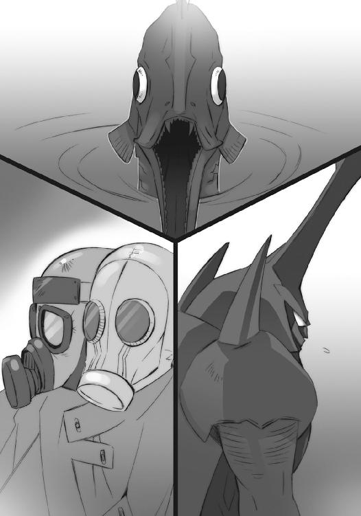
デカラビアも、一言で通信を終える。
《以上》
意識を戻した戦野には、既に敵軍接近の気配が、ひしひしと感じられる。
（堅守の上にも堅守、さすれば勝つ）
そう、決定事項としてデカラビアは断じた。
時が経てば、各方面から防衛線を構成していた部隊が逐次、援軍に駆けつける。また、ハボリム率いる西部方面主力軍も、ストラスがいる以上、早々に到着するはずである。最終的には、東西から取って返した全軍が、当地に集結することとなろう。
フレイムヘイズ陣営の持つ切り札は、ゾフィー・サバリッシュが率いている事実に鑑みて、現在『星黎殿』へと迫り来る軍勢、その一枚きりであることに、ほぼ間違いはない。これを使い切った時点で、彼らの敗北は確定する。
どちらにせよ『星黎殿』の位置が知れ渡ってしまったのであれば、これを守るためには大軍であるに越したことはなく、東西の戦線に貼り付けておく理由もない。最低限、彼らの盟主たる創造神〝祭礼の蛇〟が帰還するまで守りきれば、勝利は確定する。
（あの攻勢を、まずは一時、凌げば良いのだ）
普段にはないことに、自分を鼓舞するように、デカラビアは念じていた。
未だ封絶のない曇天の下、『星黎殿』を浮かべる深山幽谷の地で、決戦が始まる。
移動要塞『星黎殿』の空は、美しくも不可思議な、まさに絶奇の光景となっている。
星空を映す隠蔽の殻に大きく開けられた『秘匿の聖室』の破孔から、暗雲立ち込める真の空が覗いているのである。黒々とした雲から舞い込む雪は、要塞内に湧き立つ戦火によって、宙を踊る間に消え、また落ちては踏み躙られる。
兵営らしき部屋の、横に細長い窓から、これらの光景を見上げていたレベッカは、口笛を吹きたくなる衝動をなんとか抑え込んだ。声なき声でバラルに毒づく。
（こーいう、お互いの隙を窺うみたいな戦いは全っ然、好みじゃねえんだがなあ）
（仕様がない、全方向への打撃をばらまける〝哮呼の猊〟プルソンは、爆弾使いである僕らの、言ってみれば天敵みたいなもの......それに、できるだけの準備は終えたんだ、後は待つことしかできないさ）
（ま、特性だけじゃない、頭も地力も相当なモンだしな......フェコルーが守ってる要塞の中にまで、こんな手練を据えていやがるとは、ったく可愛げのねえ奴らだ）
できない舌打ちをまた我慢して、痛くなってきた尻を、もぞもぞと動かすに止めた。石造りの部屋の、壁の一部として出っ張った椅子には、当然のようにクッションもない。
彼女らが潜んでいる場所は、要塞上半分を占める城塞部の中腹、カムシンの戦っている場所と反対側あたりである。下から登ってくる緩やかな坂道を守る壁として立ち並ぶ箱型の廓、その一室だった。そこそこの大きさの者らが入れるように、天井は高く出入り口も大きい。
坂道は、さらに上の区画へと繋がる石のアーチ橋と繋がっているが、それも数十分ほど前まで行われていたプルソンとの激しい戦いで、中ほどから落ちている。その先はどうなっているか分からなかった。
爆弾の雨、音の衝撃波、力を尽くした激しい打ち合いを一頻り交わして後、レベッカ・プルソン両者は、遮蔽物を間に入れて距離を取った。それっきりの、膠着──というより、水入り状態である。
強力な攻撃を繰り出すには、相応の手順や間が必要だったが、双方とも戦いの最中で相手にそれを許すほど甘くはない。ただでさえ細かい射程や威力範囲の計算をせずとも良い能力を持つ者同士である。相手に調子を合わせて闇雲な攻撃を続けていては、徒に消耗を激しくするだけ......という計算による、これは必然の妥協なのだった。
そして、プルソンはそれっきり姿を隠して、数十分が経っている。
同じく、レベッカも兵営内で息を殺し、戦機の到来を待っている。
二人で一人の『輝爍の撒き手』は、じっくりと待つ傍ら、窓から遠く要塞の輪郭を染め上げる褐色の輝きと、砕けた星空の大穴から降りかかってくる雪へと目をやる。
（待ってる間に、状況の方が転換してくれたら、ちゃっちゃと動いたんだがなあ......ヴィルヘルミナの奴も、なにチンタラやってやがんだ）
（動くと言っても、優位な方向に、とは限らないよ？ 半分は自分で動かせる状況にあることを幸いに思うべきだよ......それに聞こえるだろう、あれが）
近くにカムシンによる流れ弾と思しき炸裂の音、遠くに彼を押し包んで湧き上がる喧騒、また、さらに遠く──『秘匿の聖室』の外から、響いてくる。
ドロドロと不気味に唸る、それ。
無数の物が動く轟音や、金属の擦過音。
鈍く腹を揺する地響きに、鋭く耳を突く爆発。
喜悦の喊声に苦悶の喚声、さらには狂気の漲る絶叫。
彼女らが久方ぶりに耳にするそれらは、戦争の調べだった。
（ああ、こりゃグズグズしてたら、肝っ玉母さんにケツ蹴っ飛ばされるな）
（これだよ、まったく）
事態の主導権はフレイムヘイズが握りつつある、だから焦らず待て、という意図の説明を、動く欲求への理由付けへと転化してしまう相棒の好戦性に、バラルは呆れかえった。
が、
（！）
（おや......？）
結果として、その状況は〝徒〟の側に、レベッカの望む方向への作用を及ぼす。
彼女の胸の前に浮かぶバラルの神器〝クルワッハ〟が、閉じた状態だった目を開いた。
（敵さん、あの音に釣られて来なすったぞ、こりゃあ肝っ玉母さん様々だ）
（向こうも、こんな状況でゆっくりする気にはなれない、か）
彼女らは、単に息を殺し潜んでいたわけではない。この兵営に落ち着くまでに、神器〝クルワッハ〟の力を以て、各所に自在法『地雷』を無数、仕掛けて回っていた（彼女には洒落たネーミングセンスというものが全くない）。閉じた瞳の紋章として一度は消えるそれらは、効果範囲内に何者かが侵入することで発動する。すぐには爆発せず、探知機として作用し、任意に爆破できるのが仕掛けとしての肝だった。
今、それらに反応がある。
神器〝クルワッハ〟の瞳がギョロギョロと巡って、反応の詳細について探る。
（お目当ての当人じゃなく、手下どもってのが、少々不満だな）
（どうやら〝哮呼の猊〟プルソンは、兵を使って僕らを燻り出す気だな......確実で、しかも逃れようのない良い手だ）
見た目こそ変わりはないが、周囲の廓に多くの守備兵が入り込んで包囲の輪を作り、それをジワジワ縮めている。気配や物音を隠すでもない、堂々と探し回っているのは、彼女らと兵を戦わせることで、プルソンに居場所を知らせるための示威行動だからである。
（そうは、させるかよ）
（早々に向こうが引っかかって、居場所を晒してくれれば楽なんだがね）
言いつつも、二人は好敵手の過失に、それほどの期待はしていない。
レベッカは目を閉じ、胸の前に浮かぶ〝クルワッハ〟に意識を集中させる。
数百と仕掛けた『地雷』で捉えた包囲の形は、要塞の斜面に沿った大きな円で、レベッカらは中心からやや外れた場所に潜む形となっている。流石にプルソンは良い勘をしていた。
守備兵らは、廓を一つ一つ、虱潰しにしながら進んでくる。一隊一隊の連携は、その練度の高さを窺わせるスムーズさで、急場の作戦でありながら滞りというものが見られない。
（ホント、可愛げがねえ）
思いつつ、『輝爍の撒き手』は戦いの火蓋を切る。
まず手始めに、包囲の一番外側、彼女の居る兵営から見下ろせる位置にある、守備兵が通り過ぎたばかりの場所から。目を閉じる形で、その存在を隠していた『地雷』の紋章が開くや中央に収束、爆発を起こした。
唐突に、背後からの攻撃を受けた守備兵らが吹っ飛ぶ。
（さあて、うまく引っ掛かってくれよ）
続けてレベッカは、同じ部屋で爆発を防いだ者の真後ろに、もう一つ、目を開いて爆発させた。さらに、その部屋にいた者らの全滅を確認する間も置かず、次々に起爆させてゆく。無秩序にではなく、全体で一つの曲線を描くように。俯瞰すると、それはまるで、燻り出された者が破壊しながら逃走を続けているように見えた。
（動いた！）
包囲が、その連続爆発に向かって輪を縮め始める。まだプルソン自身による攻撃はない。包囲の一角に加わっているのか、どこかから状況を監視しているのか──と、
（なんだ!?）
彼女が起こす爆発の先頭より少し先、石造りの渡り廊下が、ドズン、と重い響きを上げた次の瞬間、細かい皹を走らせ、乾いた泥のように潰された。
紋章越しに、その衝撃のすごさを感じたバラルが感心する。
（音ですらない衝撃波の砲か、すごいなあ）
（言ってる場合かよ！）
声なき声で怒鳴り返して、レベッカは爆発の道筋を変えた。先の衝撃波に泡を食って逃げるように九十度、折れ曲がらせて。今度は許容量の限り、周囲の紋章からも情報を受け取り、衝撃波の砲がどの方角から放たれたかを監視する──と、
（来た!!）
また爆発の先頭から、今度は先よりやや近く、衝撃波が炸裂した。食らった営舎が、即座に砂塵を吹き上げてぺしゃんこになる。
が、
（よし！）
その周囲の紋章から得た破壊の度合いから、レベッカは大よその方向に当たりを付けた。
攻撃の震源地は......当然のように彼女が『地雷』の紋章を仕掛けた範囲外、要塞の斜面に沿う屋根の中から一段高く盛り上がっている物見櫓。
目を凝らしたレベッカは、そこに一つの決定的な光景を認め、ニヤリと笑う。
（衝撃波、ってえのも）
櫓の古い石積みから、発砲の痕跡らしき砂煙が、薄く上がっていたのである。
（厄介なもんだ）
彼女は全身を力で満たし、本来なら輝き巡る光球を、密かに右腕へと集める。
（なあ!!）
窓へと伸ばした右腕、その指先から閃光を撒いて、特大の光球が五つ、迸り出る。それらは飛ぶ軌道の間に一つへと縒り合わさって、備える威力を凝縮してゆく。
物見櫓に命中、
した瞬間すら分からず、
砕いて爆ぜる大爆発が起きた。
桃色の輝きが辺り一帯を染め上げ、会心の笑みを浮かべるレベッカ、
「はは！」
その胸へと、まさに見えない大砲の弾をぶつけられたような陥没が、
「っ!?」
唐突に起こって、彼女は痛痒すら感じる間もなく、吹っ飛ばされた。
その、感覚としてゆっくり転回する光景の中に、全く至近、二階建ての楼閣に伏せている敵の姿が過ぎる。まるで狙撃銃、あるいは長大な吹き矢と見える、幾つにも直列させた長い喇叭の筒先を、こちらに向けている、黄金の鬣を持つ獅子頭の〝紅世の王〟の姿が。
（や、られたっ──畜生！）
物見櫓から発砲したのが間違いないとして、恐らくはそれも囮（実際には、遠距離操作した自在法『ファンファーレ』の一つだった）......プルソン自身は、その囮を狙う者を必殺すべく、抜かりなく監視を行っていたのである。
「──っか、は──」
レベッカは呼吸を詰まらせ無様に転げたが、胸を撃ち抜かれてはいなかった。
これは、プルソンの放った一撃が弱かったからではない。胸の前に浮かぶバラルの神器〝クルワッハ〟が、自身の起こす爆発から契約者を守る鎧として常に機能しているためである。
他にも、神器自体のある胸部が、その防御力の最も高い部分だったこと、力を高めて行った攻撃に相応して、防御力も最高の段階まで上昇していたこと、等の好要因も重なり、辛うじて即死を免れ得たのだった。
しかし、ただ、それだけのことだった。
胸に重傷を受けたことは事実であり、そのせいで反撃に転じる間がないのも、プルソンが即座に止めを撃ち放とうとしているのも、また事実だった。
（くそ、ったれえ！）
一向に起きない体の、腕だけを震えながら持ち上げるレベッカは、最後まで防御より攻撃を選んでいた。守ったところで敵は消えない。攻撃しなければ事態は変わらない。それだけの理由で、残った力を全て込めた攻撃を、選んでいた。
（駄目だ、二、三秒、間に合わ──ねえ！）
プルソンによる最後の攻撃が、筒先から発射される。
フレイムヘイズ兵団と『星黎殿』直衛軍は、暗雲と降雪の下で激突した。
時が経つほど不利になるフレイムヘイズ兵団は遮二無二、敵陣の突破を図り前進する。
後方に触れさせてはならない本拠地を置く直衛軍は、敵を阻もうと必死に踏み止まる。
双方、切り札たる精鋭の兵団と、本拠地を守る猛者からなる軍団である。
その接点は、想像を絶する力と意思の混沌と化していた。
「死にやがれ、この世を荒らす人喰いめえええ!!」
「抜かせ、この同胞殺しの道具どもがあああああ!!」
幾百もの炎弾が煙を引いて飛び交い、その数の分だけ爆発が起こる。人が獣が石ころのように千切れて吹っ飛び、石のように守って耐え抜く。巨人に蹴散らされ、巨人を叩き壊し、谷底に蹴落とし、谷底からの刃で貫かれ、叫んでは勝利に笑い、笑っては敗北に叫ぶ。
「大義も解さぬ下種ども！」「創造神に歯向かうか、この愚か者どもが──！」
「世界の敵がほざいたな！」「両界のバランスを乱す貴様らこそが──！」
死ぬ、死ぬ、死ぬ、誰も彼もが呆気なく死んでいく。男も女も人間も怪物も、大小人形異形を問わず、どんどん死んでゆく。命を磨り潰して小さな岩山一つを取り合い、命を懸けた奪取が次の攻撃で潰えて消える。踏み越えた者が、次の瞬間には踏み越えられ、消える。
「よくも、貴様アアアアア！」「ぎゃあああああ──!!」「おまえが、おまえがあ!!」
「殺す殺す殺す殺してやる!!」「はは、はっ、ひゃはああああ!!」「やりやがったな!!」
飛び交う炎と刃に目を焼き、死の恐怖と生の快楽に酔いしれる。奇声を上げて襲い掛かり、悲鳴を上げて逃げ惑う。声を途切れさせたら死ぬかのように咆え続け、最期に炎を血と吐いて死ぬ。声を漏らしたら死ぬように無言で殺し続け、命を拾っては荒い息を吐く。
「創造神〝祭礼の蛇〟万歳!!」「が、は──」「うぐ、うああ......」「だあああああ!!」
「フレイムヘイズ兵団に勝利あれ!!」「この！ この！」「あれ──？」「ひいいい!?」
激突は互いの先頭を宙に放り上げるほどに激しく、接点となった細い岩峰群は悉く砕け散った。降り積もっていた雪はたちまちに溶けて蒸発し、谷底には岩の塊と、すぐに燃え果てる死骸が転げ落ちてくる。戦場にはち切れる騒音は封絶なき空へと渡って、人には届かない。
この何もかもが絡み合って千切り合う最前線に、出城がある。
直衛軍の設けたものではない。彼らの本拠地は言うまでもなく後方中空に浮かぶ『星黎殿』であり、外界宿征討軍総司令官デカラビアが詰めている場所も、簡素な陣幕の内である。そもそも根拠地を隠蔽するのが前提だったのだから、無駄に目立つような建造物を築くわけもない。
つまりは、この地に来たばかりのフレイムヘイズ兵団が設けたものだった。
まるで水墨画とも見える、松を所々に生やした緑も薄い柱のような岩峰群の中、明らかな違和感として、西洋式の城壁が、岩と岩の間を差し渡すダムのように築かれている。押された討ち手らが再結集し、守る中で態勢を整え、再び出戦して行く、堅牢な前哨陣地である。
「そろそろ時間のはずだが......」
「彼女は自分のことを良く理解している。心配は無用だ」
この出城は、今、城壁の上から彼方を見つめているフレイムヘイズ兵団の幕僚長『犀渠の護り手』ザムエル・デマンティウスの能力によって、即座に建造されたものだった。彼はこれを可能な限り前線に設置するため、ほとんど無謀としか思えない突撃の先頭に立ち、通常の落ち着いた挙措や初老の身形に似合わぬ猛攻を、直衛軍の先鋒に加えている。結果として、この出城は敵陣のかなり奥深くに出現させることが適い、兵団はこの地点を橋頭堡に、動かぬ『星黎殿』を守るしかない直衛軍への圧迫を強めているのだった。
ザムエルは、胸から下げた銀杯〝ターボル〟に意思を表出させる〝吾鱗の泰盾〟ジルニトラに、あくまで落ち着いた声色で心配事を述べる。
「もちろん分かっているが、今度の戦は世の趨勢を賭けた大一番だ。彼女が我を忘れた深追いをする可能性は、ないとは言い切れまい」
「む......たしかに、総大将ゆえの使命感の強さが、この際は危険要因でもあるか。次の帰還後には、我らからも念押ししておくとしよう」
戦局は最初期の混沌を超え、フレイムヘイズ兵団による出城からの侵出を直衛軍が阻止し、直衛軍による出城の攻略を兵団が跳ね返す、という互いが本来持っていたはずの立場を、完全に逆転させた状況となっていた。
兵団は、隙あらばザムエルによる再びの突撃で、出城を前線に移動させることを目論んでおり、直衛軍は当然、それを警戒して十分な防衛線を敷いてこれを三方から取り囲んでいる。撤退できる方角を空けてあるのは、完全な籠城戦にして敵に死力を振るわせないため、という戦闘の常道に拠ったものだが、この地に切り込むような精鋭らである。退路のあるなしなど目に入らぬように、その士気は一向に衰えることなく、依然直衛軍への猛攻を継続している。
とはいえ、その猛攻が空回りし始めていることもまた、事実だった。
千軍万馬の将帥であるザムエルは、序盤の成功に慢心するどころか、敵軍の手強さに脅威すら感じている。
「彼女も加わった三度に渡る攻勢で、未だ一度も、この出城の前進を遂行できていない。知らず焦りを感じたとて無理はない。やはり直衛軍を率いる指揮官は、凡百の将帥ではないな」
「今までの通例ならば、〝渺吏〟デカラビアになるか。我らの優勢は見かけだけで、むしろ奴の方こそが総攻撃の準備に入っているように思える......一端攻勢を止めるべきか」
彼らは既に三度、この出城を起点とした本格的な攻勢をかけているが、敵陣の守りはあくまで堅く、突破の気配は見えない。どころか、寸時の油断にもつけ込んで戦力を殺ぎに来る。強大な〝王〟による独走もなければ、協調の欠落による部隊間の隙もない、敵ながら見事な一軍の統制ぶりだった。
それでも、二人は絶望していない。
「しかし、今ほど有利な状況もない。これを逃す手は、ない」
「うむ、これだけ近づいても、盟主とやらも三柱臣も姿を現さぬ。ヴィルヘルミナ・カルメルによる侵入作戦が功を奏し、城内で釘付けにされているのか、あるいは他に身動きできぬ理由でもあるのか......？」
降下の直前まで、各地の戦況を定時連絡として受け取っているが、やはり盟主と三柱臣は何処の戦場にも姿を現していない。本拠地の『星黎殿』ならば当然、将軍〝千変〟シュドナイを先頭に迎撃に出てくるだろう、と覚悟して攻めかかった彼らの前にも、である。ここまで迫撃されていながら、常識では考えられないことだった。
ザムエルは軍帽の下から一つだけの目を、遠いというほど遠くはない、しかし近くとも未だ手の届かない移動要塞『星黎殿』に向ける。その大きく砕けた『秘匿の聖室』内に浮かんでいるのは、銀枠で縁取られた不気味な黒い鏡のような物体。
「あれ、の線も濃い......『星黎殿』がこの期に及んで、後退どころか寸地の移動すら行わないのは、あれが動かせないから、ではあるまいか。とすれば、あれは要塞の移動力を殺してでも隠蔽したかった物、決して余人に晒してはならん物だったに違いない」
「その確認と破壊のためにも、まずは敵軍の突破だが」
言う彼らを、前方で瞬いた紫電の輝きが眩く照らす。
総大将『震威の結い手』ゾフィー・サバリッシュ帰還の合図だった。
その輝きを、正反対の方向から、見ている者が在る。
何処か深く沈んだ水底から、自在法越しに戦況を見つめているデカラビアである。
（さて、四度目の攻勢も跳ね返した......そろそろ攻め疲れが出る頃合、我が方の総掛かりで、あの忌々しい孤児の出城を砕き去ってしまうとしよう）
彼は手持ちの戦力を活用して、ただ守りに入るだけでなく、しっかり逆撃の準備も整えていた。勢いに任せて突破を狙う敵は、一旦その足を止められてしまうと脆いものである。
現状、フレイムヘイズらの精神を、密かに、辛うじて、支えているザムエル・デマンティウス──欧州に引き篭もっていれば良いものを、と苦々しく思う長年の宿敵──の手による出城の陥落が、その士気崩壊の一里塚と言えた。勝たねばならぬ戦いへと性急に挑む異能の討ち手らは、同時にその不利にも敏感なのである。敗北の気配が僅かでも脳裏を過ぎれば、打つ手にも焦りが生じ、焦りは失策の材料として降り積もってゆくことになる。
（あの出城さえ破壊すれば、まず、目処も付こうか）
どこまでも冷静に戦場の心理を見据えるデカラビアは、総反撃のため本営の後方、山地内に僅か広がる平野部（実際は湿地帯だが、冬には一面氷原となる）へと集結させた一軍の中に、自在法を出現させた。
「戦闘準備は、完了しているか？」
人型の仮面をつけた巨大な豹と見える〝紅世の王〟は、自在法に向けて返礼する。
「は、滞りなく。いつでも進発のご命令を」
「攻撃目標は、敵が山間に築いた出城──」
デカラビアは、命令を中途で切った。
兵らがザワザワと騒ぎ始めているのが目に入ったからである。総反撃のため揃えた精兵らの許し難い態度に、少量の怒りを込めて問い質す。
「なにか」
「は、無様を晒しまして──貴様ら、一体なにを騒いでおるか!?」
自己の責任と、配下に叱声を飛ばした〝王〟は、その彼らが一様に奇妙な行動を取っていることに気が付いた。釣られるように、上を見る。
「......？」
最初は当然、分からない。
が、数秒、奇妙に騒ぐ胸と見渡す感覚の中で、一つの現象の在ることが分かってゆく。
（大きく、なっている）
空に開き、内部の騒乱を示す煙を吹き出す破孔──言うまでもない、『星黎殿』を覆う『秘匿の聖室』。その上部の欠けた見えない球体が、大きくなっている──否、
（降りて......落ちて、きている!?）
同様に気付いた兵らが、逃げ散り始めている。
頭上に浮かんでいた『星黎殿』が、あるはずのない降下を始めていた。まるで彼ら、反撃のため集った軍を狙い澄ましたかのように。
「デカラビア様!?」
「退避せよ」
全く分かりやすい一言のみの命令。自在法が消えるに当たって、そこに籠められていた力を加速の自在法として周囲にかけていったのは、せめてもの心遣いか。
それらを思う前に〝王〟は同じく命令を、
「退避─！ 全軍退避─!!」
届く限り大きな声で放つや、存在の危機に反応する一個の生き物として疾走を始めた。その背後、というより頭上には、既に巨大すぎる質量の迫る、異様な空気の鳴動があった。
彼らを遠く見る場所に再び自在法を浮かべたデカラビアは、まさしく驚異的な光景に、五芒星の中心にある目を一杯に見開く。
直下の平地、アリの群れのように逃げ散る軍勢を『星黎殿』が押し潰していた。落着の衝撃が轟き、下敷きになった〝徒〟らの残滓たる炎の爆発が、雪の戦野を明々と染め上げる。
「なん、という」
流石のデカラビアが呆然となった。
のみならず、『秘匿の聖室』内に匿われていた物、中空に固定されていた物、彼らにとって最も重要な物が、『星黎殿』の降下によって、その姿を世に晒していた。先の破孔も問題とならない、殻の天頂部を突き破ってゆく形で。
「馬鹿な」
砕け散る『秘匿の聖室』を輝く豪雨と降り撒いて、銀枠で縁取られた巨大な黒き鏡──［仮装舞踏会］秘中の秘たる『神門』が、雪空に取り残されるように浮かび上がった。
全てが終わって、レベッカは信じられないように自分の顔の傍らを見た。
「......」
範囲を絞って威力を高めた衝撃波による穴が、ほとんど刳り抜くように開いている。やはりプルソンは、止めとして頭部を狙っていたのだった。
「......あぶな、かった」
事情は不明だが、カムシンによる礫の着弾さえ問題にならない、圧倒的な衝撃が要塞全体を襲い、まさに止めを刺そうとしていたプルソンは、狙いを外した。
そしてレベッカは、残った全力を攻撃に注いで、しかし数秒彼に遅れた彼女は、まさにその遅延によって、衝撃の直後に逆撃を撃ち込むことができた。
「すまねえな、プルソン」
結果、生死は分かれ、プルソンは鐘楼の上で砕け散り、レベッカは倒れたまま生きている。
「まあ、なんだ」
感慨よりも訪れた空白への対処に惑うように、『輝爍の撒き手』は呆然と声を零した。
「こういうことも、あらあな......気にすんなよ」
「なんて、言っている場合じゃあないぞ。衝撃の混乱から立ち直った兵士らが彼の死を知ったら、君を八つ裂きにしようと一斉に襲いかかってくるだろう」
バラルののんびりした、しかし的確な指摘に、
「分かった、よ......っと、ありゃ？」
レベッカは憎たらしげに笑って身を起こそうとするが、果たせない。プルソンの置き土産、胸への直撃弾は、それほどの威力だった。
「こりゃ、しばらく運試しだな」
もう一度倒れて、レベッカは回復に努める。
残された瞳の紋章で、せいぜい守備兵が近づいてこないか警戒するしかない......そんな間抜けな仕儀になった自分を、自分の悪運の強さを、嘲笑ってみた。
戦傷も生々しい、薄煙と粉塵舞う『祀竃閣』で、
「これで、フレイムヘイズ兵団への、我々にでき得る援護はし尽くしたでありましょう」
「義務完遂」
ヴィルヘルミナとティアマトーは声を交わした。
彼女らの前には、一旦ひっくり返った後に戻された大竈『ゲーヒンノム』がある。今、その灰は『星黎殿』を囲む山野、混沌の極みにある戦場を形作っていた。
ラミーと別れたヴィルヘルミナはこの恐らくは〝嵐蹄〟フェコルーが詰めていたはずの、しかし今や不在の司令室を発見し、部屋への侵入者を排除しつつ操作方法を探っていたのである。同じ型の宝具である『天道宮』と似た方式のはず、と『ゲーヒンノム』を探ってみると、操作自体は確かに、『カイナ』を介したそれと、ほぼ同様のものだった。
が、困ったことに機能が多岐に渡りすぎ、複雑すぎ、煩雑すぎて、全ての把握には到底至らなかった。『天道宮』とは違って、様々な使い道を順次追加していった結果としても、やりすぎではないか、とヴィルヘルミナが僅か前任者への同情を抱いたほどである。
それでもなんとか、移動に関する部分だけは探り当て、この戦機に......フレイムヘイズ兵団にとって最大のチャンスを開く一撃を見舞う戦機に、役立てることができたのだった。
反攻戦力と思われた後方の一団（うまいことに......あるいは当然のこととして前線から後方の『星黎殿』付近に、それらは集結した）は一挙に殲滅され、『星黎殿』直衛軍は大混乱を起こしている。いかに有能な将帥とて、これを収拾するのは容易なことではないだろう。ゾフィーたちならば、この機を逃さず上手く対処してくれるはずだった。
「あとは、我々の方を」
「無事面会」
ヴィルヘルミナは『星黎殿』の砕けた殻の中、上半分を占める城塞部の中心近くにある表示を見やった。そこに表示されているドーム状のものは、おそらく封絶。
あの中で、カムシンでもレベッカでもないフレイムヘイズが、戦っている。
「では、お迎えに上がるのであります」
「丁重奉迎」
助けに行くのではない、ただ、そうなった者を迎えに行く。
勝敗など、端から問題ではない。
彼女が、力を取り戻した『炎髪灼眼の討ち手』が、負けるわけがないのである。
分かる者にしか分からない、大きく弾んだ足取りで、『万条の仕手』ヴィルヘルミナ・カルメルと〝夢幻の冠帯〟ティアマトーは、かつての愛し子、今は一個のフレイムヘイズとして独り立ちした少女の許へと向かう。
封絶の中に、外界からの衝撃は伝わらない。
あくまでこの場の勝負は、この場の状況のみによって構成されていた。
即ち、大伽藍の中、柱の陰から次々と現れるウアル......埴輪型の鎧という姿の〝紅世の王〟を、『炎髪灼眼の討ち手』シャナが悉く返り討ちにしている、という状況である。
ウアルは、自分が驚嘆の域を既に超え、明らかな恐怖に囚われていることを感じていた。
（信じられん......なんなんだ、こいつは）
砕かれた鎧の残滓たる桧皮色の炎が床を埋め、空に火の粉が舞う中、より強い紅蓮の煌きとして屹立する、大太刀と黒衣のフレイムヘイズは、もう構えさえ取っていない。その動作に迷いはなく、ただ『これでは駄目』という失望感だけが、身の周りに漂っていた。
（まるで......まるで、吸い込まれるようだ）
彼女は、向かってくるウアル、鎧の群れとして攻撃する〝王〟の、最初には確かにあったはずの手加減を、舐めていた気の緩みを、どんどん引き剥がし、全力で、必死に、飛び掛からせている。飛び掛からせて軽く斬り、時折思い出したかのような強い斬撃で砕く。
（吸い込まれ、取り込まれる......これはまるで、そう、供儀だ）
そしてさらに、より全力で、より必死に、飛び掛かってくることを求めていた。攻撃の手管への物足りなさ、行き交う刃への無頓着さ、この場の事象をどこか別の場所から眺めているかのような平静さが、ありありと見て取れる。強さを楽しんですらいなかった。
（私は今、魔神の生贄にされているのではないか）
ウアルがどれだけ死力を尽くしても、彼女は易々と付いてくる。というより、振り絞った全力を階段として踏み、より上に登ってゆく。相手を強くするため全力を振り絞っているかのような徒労感ばかりが、彼の心身に降り積もっていた。
（この天罰神の契約者に、今まさに喰われて、いるのではないか）
いつしか、徒労感はそんな妄想に変わっていた。重要人物を取り押さえるどころではない、目の前の脅威を取り除くことだけを思い、遂にウアルは格闘での戦いを放棄する。
「やはり、貴賓としての扱い程度では、抑えられぬ様子......しからば、我が全力を以て、お相手いたします。どうか、お亡くなりなさいませぬよう」
奇妙な口上を置くや、全ての鎧が床を蹴って距離を取った。その空っぽの内に桧皮色の炎が巻いて幾千万もの小さな塊となり、飛び出す。塊はすぐに蜂の形を取り、伽藍の内に黒々と広がりうねる黒い雲を作り出した。
シャナはこれらを灼眼で軽く見回す。幽閉される前とは比べ物にならない迸る力を、鋭く下ろす足に、強く支える体に、熱く燃える腕に、深く広がる脳裏の内に、漲らせて、思う。
（次は自在法、か......なんとか、バランスを崩さないように気を付けないと）
彼女の心は、ここに在りながら、ここになかった。己が身に齎された莫大な力を統御することで、頭が一杯になっている。目の前に次々と現れる〝紅世の王〟を斬り下げ、また打ち砕く作業は、ほぼ反射のみに頼って、意識の大半をそちらへと振り向けていた。
（アラストールが自分から戻ってこない今、誰にも頼ることはできない）
戦いに面し、欲し求める心のまま引き出された力は、底も果ても見えず、全体をどう統御すれば良いのか、俄かには見当が付け難い。そこに在るものを効率よく生かす、という、これまで彼女が行ってきたようなやり方で、到底扱いきれるものではなかった。
（私一人でやらなきゃならない......『炎髪灼眼の討ち手』として）
ただ、この巨大な悍馬のような力の制御に苦心しながら、どこかで冷静に、全体へと把握の手を伸ばしつつあることも理解している。扱いに困ってはいるが、扱えないわけではない......そんな、幾多の戦いの中で掴んだ、自分への確かな感触があった。
（力の扱いを、初歩の初歩から思い出せ）
フレイムヘイズとして契約する前、まだ人間だった頃、彼女は『炎髪灼眼の討ち手』の具体的な力の在り様について、教わらなかった。これは、余計な先入観を与えず、自身が思い描き憧れる姿になるべき、という教育方針に拠っている。
（フレイムヘイズの力は『契約者が持つ強さのイメージと〝紅世の王〟の力の融合によって顕現する』......とするなら）
密かな苦闘の道に、光明が差した。
思考が透き通り、冴え渡ってゆく。
見出したものは、
（私にとっての『炎髪灼眼の討ち手』とは、どういうもの？）
全く単純な疑問。
その疑問を胸に、改めて己の在り様について、念じる。
（──炎髪──）
舞い咲く火の粉に、塊のような炎が混じり、溢れ出た。
（──灼眼の──）
煌く双眸が輝きを増し、異様なほど視界が澄んでゆく。
（──討ち手──）
振るわれる大太刀の軌跡を、強い紅蓮の光がなぞった。
（──それは──『私』──）
取り囲んでいるウアル、鎧と蜂の群は、異様なものを目の当たりにする。
戦っている相手が、その最中で、劇的に変容して行く。
見た目には少女そのままの、怪物へと。
否──それは、魔神。
（──私にとっての強さ、在るべき力の象徴は、私自身──）
かつて得た答えを、今在る己で顕現させる。
地に振り下ろされる足は、静かに速く重く、
髪から溢れ出る炎は周囲に火の舌を伸ばし、
双眸の煌きは揺らがずに敵群の動きを追い、
大太刀は紅蓮の色を帯び、どこまでも鋭く、
フレイムヘイズは、己が力を、遂に捉える。
「──そう──『強い私』こそが──『炎髪灼眼の討ち手』シャナ──!!」
空気が一瞬、彼女に集まり、破裂した。
「っな、ぬ!?」
鎧のウアルが一斉に驚愕の声を上げ、思わず剣で目を守る。蜂の群は熱波に飲まれ、多くは消し炭となり、それを免れた一部も壁際まで押しやられた。
破裂の中心に在って呟くフレイムヘイズ──『炎髪灼眼の討ち手』シャナが、
「成った」
小さな紅蓮の恒星となったかのように、濃密度の炎を纏い、猛烈な熱と光を撒き散らしていた。流麗の炎髪は中ほどから溶け解け、黒衣を上から緩やかに包む二重の外套とも見える形に展開されている。
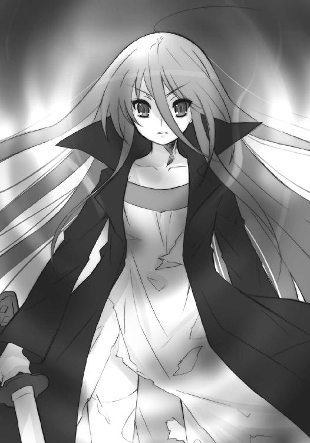
「ふうぅ──」
凄まじい力に満ちた火の粉を混ぜた吐息を零し、シャナは双眸を閉じ、また刮と開いた。
と、その挙措に応じて、頭上の僅か背後、轟と煌く一つ眼が、大きく燃え上って現れる。
（見える）
今までは気配・流れるイメージとして感じ取っていた〝徒〟の存在・自在法の構成が、明確な形や動きとして見えた。その視覚が定かな、信を置けるものであるか確かめるため、大太刀を握っていない方の手に力を籠め──一声、
「はあっ!!」
掌を真横に突き出した。
その動作の先、瞬時に渦巻いた紅蓮の炎が巨大な腕の形を取り、二列の太い柱とその向こうの壁を、まるで積み木を崩すように易々と押し破る。炎として爆発したのではない、炎を媒介に具現化させた実体としての打撃である。
その向こうに在った者ら......壁を隔てた廊下に集結し、一斉に壁を抜いて襲い掛かろうとしていたウアル配下の守備兵らは、配備に着こうと駆けていた先頭に、この圧倒的な打撃力を受け、壁諸共に潰されていた。残りの兵らは、慌てて後退する。
戦果を確かめ、炎の腕を消したシャナは、
「──『真紅』──」
今在る己によって行使された、紅蓮の炎で具現化する力を『真』の『紅』と命名した。これは別段、格好を付けているわけではない。振るう力の名を明確な認識への助けとする、という鍛錬の監督者よりの提案に倣うは今、と判断しただけである。当然、その面には優越や陶酔に類する弛んだ笑みなど、一片とて浮かんではいない。どころか、すかさず反対側の壁へと、今度は大太刀を持った方の手を、少し意識して振った。
「ふっ！」
先とは違い、腕のように瞭然たる形を取らない、横に広がった炎の放射である。炎弾とは比べ物にならない、ぶち抜くための指向性を与えられた流れは、先に倍する本数の柱と、数倍する壁面、奥に配されようとしていた〝徒〟らを焼き砕いた。
「──『飛焔』──」
次は、単純に見た目の印象で付ける。
そうして再び、伽藍の内を見渡す灼眼と、後背で大きく燃え上がる目を同調させ、一瞥のみの探査を終えた。さらに、この新たな力の新たな名を、契約した〝紅世〟真正の神が持つ権能から導き出す。
「──『審判』──」
明瞭な視界は、未だ距離を取っている鎧の群れ、柱列の奥で捕縛の網、あるいは防御壁らしきものを張り巡らせようとしている蜂の大群、そしてなにより、これら自在法の傀儡を操っている者の位置を、他でもない自在法の経路を辿って暴き出していた。
最初に鎧が入ってきた大扉の外、やはり蜂の大群で形作った気配隠蔽の囲いの内に在る、緩い衣を纏った直立するヒトコブラクダ......〝駝鼓の乱囃〟ウアルの本体である。
その方向へと灼眼の視線を据え、大太刀へと両手を添えた魔神の化身の姿から、
「はっ!?」
「なに、を？」
「やめろ!!」
「待──」
鎧のウアルらは企図するところに気付き、恐慌で恐怖を飛び越し、襲い掛かる。
が、シャナは傀儡には灼眼の一顧だにくれない。飛び掛かった鎧や蜂の大群を、身に纏う二重の外套のようになっていた炎──名付けられたとおりに呼ぶとすれば『真紅』──で弾き飛ばし、あるいはその通過とともに焼き払う防御の中、
自然な構えから大太刀を前へと突き出し、先と同じく、権能の一つを唱え、発動させる。
「──『断罪』──」
大太刀の切っ先から炎が、巨大な刃として顕現した。
剣筋に沿って一直線、寸毫の狂いもなく床を両断・蒸発させてゆく高熱の力は、かつて紅蓮の大太刀と称していた頃とは比較にならない堅確さを持って、伽藍の中を突き進む。
そして一瞬、縦に長い大扉を切り裂いた先に潜んでいたウアルの本体を、
「ッ !? 」
対処の自在法を展開するどころか、断末魔の声を上げる間さえ与えず、消し去った。
同時に、まだ残っていた鎧、蜂の群れも、一気に桧皮色の炎と弾けて、散り果てる。
シャナは、それらには最早気を留めず、
「はあ──っ!!」
気合を籠めた声とともに、紅蓮の刃『断罪』を直上へと振り上げた。その軌跡のまま、伽藍の天井に描かれていた黒い大蛇と〝徒〟のフレスコ画をも切り裂き、
「──っだあ!!」
一撃、頭上から爆砕する。
降り注ぐ瓦礫を『真紅』の衣で防ぐこと数秒、
（行こう）
フレイムヘイズ『炎髪灼眼の討ち手』シャナは、衣を大きく広げて紅蓮の双翼に、またそれを噴射炎に変え、頭上の破孔として開かれた道へと、眩い炎を引いて、発った。
（悠二と向き合うために......この、本当の私として）
残兵が引き継いだものか、未だ残る封絶を、まるで己を閉じ込める世界を超えるかのように抜け、速く、強く、高く、輝いて、少女は飛び立つ。
未だ戦火燻る『星黎殿』の一角から飛び出した『炎髪灼眼の討ち手』シャナの手首に、軽くリボンが巻きついた。それに引かれて人影がもう一つ、傍らに浮かぶ。
「お迎えに参上したのであります」
「再見大慶」
言う二人、『万条の仕手』ヴィルヘルミナ・カルメルと〝夢幻の冠帯〟ティアマトーに、シャナは振り向かず前を見て、しかし最高に明るい笑顔で言った。
「ありがとう」
その、誰をも頼らない確たる姿に、ヴィルヘルミナは一人の女丈夫、かつての親友の姿を幻視し、そこはかとない寂しさに囚われる。すぐに気付いて、僅か首を振り、
（私の方がこんな様では）
（尋常一様）
いつものこと、とからかうパートナーを、頭をゴンと殴って制することで、自身も少女への甘えを払った。それら一連の遣り取りを隠して、二人は『炎髪灼眼の討ち手』に糾す。
「状況については、どの程度理解を？」
「当方把握」
シャナは頷き、
「まずは全員、集めてから情報を総合しよう」
双翼の噴射を要塞の一角に向けた。そうして頭上に、炎の目『審判』を出現させ、静まりかえっているかに見える戦場の中から、一人の知友を見出す。
倒れているが、消えていない......ということは、生きている。彼女を囲んで──というより探してか、多数の守備兵がゆっくりと進み、今まさにその所在に差し掛かろうとしていた。
「いけない」
双翼の噴射を強めたシャナはヴィルヘルミナ諸共、急降下へと入り、その前傾姿勢に合わせて大太刀『贄殿遮那』を、斜め下から逆袈裟に斬り上げた。
「っだ!!」
太刀筋に沿って一線、炎の刃『断罪』が飛び、守備兵の先頭を脳天から消し飛ばす。
要塞に火線を刻み込む、その力の凄まじさに感嘆するヴィルヘルミナを連れて、シャナはさらに加速、火線によってできた鋭い溝から数メートルと離れていない兵営の、天井を破って中へと飛び込んだ。そこで密かに回復を図っていた『輝爍の撒き手』レベッカ・リードが目を丸くするのは無視して、
「お願い」
一言だけ傍らに求める。
「了解であります」
「応急手当」
ヴィルヘルミナらは、それだけで容易に意図を察し得た。続いて着地するや、リボンを幾条か伸ばして横たわるレベッカらを掬い上げ、重傷と思しき胸に包帯代わりと巻きつけ、さらには擬似的な担架として宙に持ち上げる。
「ぃよう......派手にやってんじゃねえか、贄殿の」
この救出に、未だ身動き不自由なレベッカは、殊更な礼ではなく、明るい称賛で答えた。代わりに、胸の前にある神器〝クルワッハ〟から言うのは〝糜砕の裂眥〟バラルである。
「やあ、かたじけない。助けに来て助けられるとは、みっともない限りだよ」
「そんなことない」
シャナはどっちへの答えか、一言で返し、今度は照れくさそうに微笑む。そうして一転、ヴィルヘルミナに確認の強い視線を送ると、再び双翼を噴射に変えて急速上昇した。
ようやく驚愕から覚めたらしい、プルソン配下の守備兵による炎弾が、要塞の各所から追い討ちの対空砲火として幾十と撃ち上げられる。
鋭い渦を描いて飛ぶ中、これらへの逆撃に移ろうとしたシャナを、
「最後まで、やらせろよ」
担架に寝そべっていたレベッカが制止した。ある程度回復していたのか、ゆっくり半身を起こすと、胸元の神器〝クルワッハ〟を、親指にかけて撓めていた人差し指で、
「仕掛けた花火を残したままじゃ、寝覚めが──悪い」
キン、と弾く。
瞬間、残されていた自在法『地雷』の全てが、一斉に点火した。三人の飛び行く足下満場、数十からの爆発が湧き上がって、守備兵らを熱と衝撃で薙ぎ倒す。要塞の一郭に、まさに死の花として桃色の閃光が咲き乱れた。
「はーっはーっ!! ブラーヴォー！ エウーゲ！ ターマヤーッ!!」
置き土産の成果に快哉を叫んだレベッカは、
「自分がいちゃ、あそこまでできねえからな──っ痛、か、かか......」
騒ぐ中で再び激痛に襲われ、胸元を掴んで悶絶する。
「さあ、元気な怪我人は放っておいて、最後の一人と合流しよう」
呆れつつものんびりした口調でバラルが言い、ついでとブレスレットに戻った。
言われるまでもなく、シャナは進路を褐色の爆発がある方角に向けている。
山と見紛う構造物をぐるり半周ほどすると、頂近く、倒壊した塔の土台らしき場所に、変わらず傲然と立つ瓦礫の巨人が、ようやく目に入ってきた。
これに向かい、中空を貫いて飛ぶシャナへと、未だ組織的な戦闘を繰り広げている守備隊からの一斉攻撃が仕掛けられる。炎弾から矢、自在に動く投槍までが、両者の合流を阻まんと、高密度の火線を集中させた。
シャナは格好の的となる空中の突進から、失速したかのような急降下へと進路を変える。
「ヴィルヘルミナ、レベッカ・リード、ちょっと強引に行く！」
「了解であります。レベッカの保持にはお気遣いなく」
「気遣ってくれ、頼むからぁ──うわおっ!?」
三人しての自由落下が、双翼の爆発的な噴射により加速した。迫り来る、戦火に押し砕けた石畳への激突寸前、降下時以上の推力で逆噴射がかかり、地表で爆発したかのような、紅蓮の炎が破裂する。
その膨れ上がる輝きの中から、シャナは地表擦れ擦れで飛び出した。彼女の手首に絡めたリボンに引かれるヴィルヘルミナ、さらに繋がれた担架上にあるレベッカは、
「っは！」
「んぎゃ!?」
何度か地面に跳ねるのを、ブーツの底を削って、また担架ごと引きずられて、それぞれ後に続く。あるいは、続かされる。
シャナが行く手と見据えるのは、カムシンが歩みを続けている要塞の上部。
そこに至る通路を高速で、アクロバット飛行のような姿勢制御の離れ業で、時には噴射対象の横壁を粉々に吹き飛ばす力技で辿ってゆく。行く手に飛び出す大小の〝徒〟を斬り払い、飛行を阻まんとする自在法の発生を『審判』で察知しては事前に潰し、時間にして僅か数十秒、
「──『儀装の駆り手』！」
巨人の足元から顔の正面へと、再び飛び上がっていた。
奪還対象の姿を認めた『儀装の駆り手』カムシン、および〝不抜の尖嶺〟ベヘモットは、
「ああ、ようやく......来てくれましたね」
「ふむ、待ち遠しい切り上げ時の到来じゃの」
彼らにしては珍しい、心底から疲れた様子で答える。
不審に思った三人にして五人は、瞬きの間に気付いて、それぞれの反応を見せた。
「なに、これ？」
シャナは単純に、見た目への不審から訝しげに言い、
「......いったい、どのような趣向からの装飾でありますか」
「奇怪千万」
ヴィルヘルミナとティアマトーは、困惑から相手に尋ね、
「ぶはははっはは！ ひ、は、腹、胸が、痛え、は、うぐはっ」
「ははあ、教授の防衛機構か。それにしても、また、ははっ」
レベッカとバラルは、事情を知る者として大いに笑う。
戦火越しの遠目には分からなかったが、瓦礫の巨人は全身に、デコレーションを施されていた。頭に疎らな金髪を生やし、体に派手な蛍光色のペンキを塗りたくり、両腕には銀色のモールを絡みつかせ、果ては底の抜けた靴下まで履いている。
カムシンとベヘモットにとっては、猛烈に光って視界を幻惑する鬘を毟り取ったり、ペンキに誘導され飛んでくる数々の投擲武器を弾き返したり、銀色のモールを高圧電流に晒される中で引き千切ったり、靴下に両足の制御を奪われそうになって慌ててこの底を踏み抜いたり、と装飾の全部が全部、苦闘の跡だったのだが、いちいち説明する気にもなれない。せめて幻影を見せられた鼻眼鏡を叩き壊しておけただけマシかもしれない、と思うことにした。
「ああ、それより、これからのことですが......」
「ふむ、幸い、仕掛けを操っていたらしい指揮所は潰したところ、少々の猶予がある」
二人は言って、唐突に、
「──『儀装』、解体」
「カデシュの血脈、輪旋」
瓦礫の巨人を崩す──否、別の形へと変化させる。
宙に結跏趺坐するカムシンを入れた、鼓動する褐色の炎『カデシュの心室』を中心に、同じく褐色に燃える『カデシュの血印』を刻まれた岩塊が、恐るべき勢いで球型の壁を形作るように乱回転していた。いわば、膨大な質量と速度によって形作られる障壁である。
「ああ、これで数分は持たせられるでしょう」
「ふむ、早々に協議を行うとしようかの」
シャナと同じく、彼らも互いの情報を総合する場を設けるべき、と考えたのだった。
まず、ヴィルヘルミナら三者が、ここへの侵入に至るまでの経路、分かれて以降の各々の戦い、その中で得た情報を、各々簡潔に語った。最も驚くべきは、ヴィルヘルミナが要塞深層部で目撃したモノだったが、その意図についての推測は当面、後回しである。
次に、シャナが自身の脱出への経緯（ヴィルヘルミナは顔を真っ青にして、カムシンは平然と、これを聞いた）から武器の帰還、戦いから合流までを、同じく簡潔に語り、続いて〝祭礼の蛇〟坂井悠二と三柱臣の行動、頭上に浮かぶ『神門』について解説した。
その上で、シャナはハッキリと己の行く先を告げる。
「私は、このまま『天道宮』へは脱出はしない。戦争にも加わらない。悠二を追う」
創造神〝祭礼の蛇〟の本体をこの世に再び呼び戻す、という慮外の危機。
代行体や三柱臣の不在、東西への圧迫、静止し身を潜めていた『星黎殿』、浮かぶ『神門』、全てがこの断片であったことを、他の一同はようやく知らされ──黙考幾秒、
「ならば、私もご一緒させて頂くのであります」
「戦力必須」
「ああ、外の戦いよりも、あるいは急務かもしれませんね」
「ふむ、算段よりも勘、という次元の話じゃがな」
「当然、オレも行くぜ。今さら遠慮も仲間はずれもなしだ」
「まあ、それが妥当な判断だろうね」
全員一致で同道が決まった。
シャナは礼を言わない。
ただ強く頷き、行動を指し示す。
「行こう──『神門』へ」
乱回転して障壁となっていた無数の岩塊が突然、その勢いのまま飛び散った。
包囲していた守備兵らが逃げる間もなく、それらは全周に巨重の礫としてばら撒かれる。爆発こそしなかったが、速度と重さだけで、十分以上の破壊力があった。
その跡、濛々と大きく緩く立ち込める噴煙の中を、一つの輝きが舞い上がる。
炎弾の追随を振り切って昇るその輝きは、大きく開いた破孔から『秘匿の聖室』を一息に脱し、『星黎殿』の落着によって混乱の極みにある［仮装舞踏会］直衛軍、今ぞ勝機と攻めかかるフレイムヘイズ兵団、双方噛み合う戦場の上を、天を分ける流星のように過ぎり奔った。
と、その尋常ならざる存在感を放つ、流れる太陽とも見える星から、
「中天に浮かぶ、黒き鏡の名は『神門』!!」
少女の声が両軍将兵の頭上に朗々と響き渡る。
「創造神〝祭礼の蛇〟をこの世に帰還させるため敷かれた道への入り口！ 代行体と三柱臣は彼の中、旅路の途上にある！ 我らはこれより、その阻止へと向かう!!」
秘中の秘たる機密事項を、隠しようもない形で暴かれて驚くデカラビアら、
現在の戦況に隠されていた様々な謎を解かれ、喜色を浮かべるゾフィーら、
皆の見上げる空を一線、流れ征く星は、供を幾人か連れ、その『神門』へと突入した。
光が唐突に途切れ、微か舞い咲く火の粉の色は──天罰神の契約者たる身を示す、紅蓮。
今こそ誰もが問い、やがて広まる、その称号は──『炎髪灼眼の討ち手』。
そして、誰かが口の端に乗せ、恃んで呟く名は──シャナ。
エピローグ
巨大な道に留まり、彼は呟く。
誰にともなく、自分へと呟く。
「奴とは、これまで幾度となく戦い、もはや互いに手の内は知り尽くしている。他でもない、先だっての戦いでは、我が力の全てを暴かれ、破られた、と言っても過言ではないだろう」
見上げる先は、どこまでも続く大地。
見下ろす先も、どこまでも続く大地。
「だが、その知り尽くしている、という点にこそ、まさに付け込む隙があろう。なにより、奴らは俺が討滅されたと考えているはず。一撃目で必殺の刃を打ち込むことさえ、可能だ」
不思議な場所を望んで、不思議な〝徒〟のことを思い出す。
来るとしたら、あのフレイムヘイズ......あの〝徒〟の、仇。
「あれから、思わぬ仕儀で神たるモノとも出会えたが、その大きな力に羨むべきなにが在るのか......こうして警護の名目で近くに立ち、接し、観察しても、俺にはついぞ分からなかった」
自分のことを羨ましいと恨んだ、小さな小さな〝徒〟を思い出す。
なぜそこまで自分が気に掛けているのか分からぬまま、思い出す。
「その神は、世界を振り回す渦の中心に在り、何者も無視できない......お前の言った通りの存在だった。だが、あれのなにが羨ましいというのだ。俺は、どこまでもお前が分からない」
ほんの気紛れから共に旅し、その代償として受け取った、粗末な短剣を見つめる。
気後れせず自分に突っかかってきた無謀な、今はもういない者の形見を見つめる。
「ともあれ、俺の宿敵、お前の仇、いずれもが、この地に来ることを願おう。今度こそ、互いに逃走の余地はあるまい。殺してから、改めてお前のことを考えよう......〝戯睡郷〟メア」
そして、彼は捉えた。
迫り来る敵の気配を。
想いは燃え、力を奏でる。
奏でる力は、邂逅を目指す。
世界は、動乱の果てに、交差路を舞わす。
あとがき
はじめての方、はじめまして。
久しぶりの方、お久しぶりです。
高橋弥七郎です。
また皆様のお目にかかることができました。ありがたいことです。
さて本作は、痛快娯楽アクション小説です。今回は、遂にフレイムヘイズと〝徒〟両陣営の戦端が開かれ、どこもかしこも騒擾の渦に巻かれます。次回も、戦いは続きます。
テーマは、描写的には「兵乱と開眼」、内容的には「じぶん」です。小は一個人から大は集団まで、溜め込んでいたものと備えていたものが一挙に弾け、激しくぶつかり合います。
担当の三木さんは、顔色の優れぬ人です。医学的には問題ないというのに、会う人皆が心配します。今回は、その手のシーンの有無自体を賭け、三種の読みを極めたジャンケ（以下略）。
挿絵のいとうのいぢさんは、切々たる感情を絵に込められる方です。前巻の表紙のシャナ、カラーでのヘカテーが訴えかける姿には、彼女らの息吹さえ感じられました。この度も拙作への甚大なる御助力をいただけたことに、深く深く感謝いたします。
県名五十音順に、愛知のＮ村さん（頑張ってください）、Ｏ田中さん、Ｙ本さん、愛媛のＩ尾さん、Ｎ山さん、神奈川のＡ藤さん、Ｈ口さん、Ｉ藤さん、熊本のＨ田さん、埼玉のＡ部さん、Ｋ池さん（どうもありがとうございます）、Ｔ橋（かずき）さん、徳島のＫ島さん、長野のＯ田垣さん、兵庫のＩ田さん、福井のＳ崎さん、三重のＴ脇さん、宮城のＮ雲さん、山形のＩ上さん、山梨のＫ藤さん、和歌山のＳ路さん、住所・御名前とも不明の二方、いつも送ってくださる方、初めて送ってくださった方、いずれも大変励みにさせていただいております。どうもありがとうございます。アルファベット一文字は苗字一文字の方で、県が同じ場合はアルファベット順になっています。
当方、いささか事情あって、返信ができません。お手紙をしっかり読ませてもらっていることを右に示すことで、これに代えさせて頂きたいと思います。
ところで先月末、笹倉綾人さんによるマージョリー編完結までを描いた漫画版「灼眼のシャナ」第６巻、木谷椎さんによる十巻コミカライズ「灼眼のシャナＸ エターナルソング」第１巻が同時に発売されております。何れ劣らぬ手練二方の著作、宜しければご覧ください。
それでは、今回はこのあたりで。
この本を手に取ってくれた読者の皆様に、無上の感謝を、変わらず。
また皆様のお目にかかれる日がありますように。
二〇〇八年十二月 高橋弥七郎
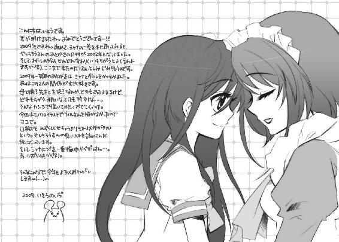
高橋弥七郎
年末年始は辛うじて大阪人。豆ちしきその18ー。カバーを取った表紙に記してある「電撃文庫○○○○」って四桁の数字は、電撃文庫全体の通巻番号なんやでー。ちなみにキリ番号の１０００は『キノの旅Ｘ』で、１００１は『灼眼のシャナ』なんよー。
翳のある雰囲気を気取ってみる作者
いとうのいぢ
あけましておめでとうございます２００９！今年最初の新刊ですね。こうしてここで毎年ご挨拶できることは有り難いことです。今年もよろしく！
電撃文庫
灼眼のシャナ
高橋弥七郎
二〇十二年八月十日 配信
発行者 塚田正晃
発行所 株式会社アスキー・メディアワークス
〒一〇二−八五八四 東京都千代田区富士見一−八−十九
(C)2009 YASHICHIRO TAKAHASI／ASCII MEDIA WORKS
本書（電子版）に掲載されているコンテンツ（ソフトウェア／プログラム／データ／情報を含む）の著作権およびその他の権利は、すべて株式会社アスキー・メディアワークスおよび正当な権利を有する第三者に帰属しています。
法律の定めがある場合または権利者の明示的な承諾がある場合を除き、これらのコンテンツを複製・転載、改変・編集、翻案・翻訳、放送・出版、公衆送信（送信可能化を含む）・再配信、販売・頒布、貸与等に使用することはできません。